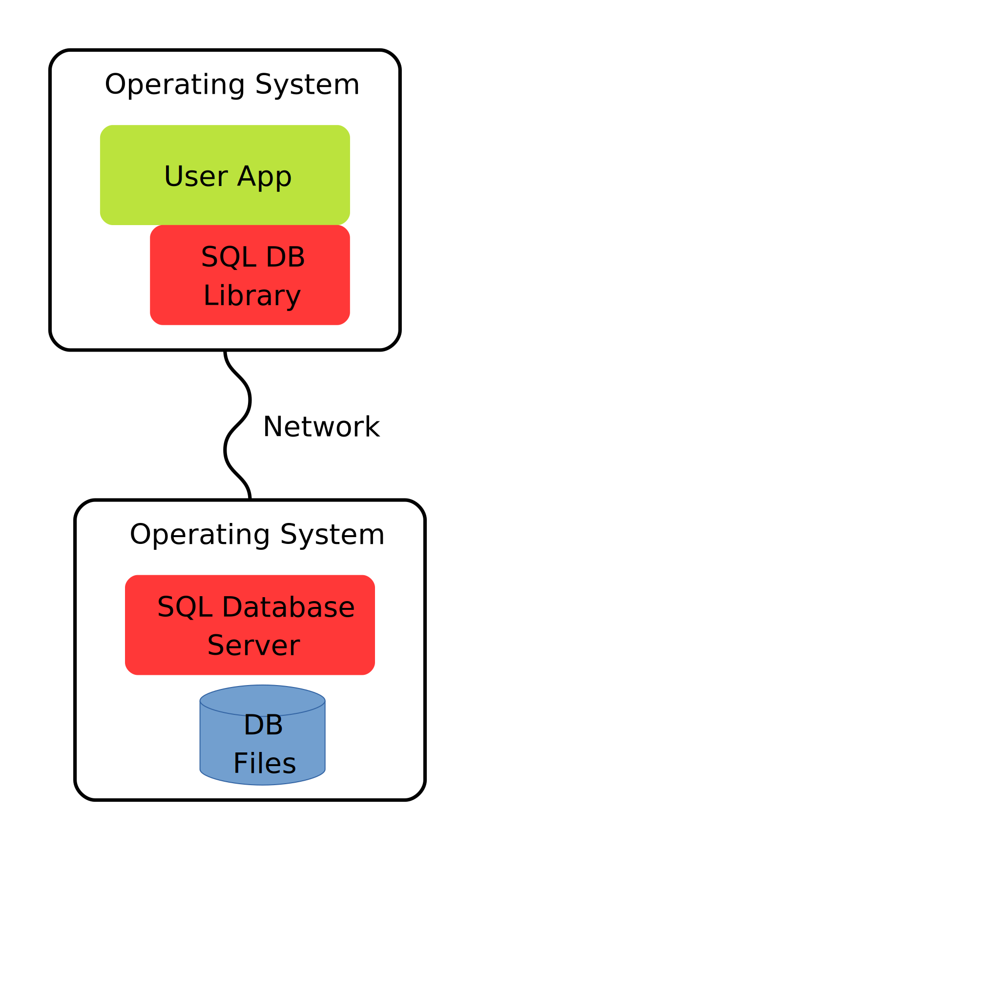
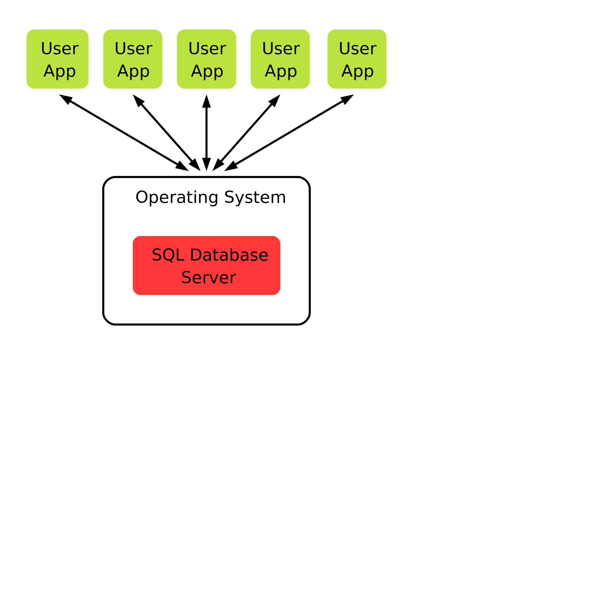
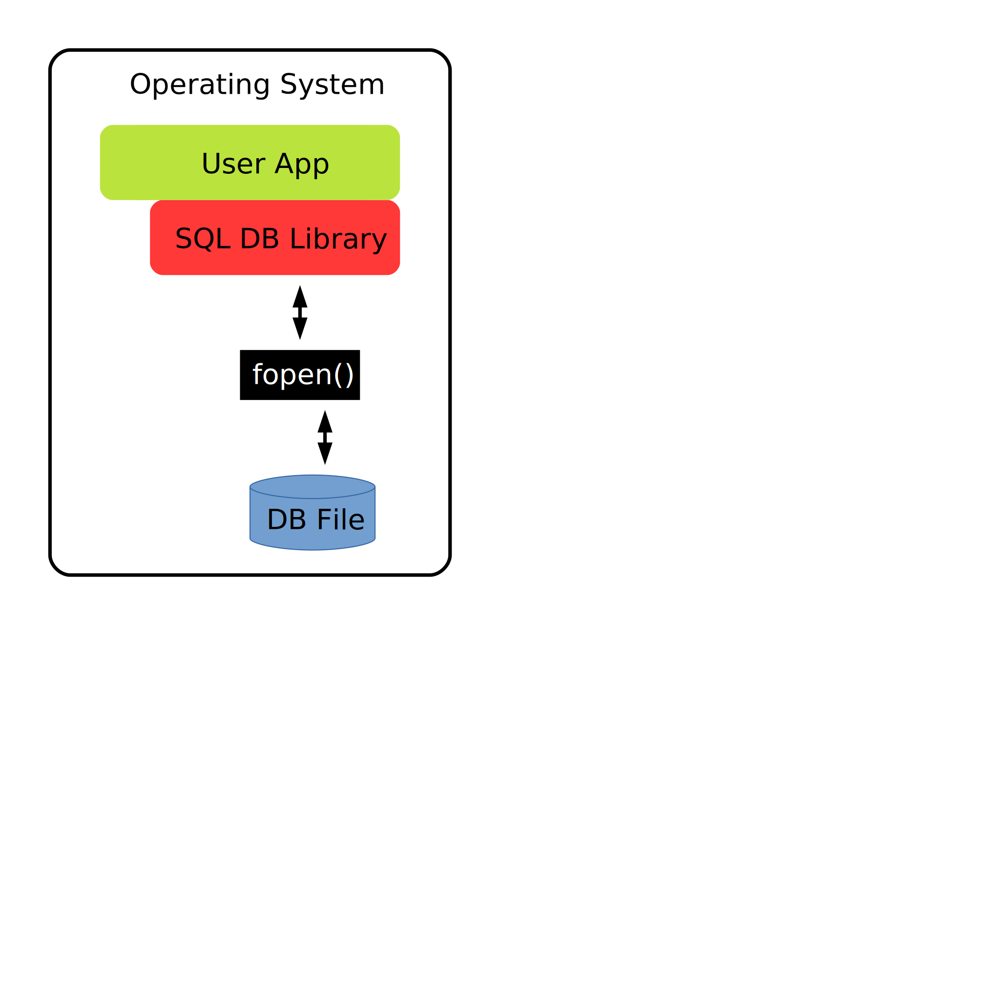
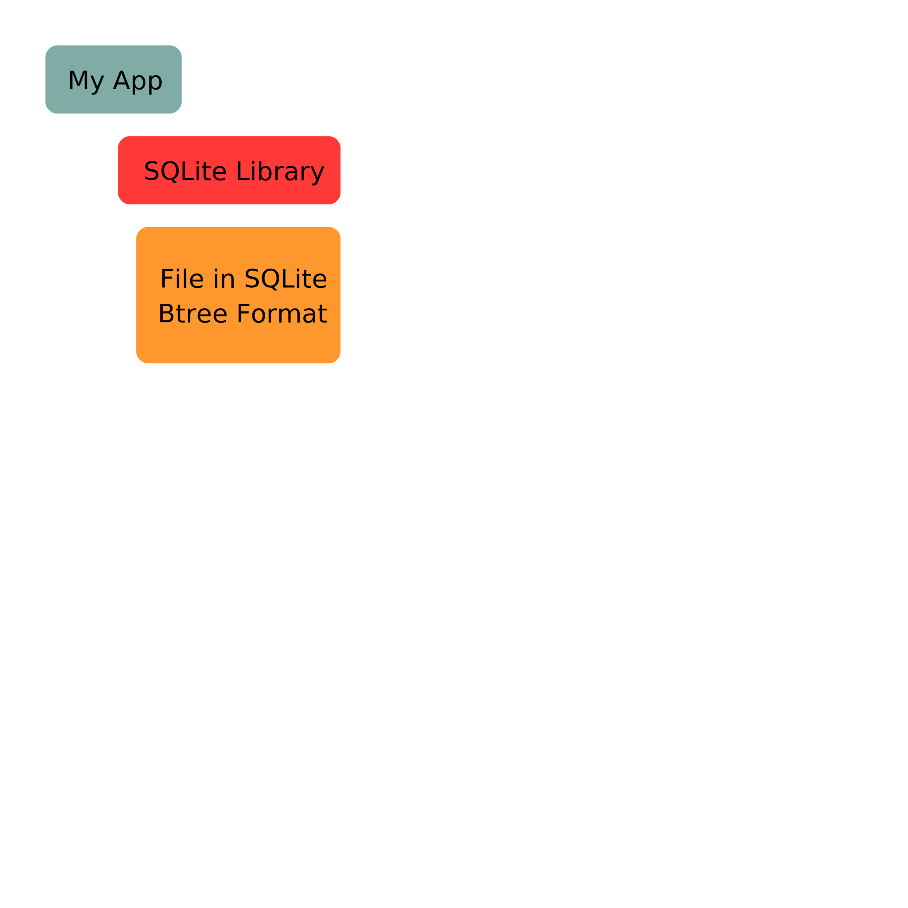

Welcome to LumoSQL

LumoSQL is a project under active developement. Our goal is to build a reliable and secure database management system that is fully open-source and improves on the performance on classic SQLite.
-
100% downstream and upstream compatibility with SQLite, with same command line interface.
-
Modular backends.
-
Stability through corruption detection and rollback journaling.
-
Reliably tested and benchmarked.
NEWS! - LumoSQL Phase II announcement
Phase II (ongoing)
- Role-based / attribute-based access control
- Implementation of hidden colums and tables
- Row level encryption
- Reseach and design of Lumions
- Bibliography(download .bib)
Phase I (complete)
LumoSQL started as a combination of two embedded data storage C language libraries: SQLite and LMDB. LumoSQL builds on Howard Chu's 2013 proof of concept sqlightning combining the two codebases. Howard's LMDB library has become a ubiquitous replacement for bdb on the basis of performance, reliability, and license so the 2013 claims of it greatly increasing the performance of SQLite seemed credible. D Richard Hipp's SQLite is used in thousands of software projects, and since three of them are Google's Android, Mozilla's Firefox and Apple's iOS, an improved version of SQLite will benefit billions of people.
-
Research
-
Design
-
Implemented Features
LumoSQL build and testing system allows the user to choose any version of SQLite and any available backend version, as well as other options during build in order to build a database best suited for user's needs. The performance of LumoSQL database can be tested and benchmared using the same tool.
In order to make LumoSQL modular and compatible with a range of upstream versions, we have developed a tool that attempts to automate source code tracking. By tracking changes it avoids project level forking and therefore is called a not-forking tool.
LMDB provides a fast and reliable way to store key-value data and has been proven by Howard Chu to outperform the native SQLite b-tree in some situations.
Row level checksums lets us find out if the data has been corrupted and locate the precise row that has been affected, thus making it easier to fix corruption issues.
In order to test the performace of LumoSQL and prove or disprove its effectiveness we want to make sure that our benchmarking results are accurate and reproducible.
LumoSQL is currently under development. Contributions to code and documentation are welcome.
LumoSQL was started in December 2019 by Dan Shearer, who did the original source tree archaeology, patching and test builds. Keith Maxwell joined shortly after and contributed version management to the Makefile and the benchmarking tools.
LumoSQL is supported by the NLnet Foundation.
Published under MIT license.
LumoSQL
LumoSQL is a modification (not a fork) of the SQLite embedded data storage library, the most-deployed software. LumoSQL adds performance, security and privacy features, partly by adding multiple backend storage systems. If you are an SQLite user familiar with C development wanting an easier way to benchmark and measure SQLite, or if you are wanting features only available in other key-value storage engines, then you may find LumoSQL interesting.
In Phase II of LumoSQL we are building on the existing optional per-row checksums to add per-row Attribute-Based Encryption (ABE) and much more.
In the existing LumoSQL 0.4 there are currently three LumoSQL backends:
- the default SQLite Btree storage system
- LMDB
- the Berkley Database
LumoSQL has a build and benchmarking tool for comparing vanilla SQLite versions and configurations with each other, as well as comparing the performance of different storage backends. LumoSQL is written in C, like SQLite. The benchmarking and other tools are written in Tcl, like much of the tooling and extensions for SQLite and Fossil. The build tool guarantees that options and configurations are always selected in the same way, so that benchmark results are reliable.
LumoSQL is distributed under very liberal licence terms.
LumoSQL is supported by the NLNet Foundation.
Neither Windows nor Android are supported at present, despite being important SQLite targets. We do plan to do so, and in addition contributors are most welcome via the LumoSQL Fossil site.
Table of Contents
- Design, Not-Forking and Participating
- LumoSQL, and SQLite's Billions of Users
- Limitations of LumoSQL
- Build Environment and Dependencies
- Using the Build and Benchmark System
- A Brief History of LumoSQL
Design, Not-Forking and Participating
If you are reading this on Github, then you are looking at a mirror. LumoSQL is is maintained using the Fossil repository. If you want to participate in LumoSQL there is a forum, and if you have code contributions you can ask for access to the respository.
LumoSQL has multiple upstreams, but does not fork any of them despite needing modifications. The novel Not-forking tool semi-automatically tracks upstream changes and is a requirement for building LumoSQL. Between not-forking and the LumoSQL Build and Benchmark System, LumoSQL is as much about combining and configuring upstreams as it is about creating original database software. By maintaining Not-forking outside LumoSQL, we hope other projects will find it useful.
The LumoSQL and SQLite projects are cooperating, so any merge friction is expected to become less over time, and key to that is the approach of not forking.
LumoSQL, and SQLite's Billions of Users
LumoSQL exists to demonstrate changes to SQLite that might be useful, but which SQLite probably cannot consider for many years because of SQLite's unique position of being used by a majority of the world's population.
SQLite is used by thousands of software projects, just three being Google's Android, Mozilla's Firefox and Apple's iOS which between them have billions of users. That is a main reason why SQLite is so careful and conservative with all changes.
On the other hand, many of these same users need SQLite to have new features which do not fit with the SQLite project's cautious approach, and LumoSQL is a demonstration of some of these improvements.
The LumoSQL documentation project reviews dozens of relevant codebases. SQLite has become ubiquitous over two decades, which means there is a great deal of preparation needed when considering architectural changes.
Limitations of LumoSQL
As of LumoSQL 0.4, there are many obvious limitations, including:
- The tests used in benchmarking mostly come from an ancient version of SQLite's speedtest.tcl modified many times, to which DATASIZE and DEBUG have been added. Experts in SQLite and LMDB database testing should review the files in not-fork.d/sqlite3/benchmark/*test. There are 9 tools named *speed* in the SQLite source, and any/all of them should be added here.
- Neither LMDB nor BDB backends ship with latest SQLite builds. Now all the LumoSQL infrastructure exists, that is a smaller, more maintainable and repeatable task. But it is not done yet. There are some generic problems to be solved in the process, such as the optimal way to address keysize disparities between a KVP store provider and SQLite's internal large keysize.
- If we import more of the speed tests from SQLite identified above, then we will have a problem with several LMDB and at least two BDB instances, where the SQLite tests will fail. In most cases this is about the LMDB port needing to be more complete but in some it is about relevance, where some SQLite tests will not apply. In addition some backends will always need to have additional tests (for example, BDB has more extensive user management than SQLite).
A Brief History of LumoSQL
There have been several implementations of new storage backends to SQLite, all of them hard forks and nearly all dead forks. A backend needs certain characteristics:
- btree-based key-value store
- transactions, or fully ACID
- full concurrency support, or fully MVCC
There are not many candidate key-value stores. One of the most widely-used is Howard Chu's LMDB. There was a lot of attention in 2013 when Howard released his proof of concept SQLite port. LMDB operates on a very different and more modern principle to all other widely-used key/value stores, potentially bringing benefits to some users of SQLite. In 2013, the ported SQLite gave significant performance benefits.
The original 2013 code modified the SQLite btree.c from version SQLite
version 3.7.17 to use LMDB 0.9.9 . It took considerable work for LumoSQL to
excavate the ancient code and reproduce the results.
By January 2020 the LumoSQL project concluded:
- Howard's 2013 performance work is reproducible
- SQLite's key-value store improved in performance since 2013, getting close to parity with LMDB by some measures
- SQLite can be readily modified to have multiple storage backends and still pass 'make test'
- SQLite doesn't expect there to be multiple backends, and this has many effects including for example in error handling. An abstraction layer was needed.
Since then, many new possibilities have emerged for LumoSQL, and new collaborations.
Table of Contents

Overall Objective of LumoSQL
To create Privacy-compliant Open Source Database Platform with Modern Design and Benchmarking,
usable either embedded or online.
This is the guide for every aspect of the project, which will ensure that LumoSQL offers features that money can't buy, and drawing together an SQLite-related ecosystem.
LumoSQL is based on SQLite. It aims to incorporate all of the features of SQLite and improve it many ways.
Development Goals
-
SQLite upstream promise: LumoSQL does not fork SQLite, and offers 100% compatibility with SQLite by default, and will contribute to SQLite where possible. This especially includes the SQLite user interface mechanisms of pragmas, library APIs, and commandline parameters.
-
Legal promise: LumoSQL does not come with legal terms less favourable than SQLite. LumoSQL will aim to improve the legal standing and safety worldwide as compared to SQLite.
-
Developer contract: LumoSQL has stable APIs (Application Programming Interfaces) for features found in multiple unrelated SQLite downstream projects: backends, frontends, encryption, networking and more.
-
Devops contract: LumoSQL reduces risk by making it possible to omit compilation of unneeded features, and has stable ABIs (Application Binary Interfaces) so as to not break dynamically-linked applications.
-
Ecosystem creation: LumoSQL will offer consolidated contact, code curation, bug tracking, licensing, and community communications across all these features from other projects. Bringing together SQLite code contributions under one umbrella reduces technical risk in many ways, from inconsistent use of threads to tracking updated versions.
LumoSQL Design
-
LumoSQL has three canonical and initial backends: btree (the existing SQLite btree, ported to a new backend system); the LMDB backend; and the BDB backend. Control over these interfaces is through the same user interface mechanisms as the rest of LumoSQL, and SQLite.
-
LumoSQL improves SQLite quality and privacy compliance by introducing optional on-disk checksums for storage backends including the original SQLite btree format. This allows real-time row-level corruption detection.
-
LumoSQL improves SQLite quality and privacy compliance by introducing optional storage backends that are more crash-resistant than SQLite btree (such as LMDB) and more oriented towards complete recovery (such as BDB).
-
LumoSQL improves SQLite integrity in persistent storage by introducing optional row-level checksums.
-
LumoSQL provides the benefits of Open Source by being an open project and continuing to accept and review contributions in an open way, using Fossil and having diverse contributors.
-
LumoSQL improves SQLite design by intercepting APIs at a very small number of critical choke-points, and giving the user optional choices at these choke points. The choices are for alternative storage backends, front end parsers, encryption, networking and more, all without removing the zero-config and embedded advantages of SQLite
-
LumoSQL provides a means of tracking upstream SQLite, by making sure that anything other than the API chokepoints can be synched at each release, or more often if need be.
-
LumoSQL provides updated public testing tools, with results published and instructions for reproducing the test results. This also means excluding parts of the LumoSQL test suite that don't apply to new backends
-
LumoSQL provides benchmarking tools, otherwise as per the testing tools.
-
LumoSQL ensures that new code remains optional by means of modularity at compiletime and also runtime. By illustration of modularity, at compiletime nearly all 30 million lines of the Linux kernel can be excluded giving just 200k lines. Runtime modularity is controlled through the same user interfaces as the rest of LumoSQL.
-
LumoSQL ensures that new code may be active at once, eg. multiple backends or frontends for conversion between/upgrading from one format or protocol to another. This is important to provide continuity and supported upgrade paths for users, for example, users who want to become privacy-compliant without disrupting their end users.
-
Over time, LumoSQL will carefully consider the potential benefits of dropping some of the most ancient parts of SQLite when merging from upstream, provided it does not conflict with any of the other goals in this document. Eliminating SQLite code can be done by a similar non-forking mechanism as used to keep in synch with the SQLite upstream. Patches will be offered to sqlite.org
Install LumoSQL
Installation consists of obtaining all relevant 3rd party dependencies (tcl, tclx, perl with modules TextGlob and Git, file, gnumake, gzip, gnutar, fossil or git, wget or curl), then downloading and installing the not-forking tool as an executable command, and downloading LumoSQL build tools that work currently as make commands.
Containers
The maintainers are test building LumoSQL on Debian, Fedora, Gentoo and Ubuntu. Container images with the dependencies installed are available at https://quay.io/repository/keith_maxwell/lumosql-build and the build steps are in https://github.com/maxwell-k/containers.
Installing Not-forking
This step requires perl with Text::Glob and a few other core modules, not-forking installation will inform you if the relevant modules are missing on your system, more information on installing it on different systems can be found below, as well as with the not-forking documentation.
wget -O- https://lumosql.org/src/not-forking/tarball/trunk/Not-forking-trunk.tar.gz | tar -zxf -
cd Not-forking-trunk
perl Makefile.PL
make
sudo make install
Build LumoSQL
Dependencies needed for this step include (tcl, tclx, file, gnumake, gzip, gnutar, fossil or git, wget or curl). Read below for more information on installing them on your distribution of choice.
fossil clone https://lumosql.org/src/lumosql
cd lumosql
make what
fossil command can be replaced with git or wget
make what will show which taregts will be built by typing make
Now you can build different target databases and benchmark them. For make options read the quickstart and the build and benchmark system sections.
Installing on Popular Distributions
Perl Modules
The default Perl installation on Debian/Ubuntu is perl-base, and on Fedora/Red Hat is perl-core. These have nearly all the Perl modules required except for Text::Glob.
For example, on a Debian or Ubuntu system, as root type:
# apt install libtext-glob-perl
Or on a Fedora/Red Hat system, as root type:
# dnf install perl-text-glob
Or on a Gentoo system, as root type:
emerge --ask dev-perl/Text-Glob
On FreeBSD:
pkg install perl5 p5-Text-Glob
# for the complete list of recommended programs to access source repositories:
pkg install fossil perl5 git p5-Git-Wrapper curl p5-Text-Glob patch
On minimal operating systems such as often used with Docker there is just a basic Perl package present. You will need to add other modules including ExtUtils::MakeMaker, Digest::SHA, Perl::Git, File::Path and Perl::FindBin .
Not-forking will inform you of any missing Perl modules.
Download and Install Not-Forking
To download Not-forking, you can use fossil clone or git clone, or, to download with wget:
wget -O- https://lumosql.org/src/not-forking/tarball/trunk/Not-forking-trunk.tar.gz | tar -zxf -
cd Not-forking-trunk
Once you have downloaded the Not-forking source, you can install it using:
perl Makefile.PL
make
sudo make install # You need root for this step, via sudo or otherwise
If you are on a minimal operating system you may be missing some Perl modules
as decsribed above. The command perl Makefile.PL will fail with a helpful
message if you are missing modules needed to build Not-forking. Once you have
satisfied the Not-forking build dependencies, you can check that Not-forking
has everything it could possibly need by typing:
not-fork --check-recommend
and fixing anything reported as missing, or which is too old in cases where that matters.
At which point the not-fork command is installed in the system and its
required modules are available where your perl installation expects to
find them.
Build Environment and Dependencies for LumoSQL build
Debian or Ubuntu-derived Operating Systems
Uncomment existing deb-src line in /etc/apt/sources.list, for example
for Ubuntu 20.04.2 a valid line is:
deb-src http://gb.archive.ubuntu.com/ubuntu focal main restricted
Then run
sudo apt update # this fetches the deb-src updates
sudo apt full-upgrade # this gets the latest OS updates
sudo apt install git build-essential tclx
sudo apt build-dep sqlite3
The exact commands above have been tested on a pristine install of Ubuntu 20.04.2 LTS, as installed from ISO or one of the operating systems shipped with Windows Services for Linux.
Fedora-derived Operating Systems
On any reasonably recent Fedora-derived Linux distribution, including Red Hat:
<b>
sudo dnf install --assumeyes \
git make gcc ncurses-devel readline-devel glibc-devel autoconf tcl-devel tclx-devel
Common to all Linux Operating Systems
-
Recommended: Fossil. As described above, you don't necessarily need Fossil. But Fossil is very easy to install: if you can't get version 2.13 or later from your distrbution then it is easy to build from source. (Note! Ubuntu 20.04, Debian Buster and Gentoo do not include a sufficiently modern Fossil, while NetBSD and Ubuntu 20.10 do.) Since you now have a development environment anyway you can build Fossil trunk according to the official instructions or this simpler version (tested on Ubuntu 20.04 LTS):
- wget -O- https://fossil-scm.org/home/tarball/trunk/Fossil-trunk.tar.gz | tar -zxf -
- sudo apt install libssl-dev
- cd Fossil-trunk ; ./configure ; make
- sudo make install
-
For completeness (although every modern Linux/Unix includes these), to build and benchmark any of the Oracle Berkeley DB targets, you need either "curl" or "wget", and also "file", "gzip" and GNU "tar". Just about any version of these will be sufficient, even on Windows.
-
If you are running inside a fresh Docker or similar container system, Fossil may be confused about the user id. One solution is to add a user (eg "adduser lumosql" and answer the questions) and then "export USER=lumosql".
On Debian 10 "Buster" Stable Release, the not-forking makefile ("perl Makefile.PL") will warn that git needs to be version 2.22 or higher. Buster has version 2.20, however this is not a critical error. If you don't like error messages scrolling past during a build, then install a more recent git from Buster backports.
Now you have the dependencies installed, clone the LumoSQL repository using
fossil clone https://lumosql.org/src/lumosql , which will create a new subdirectory called lumosql and
a file called lumosql.fossil in the current directory.
Try:
cd lumosql
make what
To see what the default sources and options are. The what target does not make any changes although it may generate a file Makefile.options to help make parse the command line.
Build Environment and Dependencies
Most developers already have the required minimum of git and core *ix development tools. SQLite has very few dependencies (mostly Tcl), and LumoSQL adds one Perl-based processing tool.
LumoSQL is mirrored to Github and application developers can use git with Github in the usual way. LumoSQL developers working on the LumoSQL library internals choose to use Fossil source code manager instead of git, and if you're planning to develop LumoSQL internals then you need Fossil.
There are many reasons why people choose Fossil. For LumoSQL one of them is that SQLite and Fossil are symbiotic projects, each written in the other.
Debian or Ubuntu-derived Operating Systems
Uncomment existing deb-src line in /etc/apt/sources.list, for example
for Ubuntu 20.04.2 a valid line is:
deb-src http://gb.archive.ubuntu.com/ubuntu focal main restricted
Then run
sudo apt update # this fetches the deb-src updates
sudo apt full-upgrade # this gets the latest OS updates
sudo apt install git build-essential tclx
sudo apt build-dep sqlite3
The exact commands above have been tested on a pristine install of Ubuntu 20.04.2 LTS, as installed from ISO or one of the operating systems shipped with Windows Services for Linux.
Fedora-derived Operating Systems
On any reasonably recent Fedora-derived Linux distribution, including Red Hat:
sudo dnf install --assumeyes \
git make gcc ncurses-devel readline-devel glibc-devel autoconf tcl-devel tclx-devel
Common to all Linux Operating Systems
Once you have done the setup specific to your operating system in the previous steps, the following should work on reaonably recent Debian and Fedora-related operating systems, and Gentoo.
Other required tools can be installed from your operating system's standard packages. Here are the tool dependencies:
- Mandatory: the not-forking tool, which is a Perl script that needs to be downloaded and installed manually. The instructions for not-forking are on its website.
- Recommended: Fossil. As described above, you don't necessarily need Fossil. But Fossil is very easy to install: if you can't get version 2.13 or later from your distrbution then it is easy to build from source.
(Note! Ubuntu 20.04, Debian Buster and Gentoo do not include a sufficiently modern Fossil, while NetBSD
and Ubuntu 20.10 do.) Since you now have a development environment anyway you can
build Fossil trunk according to the official instructions or this simpler version (tested on Ubuntu 20.04 LTS):
- wget -O- https://fossil-scm.org/home/tarball/trunk/Fossil-trunk.tar.gz | tar -zxf -
- sudo apt install libssl-dev
- cd Fossil-trunk ; ./configure ; make
- sudo make install
- For completeness (although every modern Linux/Unix includes these), to build and benchmark any of the Oracle Berkeley DB targets, you need either "curl" or "wget", and also "file", "gzip" and GNU "tar". Just about any version of these will be sufficient, even on Windows.
- If you are running inside a fresh Docker or similar container system, Fossil may be confused about the user id. One solution is to add a user (eg "adduser lumosql" and answer the questions) and then "export USER=lumosql".
The not-forking tool will advise you with a message if you need a tool or a version that is not installed.
On Debian 10 "Buster" Stable Release, the not-forking makefile ("perl Makefile.PL") will warn that git needs to be version 2.22 or higher. Buster has version 2.20, however this is not a critical error. If you don't like error messages scrolling past during a build, then install a more recent git from Buster backports.
Quickstart: Using the Build and Benchmark System
This is a very brief quickstart, for full detail see the Build and Benchmark System documentation.
Now you have the dependencies installed, clone the LumoSQL repository using
fossil clone https://lumosql.org/src/lumosql , which will create a new subdirectory called lumosql and
a file called lumosql.fossil in the current directory.
Try:
cd lumosql
make what
To see what the default sources and options are. The what target does not make any changes although it may generate a file Makefile.options to help make parse the command line.
Benchmarking a single binary should take no longer than 4 minutes to complete depending
on hardware. The results are stored in an SQLite database stored in the LumoSQL
top-level directory by default, that is, the directory you just created using fossil clone.
Start by building and benchmarking the official SQLite release version 3.35.5, which is the current release at the time of writing this README.
make benchmark USE_LMDB=no USE_BDB=no SQLITE_VERSIONS='3.35.5'
All source files fetched are cached in ~/.cache/LumoSQL in a way that maximises reuse regardless of
their origin (Fossil, git, wget etc) and which minimises errors. The LumoSQL build system is driving the
not-fork tool, which maintains the cache. Not-fork will download just the differences of a remote
version if most of the code is already in cache.
The output from this make command will be lots of build messages followed by something like this:
*** Running benchmark 3.35.5
TITLE = sqlite 3.35.5
SQLITE_ID = 1b256d97b553a9611efca188a3d995a2fff71275
SQLITE_NAME = 3.35.5 2021-04-19 18:32:05 1b256d97b553a9611efca188a3d995a2fff712759044ba480f9a0c9e98faalt1
DATASIZE = 1
DEBUG = off
LMDB_DEBUG = off
LMDB_FIXED_ROWID = off
LMDB_TRANSACTION = optimistic
ROWSUM = off
ROWSUM_ALGORITHM = sha3_256
SQLITE3_JOURNAL = default
RUN_ID = 70EA47101F68CDD6D3C0ED255962A2AA50F1540EE4FEBB46A03FAD888B49676C
OK 0.003 1 Creating database and tables
OK 0.019 2 1000 INSERTs
OK 0.007 3 100 UPDATEs without an index, upgrading a read-only transaction
OK 0.052 4 25000 INSERTs in a transaction
OK 0.113 5 100 SELECTs without an index
OK 0.243 6 100 SELECTs on a string comparison
OK 0.012 7 Creating an index
OK 0.046 8 5000 SELECTs with an index
OK 0.036 9 1000 UPDATEs without an index
OK 0.113 10 25000 UPDATEs with an index
OK 0.093 11 25000 text UPDATEs with an index
OK 0.032 12 INSERTs from a SELECT
OK 0.020 13 DELETE without an index
OK 0.028 14 DELETE with an index
OK 0.027 15 A big INSERT after a big DELETE
OK 0.010 16 A big DELETE followed by many small INSERTs
OK 0.005 17 DROP TABLE
0.859 (total time)
A database with the default name of benchmarks.sqlite has been created with
two tables containing the results. This is one single test run, and the test
run data is kept in the table test_data. The table run_data contains data
relative to a set of runs (version numbers, time test started, etc). This is cumulative,
so another invocation of make benchmark will append to benchmarks.sqlite.
Every run is assigned a SHA3 hash, which helps in making results persistent over time and across the internet.
The tool benchmark-filter.tcl does some basic processing of these results:
tool/benchmark-filter.tcl
RUN_ID TARGET DATE TIME DURATION
70EA47101F68CDD6D3C0ED255962A2AA50F1540EE4FEBB46A03FAD888B49676C 3.35.5 2021-05-20 16:13:18 0.859
The option DATASIZE=parameter is a multiplication factor on the size of the chunks that is used for benchmarking. This is useful because it can affect the time it takes to run the tests by a very different multiplication factor:
make benchmark USE_LMDB=no USE_BDB=no DATASIZE=2 SQLITE_VERSIONS='3.35.5 3.33.0'
followed by:
tool/benchmark-filter.tcl
RUN_ID TARGET DATE TIME DURATION
70EA47101F68CDD6D3C0ED255962A2AA50F1540EE4FEBB46A03FAD888B49676C 3.35.5 2021-05-20 16:13:18 0.859
65DD0759B133FF5DFBBD04C494F4631E013C64E475FC5AC06EC70F4E0333372F 3.35.5++datasize-2 2021-05-20 16:18:30 2.511
931B1489FC4477A41914A5E0AFDEF3927C306339FBB863B5FB4CF801C8F2F3D0 3.33.0++datasize-2 2021-05-20 16:18:51 2.572
Simplistically, these results suggest that SQLite version 3.35.5 is faster than 3.33.0 on larger data sizes, but that 3.35.5 is much faster with smaller data sizes. After adding more versions and running the benchmarking tool again, we would soon discover that SQLite 3.25.0 seems faster than 3.33.0, and other interesting things. Simplistic interpretations can be misleading :-)
This is a Quickstart, so for full detail you will need the Build/Benchmark documentation. However as a teaser, and since LMDB was the original inspiration for LumoSQL (see the [History section below]((#a-brief-history-of-lumosql) for more on that) here are some more things that can be done with the LMDB target:
$ make what LMDB_VERSIONS=all
tclsh tool/build.tcl what not-fork.d MAKE_COMMAND='make' LMDB_VERSIONS='all'
BENCHMARK_RUNS=1
COPY_DATABASES=
COPY_SQL=
MAKE_COMMAND=make
NOTFORK_COMMAND=not-fork
NOTFORK_ONLINE=0
NOTFORK_UPDATE=0
SQLITE_VERSIONS=3.35.5
USE_SQLITE=yes
USE_BDB=yes
SQLITE_FOR_BDB=
BDB_VERSIONS=
BDB_STANDALONE=18.1.32=3.18.2
USE_LMDB=yes
SQLITE_FOR_LMDB=3.35.5
LMDB_VERSIONS=all
LMDB_STANDALONE=
OPTION_DATASIZE=1
OPTION_DEBUG=off
OPTION_LMDB_DEBUG=off
OPTION_LMDB_FIXED_ROWID=off
OPTION_LMDB_TRANSACTION=optimistic
OPTION_ROWSUM=off
OPTION_ROWSUM_ALGORITHM=sha3_256
OPTION_SQLITE3_JOURNAL=default
BUILDS=
3.35.5
3.18.2
+bdb-18.1.32
3.35.5+lmdb-0.9.11
3.35.5+lmdb-0.9.12
3.35.5+lmdb-0.9.13
3.35.5+lmdb-0.9.14
3.35.5+lmdb-0.9.15
3.35.5+lmdb-0.9.16
3.35.5+lmdb-0.9.17
3.35.5+lmdb-0.9.18
3.35.5+lmdb-0.9.19
3.35.5+lmdb-0.9.20
3.35.5+lmdb-0.9.21
3.35.5+lmdb-0.9.22
3.35.5+lmdb-0.9.23
3.35.5+lmdb-0.9.24
3.35.5+lmdb-0.9.25
3.35.5+lmdb-0.9.26
3.35.5+lmdb-0.9.27
3.35.5+lmdb-0.9.28
3.35.5+lmdb-0.9.29
TARGETS=
3.35.5
3.18.2
+bdb-18.1.32
3.35.5+lmdb-0.9.11
3.35.5+lmdb-0.9.12
3.35.5+lmdb-0.9.13
3.35.5+lmdb-0.9.14
3.35.5+lmdb-0.9.15
3.35.5+lmdb-0.9.16
3.35.5+lmdb-0.9.17
3.35.5+lmdb-0.9.18
3.35.5+lmdb-0.9.19
3.35.5+lmdb-0.9.20
3.35.5+lmdb-0.9.21
3.35.5+lmdb-0.9.22
3.35.5+lmdb-0.9.23
3.35.5+lmdb-0.9.24
3.35.5+lmdb-0.9.25
3.35.5+lmdb-0.9.26
3.35.5+lmdb-0.9.27
3.35.5+lmdb-0.9.28
3.35.5+lmdb-0.9.29
After executing this build with make benchmark rather than make what, here are summary results using a
a new parameter to benchmark-filter.tcl:
$ tool/benchmark-filter.tcl -fields TARGET,DURATION
TARGET DURATION
3.35.5 0.852
3.35.5+lmdb-0.9.11 1.201
3.35.5+lmdb-0.9.12 1.211
3.35.5+lmdb-0.9.13 1.212
3.35.5+lmdb-0.9.14 1.219
3.35.5+lmdb-0.9.15 1.193
3.35.5+lmdb-0.9.16 1.191
3.35.5+lmdb-0.9.17 1.213
3.35.5+lmdb-0.9.18 1.217
3.35.5+lmdb-0.9.19 1.209
3.35.5+lmdb-0.9.20 1.223
3.35.5+lmdb-0.9.21 1.229
3.35.5+lmdb-0.9.22 1.230
3.35.5+lmdb-0.9.23 1.215
3.35.5+lmdb-0.9.24 1.218
3.35.5+lmdb-0.9.25 1.219
3.35.5+lmdb-0.9.26 1.220
3.35.5+lmdb-0.9.27 1.220
3.35.5+lmdb-0.9.28 1.209
3.35.5+lmdb-0.9.29 1.209
Again, simplistic interpretations are insufficient, but the data here suggests that LMDB has decreased
in performance over time, to improve again with the most recent versions, and no version of LMDB is faster than native SQLite 3.35.5 . However, further
benchmark runs indicate that is not the final story, as LMDB run on slower hard disks improve in relative
speed rapidly. And using the DATASIZE option also changes the picture.
The results for the Berkely DB backend are also most interesting.
Not-Forking Upstream Source Code Tracker
Not-forking tool is a code integration tool that offers unprecedented flexibility (patch/sed/diff/cp/mv) in making changes to codebases and tracking them over new releases of source software.
It was developed to facilitate LumoSQL, which combines SQLite and LMDB code for all available versions of SQLite and LMDB.
Not-Forking is released as a separate software tool and it's available for use in other proects. Documentation on Not-Forking is maintained separately. Read about Not-Forking and full documentation on using the tool.
LumoSQL Build and Benchmark System
LumoSQL implements a meta-build system for SQLite, using the Not-Forking tool to handle many of the complexities so we can build a matrix of combined codebases and versions without having a mess of code specific to particular source trees.
But once a binary is built, how can we know if our changes to SQLite make a difference, and what kind of difference? There was no standard way to compare software that implements the SQLite APIs, so we designed one.
The LumoSQL Build and Benchmark System is relevant to all SQLite users wishing to compare different configurations and versions of standard SQLite. In addition, the LumoSQL project includes code to combine any version of SQLite with any version of third party storeage backends, and to run tests on the combined code. This requires small modifications to SQLite itself, and some new code to interface each backend.
Questions The Build and Benchmark System Answers
A single command can now give universal, repeatable, definitive answers to the following seemingly-simple questions:
- How can benchmarking runs be shared in a consistent manner between all users? (hint: use a standardised SQLite database)
- Does SQLite get faster with each version? (hint: not always)
- Which compile options make a given version of SQLite faster?
- How do different versions and compile options combine to change performance as data size gets larger?
- Does SQLITE_DEBUG really make SQLite run approximately three times slower?
- What happens when a given set of compile options, versions and data size are tested on faster and slower disks?
- Do I need to run hundreds of combinations to make decisions about SQLite versions/options/hardware? (hint: no, because you now can compare benchmarking results databases)
Having addressed the above questions, the following seemingly more-difficult questions now become very similar to the previous ones:
- What happens to performance when LMDB is swapped in as a storage backend for SQLite? (hint: there is a strange performance curve with increasing LMDB versions)
- How does the Oracle-funded BDB backend compare with other backends, including the SQLite Btree? (hint: Oracle seems to have thought longer runtimes are better :-)
- How do all of the above compare with each other with different build options, versions and datasizes? (hint: now can share benchmarking results, we can take advantage of thousands of CPU-hours from other people)
The rest of this document introduces and defines the benchmarking tool that makes answering these questions possible.
Build and benchmark problem statement
Motivation: LumoSQL has established that there is currently no way of comparing like-for-like SQLite-related databases.
Test matrix: LumoSQL consists of multiple source trees from multiple sources, assembled with the assistance of the not-forking tool. These trees represent a matrix with a very large number of dimensions. The dimensions include among other things: the combination of these source trees; their build process; their invocation parameters; their input data; and the running environment.
Example instances of these dimensions are:
- SQLite version 1 combined with LMDB version 2, to make combined source object A
- Combined source object A can be compiled with
-DSQLITE_DEBUG, and also-D MDB_MAXKEYSIZE(which only applies to LMDB). That will give two build objects to test, call them binary objects B and C. - Each of binary objects B and C can be tested with large data files, and many small files.
- Each of the above tests can be run in an environment with large amounts of memory, or with deliberate memory constraints.
- All of the above can then be repeated only with different versions of SQLite and LMDB
- ... and then we move on to the different versions of pure SQLite, and SQLite combined with Berkeley DB, etc.
Problem statement:
The LumoSQL Build and Benchmark system solves the problem of defining the dimensions of the test matrix in a formal machine-friendly manner, and presenting them to the user in a human-friendly manner. The user can then select some or all of these dimensions by human-readable name, and then cause them to be actioned. Every selection by the user will have multiple dependency actions.
To ensure repeatability of tests, each test will include the following information:
- the version of the "not-forking" configuration used
- the version of sqlite3 used (in one special case building third-party backend code which provides its own patched version of sqlite3, this will be empty and the backend name and version will contain information about the third-party code)
- the name of the storage backend used: this is omitted if the test used an unchanged version of sqlite3 with its own backend
- the version of the storage backend used, also omitted for tests using an unchanged version of sqlite3
- any other options (currently only
datasize-Nto multiply the data size used in some benchmarks byN)
Where the user has requested average results, the tests may be run several times.
Build and benchmark options
Commandline parameters
(this section is included verbatim comments at the top of build.tcl, which is the master
version. It helps to have it here for context for the rest of the documentation.)
Executive summary:
# build.tcl OPERATION NOTFORK_CONFIG ARGUMENTS
# OPERATION: options
# ARGUMENTS: [OUTPUT_FILE]
# create a Makefile fragment so that "make" can accept
# command-line options corresponding to build options
# OPERATION: database
# ARGUMENTS: BUILD_DIR DATABASE_NAME
# create database
# OPERATION: what
# ARGUMENTS: BUILD_OPTIONS
# show what targets/options have been selected based on command-line
# OPERATION: targets
# ARGUMENTS: BUILD_OPTIONS
# same as "what", but the list of targets are all in one line,
# for easier copy-paste when trying to run the exact same list
# in multiple places
# OPERATION: build
# ARGUMENTS: BUILD_DIR BUILD_OPTIONS
# build LumoSQL, if necessary
# OPERATION: cleanup
# ARGUMENTS: BUILD_DIR BUILD_OPTIONS
# check cached builds, and deletes anything which is no longer
# up-to-date (would be rebuilt anyway)
# OPERATION: benchmark
# ARGUMENTS: BUILD_DIR DATABASE_NAME BUILD_OPTIONS
# run benchmarks (run all tests marked for benchmarking and save timings)
# OPERATION: test
# ARGUMENTS: BUILD_DIR DATABASE_NAME BUILD_OPTIONS
# run tests (run all tests without saving timings)
Build and Benchmark configuration
A special subdirectory benchmark in not-fork.d/NAME contain files to
control the build and benchmark process for backend NAME (NAME can be
sqlite3 to control the process for all backends and/or for the unmodified
sqlite3). There must be at least one of the following files in each of those
directories:
-
versions- contains a list of versions ofNAMEto build/benchmark by default, one version per line; ifNAMEis a backend (as opposed tosqlite3) the version line can have two special formats:=VERSIONspecified which version of sqlite3 to use with this backend; andSQLITE_VERSION+BACKEND_VERSIONspecifies the two versions explicitely for a particular build; a line containing just a version number will use the default specified with=VERSION; the filenot-fork.d/lmdb/benchmarking/versionscontains some examples. The special versionlatestcorresponds to the latest version number known to the not-forking tool (usually, the latest available). -
standalone- for backends which contain their own sqlite3 sources, possibly modified, this file specifies to build/benchmark these rather than build the backend and then link it to an "official" sqlite3. Each line contains two version numbers, separated by space: the version of the backend itself, and the version of sqlite3 that it includes these are expected to include their own sqlite3, and they are built using that; the filenot-fork.d/bdb/benchmarking/standaloneshows how to use this for the BDB backend.
The remaining files in these directories specify build/benchmark options and code to run to produce benchmarks; the code will be documented in another section.
File names matching the pattern *.option specify options which are
relevant to building and/or benchmarking NAME. Each file corresponds
to a single option (the file name with the .option suffix removed must
be the same as the option name). Each file contains lines of the form
key=value (or key only) with the following keys defined at present:
build- does the option affects the build process? (valueyesorno, defaultno)default- default value for the option, if not specifiedequiv- a list of values (separated by a comma) which are considered equivalent; the first value is the one used to form internal target stringsrequiv- a regular expression and a string, separated by space; if a value matches the regular expression, it will be treated as though it were the replacement string insteadsyntax- regular expression defining the valid syntax for the option; default is to accept any string of alphanumeric characters; note that the expression is anchored, i.e. it must match the whole stringnumeric- abbreviation forsyntax=0|-?[1-9]\d*, accept only (integer) numeric values (without leading zeros); this key has no valuepositive- abbreviation forsyntax=[1-9]\d*, accept only (integer) positive numeric values (without leading zeros); this key has no valueboolean- abbreviation forsyntax=on|off|true|false,equiv=on,trueandequiv=off,false; this key has no valueenum- followed by a comma-separated list of values, abbreviation forsyntax=value1|value2|...|valueni.e. accept only values from the list
For example, not-fork.d/sqlite3/options/datasize.option contains information
about the datasize benchmark option:
build = no
syntax = [1-9]\d*(?:,[1-9]\d*)?
default = 1
requiv = (\d+),\1 \1
this means that the values are one or two positive numbers, and two identical values are equivalent to just a single one (e.g. 2,2 is the same as 2) for compatibility with previous versions of LumoSQL where the value was just a single positive integer.
Options which affect the build must be known to the lumo.build script and/or
to the lumo.mk Makefile fragment to be effective; these files are installed
by the not-forking configuration and control the build process.
Options which affect the benchmark must be implemented by one or more of the
tests actually ran, for example by changing data sizes or using PRAGMA
statements; the tool/build.tcl tries to know as little as possible about
what is being done, to help using the framework for other systems.
Options which apply to all backends are usually found in
not-fork.d/sqlite3/benchmark; options which apply to a single backend
will be found in the corresponding directory not-fork.d/BACKEND/benchmark.
no matter which backend they use. Options which affect the build could be
in any directory; currently there is no mechanism to address the case of the
same option is present in multiple directories, and it is undefined which
one will take precedence.
Backends as of LumoSQL 0.4
At present the only backend provided (in addition to sqlite's own btree)
is the lmdb backend; this was originally
derived from the sqlightning sources but has been rewritten to work with more
recent versions of lmdb and sqlite3;
however to add new backends see Adding new backends below.
A third backend, based on Oracle's Berkeley DB is in progress; a special target
of +bdb-VERSION (without a sqlite3 version) indicates to build the code provided
directy by Oracle, without using the LumoSQL build mechanism.
Specifying build/benchmark options to "make"
The Makefile has a mechanism to recognise build/benchmark options as command-line
option with the form OPTION=value where OPTION is the name of an option
translated to be in all capital letters; the name can also be prefixes with
the string OPTION_ in case there is a name clash with other existing Makefile
options: for example, if datasize is defined as the above example, the following
two commands are equivalent and will set this option to the value 2:
make benchmark DATASIZE=2
make benchmark OPTION_DATASIZE=2
Options which affect the build may cause a rebuild of the objects; options which only change the benchmark parameters can reuse an older build if available.
These options are in addition to the existing Makefile mechanism to generate
a list of targets, using the (previously documented) variables USE_backend,
backend_VERSIONS, etc:
SQLITE_VERSIONS=list- build and benchmark the specified versions instead of the default; the first version in the list will also be used to update the benchmark result database (if a backend is built, the corresponding unmodified version of sqlite is also added to this list, so the benchmark can compare them); see below for the exact syntax of the listUSE_SQLITE=yes- build and benchmark an unmodified sqlite3: this is the defaultUSE_SQLITE=no- do not build/benchmark an unmodified sqlite3; however the version which will be used to store the benchmark results in a database will always be built if necessaryUSE_backend=yes- includebackendin the build/benchmark; this is the defaultUSE_backend=no- do not includebackendin the build/benchmarkSQLITE_FOR_backend=list- versions of sqlite3 to use when building a backend if the backend version does not specify one; see below for the exact syntax of the listbackend_VERSIONS=list- replace the default list of versions to build; each element of the list can be a version number as for other lists, and each element of the resulting list will be combined with all versions specified bySQLITE_FOR_backend; however a special element containing two version numbers separated by a "+" is handled by expanding both versions separately; experimenting withmake whatis probably the best way to figure out how this works for anything but the simplest case (e.g.latest+latestwill combine the latest version of sqlite with the latest version of the backend)backend_STANDALONE=list- if a backend includes its own version of sqlite3, then build that instead of linking against an official one; the list of versions can be specified in the same way as other lists, to produce simple version numbers; additionally an element can specify a single version of the backend and a single version of sqlite3, in this order and separated by=: this documents which version of sqlite3 is included in that version of the backend, and will result in the unmodified sqlite3 being added to the benchmark for comparison: the benchmark system will make no other use of this sqlite version number, as the backend is expected to do what is necessary to build with itDATABASE_NAME=filename- where to store benchmark results, default isbenchmarks.sqliteEXTRA_BUILDS=targets- makes sure that the program also builds the targets specified; the targets are specified using the same syntax asTARGETSdescribed below, with run-time options ignored (build-time options will be respected). This is mainly used by some compatibility tests to make sure a version with some special options is also built.BENCHMARK_RUNS=number- how many times to repeat each benchmark, default 1.
Options which take a list of versions expect a space-separated list (this will need to be quoted from the shell); each element can be one of the following:
- version number (e.g.
3.37.2): this number will be added as-is all: all known versions which aren't already in the list will be addedlatest: the latest known version-version(e.g.-3.35.0): remove this from the list if it's there-latest: remove the latest version from the list if it's thereversion+(e.g.3.34.0+): the specified version and all the ones which follow itversion-(e.g.3.17.0-): the specified version and all the ones which precede it- commit-
id(e.g.commit-9c4e21abdca664d6b7bcf0043fe9ec05ef8b2949): the specified commit ID according to the version control system, which does not need to be a formal release
For example, the following sqlite version list:
all -3.35.0- -latest
corresponds, at the time of writing to the list:
3.35.1 3.35.2 3.35.3 3.35.4 3.35.5 3.36.0 3.37.0 3.37.1 3.37.2 3.38.0
that is, all versions except the ones until 3.35.0 included, and also excluding the latest (3.38.1 at the time of writing); this could also be specified equivalently as:
3.35.1+ -latest
Instead of specifying USE_backend=yes/no and various lists of versions,
it's possible to specify an explicit list of targets to build or benchmark;
this list can be used, for example, to run the same set at different times,
when all and latest may have different meanings. This is done by using
the option TARGETS and is explained in the next section.
Some options are provided to control the use of the not-forking tool:
NOTFORK_COMMAND=path(default: look fornot-forkin$PATH): the name of the not-forking toolNOTFORK_UPDATE=number(default: 0): if nonzero, it will pass--updatethe first time the not-forking tool is called with a particular repository; this could be necessary if the defaults have been set to--no-updateand the cached copy of the repository is older than the version required.NOTFORK_ONLINE=number(default: 0): if nonzero, it will pass--onlineto the not-forking tool; this could be necessary if the defaults have been set to--offlineand the operation cannot be completed with cached data.CACHE_DIR=path(default:$HOME/.cache/LumoSQL/not-fork), the directory where not-forking will cache its downloads
To help debugging, some options provide a mechanism to copy intermediate files, as well as the SQL statement used:
COPY_DATABASES=path(default: empty, meaning the option is disabled). Thepathmust contain a%swhich will be replaced with the target name, and a%dwhich will be replaced with the test number, for exampleCOPY_DATABASES=/tmp/testdbs/%s.%d. The database at the beginning of each test will be copied to the resulting path, so the same test can be repeated by calling the program on the copy of the database.COPY_SQL=path(defaul: empty, meaning the option is disabled). Thepathmust contain a%sand a%dlikeCOPY_DATABASES: the complete list of SQL statements executed by a test will be written to the file, so it's possible to re-run them on the copy of the database.
The make target test is similar to benchmark, however it produces
output in a different database (by default tests.sqlite) and can run some
extra tests which are not useful as benchmarks; also, some code which
helps produce precise timing is skipped in favour of speed of execution:
the aim here is to check that a backend works, not how long it takes.
The name of the tests.sqlite database can be changed using the option
TEST_DATABASE_NAME=newname.
Encoding options in the target name
The target name is used internally by the benchmark system to determine if two
benchmarks are for similar things and can be compared; in general, two benchmarks
are comparable if they have the same build and benchmark options; to simplify
this decision, the options are encoded in the target name using the syntax:
sqlite3version+[backendname-backendversion]+option-value[+option-value]...
the options are always listed in lexycographic order, and default options are
omitted, so that if two string differ then the options differ. This is an
internal representation, however it appears in the "target" field of the benchmark
database, in the output of make what and make targets, and can be specified
directly to make to repeat just a particular benchmark without specifying all
the options separately.
The syntax is:
make build TARGETS='target1 target2 ...'
make benchmark TARGETS='target1 target2 ...'
make test TARGETS='target1 target2 ...'
As mentioned, the list of targets can be obtained in several ways; possibly
the easiest is make targets which will provide a single line for easy
copy and paste, for example:
$ make targets USE_BDB=no USE_SQLITE=no LMDB_VERSIONS=0.9.28+ SQLITE_FOR_LMDB=3.37.1+
BENCHMARK_RUNS=1
COPY_DATABASES=
COPY_SQL=
CPU_COMMENT=
DB_DIR=
DISK_COMMENT=
MAKE_COMMAND=make
NOTFORK_COMMAND=not-fork
NOTFORK_ONLINE=0
NOTFORK_UPDATE=0
SQLITE_VERSIONS=latest 3.36.0
USE_SQLITE=no
USE_BDB=no
SQLITE_FOR_BDB=
BDB_VERSIONS=
BDB_STANDALONE=18.1.32=3.18.2
USE_LMDB=yes
SQLITE_FOR_LMDB=3.37.1+
LMDB_VERSIONS=0.9.28+
LMDB_STANDALONE=
OPTION_DATASIZE=1
OPTION_DEBUG=off
OPTION_LMDB_DEBUG=off
OPTION_LMDB_FIXED_ROWID=off
OPTION_LMDB_TRANSACTION=optimistic
OPTION_ROWSUM=off
OPTION_ROWSUM_ALGORITHM=sha3_256
OPTION_SQLITE3_JOURNAL=default
BUILDS=
3.37.2 3.37.1 3.37.1+lmdb-0.9.28 3.37.2+lmdb-0.9.28 3.37.1+lmdb-0.9.29 3.37.2+lmdb-0.9.29
TARGETS=
3.37.1 3.37.1+lmdb-0.9.28 3.37.2 3.37.2+lmdb-0.9.28 3.37.1+lmdb-0.9.29 3.37.2+lmdb-0.9.29
so to run exactly the same benchmark one can say:
make benchmark TARGETS='3.37.1 3.37.1+lmdb-0.9.28 3.37.2 3.37.2+lmdb-0.9.28 3.37.1+lmdb-0.9.29 3.37.2+lmdb-0.9.29'
A subset of the normal syntax for lists of versions is recognised, with the "+" and spaces escaped with a backslash, so for example one could run benchmarks for all sqlite versions since 3.35.0 combined with all LMDB versions since 0.9.25, enabling LMDB debugging with:
make benchmark TARGETS='3.35.0\++lmdb-0.9.25\++lmdb_debug-on'
The list of benchmarks generated by this syntax obviously depends on what the current latest version is, however it can be converted to a fixed list with:
make targets TARGETS='3.35.0\++lmdb-0.9.25\++lmdb_debug-on'
Specifying build options to the build and benchmark tools
The various tools provided by previous versions of LumoSQL have been merged
into a single tool, tool/build.tcl, which guarantees identical parsing of
configuration and options in all stages of the process; the Makefile arranges
to call this tool as appropriate, but it can be called manually using the
syntax:
tclsh tool/build.tcl OPERATION NOTFORK_CONFIG ARGUMENTS
The NOTFORK_CONFIG is usually the not-fork.d directory provided with
LumoSQL; the OPERATION specifies what to do, and the ARGUMENTS
depend on the operation specified; the following OPERATIONs are
defined:
-
options- creates a Makefile fragment to instructmaketo accept the command-line options described elsewhere in this document; this is normally generated automatically bymakethe first time it's needed but may need to be regenerated if the configuration changes in a way thatmakedoes not notice;ARGUMENTScontains just the name of the file to write. -
build- builds all necessary binaries so that a benchmark can run; theARGUMENTSare the destination directory for the build followed by build options of the form-OPTION=VALUEto set options specified by an*.optionsfile, orOPTION=VALUEfor other options (such asUSE_backendandTARGETS); if theVALUEcontains spaces or other characters which may be special to the shell it will need to be quoted. -
database- creates a database to store benchmark results; this will also be done automatically if required before running benchmarks;ARGUMENTScontains just the database file name. -
benchmark- runs all benchmarks taking into account applicable options; theARGUMENTSare the destination directory for the build followed by the name of the database where to store the results, followed by build and runtime options in the same form as thebuildoperation. -
test- runs all tests (a superset of the benchmarks) taking into account applicable options; theARGUMENTSare the same as forbenchmark. -
what- outputs a description of what it would be built and benchmarked as well as the values of any options;ARGUMENTSis just the build options, likebuild, but without the destination directory; the output will show the effect of applying these options without building or running anything. -
targets- similar towhat, however the list of targets is all in one line for easier copy and paste.
Note that apart from the slightly different syntax, build/benchmark/test options
are specified in the same way as standard Makefile arguments.
For example, to build two versions of plain sqlite3, two versions of sqlite3+LMDB and one version of BDB with its own sqlite3:
tclsh tool/build.tcl build not-fork.d /tmp/objects \
SQLITE_VERSIONS='3.14.15 3.33.0' \
USE_LMDB=yes LMDB_VERSIONS='0.9.9 0.9.27' SQLITE_FOR_LMDB=3.8.0 \
USE_BDB=yes BDB_STANDALONE='18.1.32'
To do the same build as above but specifying the target strings directly:
tclsh tool/build.tcl build not-fork.d /tmp/objects \
TARGETS='3.14.15 3.33.0 3.8.0+lmdb-0.9.9 3.8.0+lmdb-0.9.27 +bdb-18.1.32'
To add option debug=on to the build:
tclsh tool/build.tcl build not-fork.d /tmp/objects myresults.sqlite \
SQLITE_VERSIONS='3.14.15 3.33.0' \
USE_LMDB=yes LMDB_VERSIONS='0.9.9 0.9.27' SQLITE_FOR_LMDB=3.8.0 \
USE_BDB=yes BDB_STANDALONE='18.1.32' \
-DEBUG=on
or, with an explicit list of targets:
tclsh tool/build.tcl build not-fork.d /tmp/objects \
TARGETS='3.14.15++debug-on 3.33.0++debug-on \
3.8.0+lmdb-0.9.9+debug-on 3.8.0+lmdb-0.9.27+debug-on \
+bdb-18.1.32+debug-on'
To run the benchmarks rather just building the targets, replace build with
benchmark, and add the name of the output database, for example:
tclsh tool/build.tcl benchmark not-fork.d /tmp/objects myresults.sqlite \
TARGETS='3.14.15++debug-on 3.33.0++debug-on \
3.8.0+lmdb-0.9.9+debug-on 3.8.0+lmdb-0.9.27+debug-on \
+bdb-18.1.32+debug-on'
The first version of sqlite3 provided (in this case 3.14.15) will be used to update the benchmark results database.
What tests will run
Each test is composed of three lists of SQL statements, the "before" list
prepares the environment for the test, then the test itself runs and the
time it takes is logged, finally the "after" list can do any necessary
cleanup. Two special files in not-fork.d/sqlite3/benchmark can provide
common "before" and "after" code which will be included in every test;
these files must have names before-test and after-test respectively.
A backend can add some extra statements to these lists: the special file
not-fork.d/BACKEND/benchmark/before, if present, runs just after the
one in the sqlite3 directory; and similarly the special file
not-fork.d/BACKEND/benchmark/after, if present, runs just before the
one in the sqlite3 directory: the idea is that the backend's "before"
file executes some extra initialisation after the generic one, and
the backend's "after" file does some extra cleanup before the generic one.
Files matching the pattern *.test in directory not-fork.d/sqlite3/benchmark
contain the individual tests: the benchmark will read these files in lexycographic
order to decide which tests to run and in which order; for each test, the
contents of before-test, the test itself, and after-test are concatenated
and the result interpreted as TCL code; it is expected that this TCL code
sets the variable name to contain the name of the text, and also appends
SQL statements to three variables: before_sql, sql and after_sql:
these SQL statements will then be executed in the order listed, but only
the middle (sql) one is timed, so that setup and cleanup code does not
count towards the benchmarking.
If a backend defined a file with the same name as one in the directory
not-fork.d/sqlite3/benchmark, that file will be executed immediately
after the generic one and can modify the list of statement as appropriate;
for example in the current distribution the first test to run,
not-fork.d/sqlite3/benchmark/0000.test, creates a database; the LMDB
backend has not-fork.d/lmdb/benchmark/0000.test which adds a
PRAGMA to specify some backend-specific runtime options to the database.
This TCL code can access a number of variables from the build.tcl script,
in particular the array options contains the build and benchmark options;
test; each file is a fragment of TCL expected to set two variables: name
which is the name of the test, and sql which is the SQL to be executed;
the fragment can access the array options to determine the build and
benchmark options; examples are provided in the LumoSQL configuration to
specify the default set of tests, we show here an example from one of the tests:
set d25000 [expr $options(DATASIZE) * 25000]
set name "$d25000 INSERTs in a transaction"
append sql "BEGIN;\n"
append sql "CREATE TABLE t2(a INTEGER, b INTEGER, c VARCHAR(100));\n"
for {set i 1} {$i<=$d25000} {incr i} {
set r [expr {int(rand()*500000)}]
append sql "INSERT INTO t2 VALUES($i,$r,'[number_name $r]');\n"
}
append sql "COMMIT;\n"
This corresponds to the old "25000 INSERTs in a transaction" except that it now
multiplies the number of inserts by the DATASIZE option; so it first uses
$options(DATASIZE) to calculate the number of inserts, then sets the test
name accordinly and generates the SQL. (For simplicity of presentation, this
is an older version of the test; a recent version copes with the DATASIZE option
having two numbers, a read datasize and a write datasize; see the files actually
included in the distribution for the latest examples).
When running the benchmark, the program will measure just the time required to run the appropriate version of sqlite3/backend on the sql generated by each test.
The code fragment can optionally append to two more variables: before_sql
is executed at the start, but not included in the time measurement, and
after_sql is likewise executed at the end and not included in the time
measurement.
At present, tests must be specified in the sqlite3 directory and not a backend
one: this is so that we run the same tests for unmodified sqlite3 as we do for
the one modified by a backend, to guarantee a meaningful comparison. If a
test appears in a backend directory, it is considered additional code to
add to the generic test, as described above.
Some of the test files do not produce meaningful timings, but are useful
to help checking correctness of backends: to inform the build system of
this fact, they can set variable is_benchmark to 0 (by default it has
value 1). These tests will then be skipped by make benchmark but still
included by make test.
Benchmark run comments
When running benchmarks it's possible to add up to two free-form comments
which will be saved in the database but otherwise ignored by the program;
these are intended to contain information about the system, and are
specified using the command-line options DISK_COMMENT and
CPU_COMMENT with the obvious intended meaning, for example:
make benchmark DISK_COMMENT='fast NVME' CPU_COMMENT='AMD Ryzen 3700x'
Adding new backends
To add new backends, create a new directory inside not-fork.d (or inside the
appropriate not-forking configuration repository) with the same name as the
backend, and add information about how to obtain the sources etc. At a minimum
the directory will contain the following files:
upstream.conf: information about where to find the sourceslumo-new-files.mod: a list of new files to be installed to link the backend with sqlite3: see an existing backend for a quick example, or read the more comprehensive documentation belowfiles/FILENAME: every file mentioned inlumo-new-files.modneeds to be provided in thefiles/directory- at least one of
benchmark/versionsorbenchmark/standalone; the former includes versions of the backend to build and link against a "standard" sqlite, as well as specifying which versions of sqlite are compatible with that; the latter specifies versions to build using an included sqlite3; see the existingversionsfor LMDB andstandalonefor BDB as examples
The build process requires the backend to provide the following two files
(in directory .lumosql), which means that lumo-new-files.mod or some
other file in the not-forking configuration must install them:
lumo.mkis a Makefile fragment which will be inserted into the sqlite3 build process, for example to link against the backendlumo.buildis a TCL script to build the backend; it has access to various variables set by the build process; it needs to copy or move the build result to$lumo_dir/build
The LumoSQL build system modifies sqlite3 to replace some of its own files
with a stub, which used the C preprocessor's #include directive to read
the original file. It also sets the include search path so that it looks
first in a subdirectory .lumosql/backend of the backend's sources, and
if not found there in the original sqlite3 sources. To avoid file name
collision, all such files will be prefixed with lumo_
Therefore, to replace one of these sqlite3 files with a new one the backend
will need to have a line in lumo-new-files.mod to specify a new file with
the appropriate name in .lumosql/backend, and also add this file in the
files directory.
For example, to replace btree.c with a new one (probably something to call
the new backend using its own API rather than the original btree.c from
sqlite3), one would have the following:
File lumo-new-files.mod:
method = replace
--
# files required by the LumoSQL build system
.lumosql/lumo.mk = files/lumo.mk
.lumosql/lumo.build = files/lumo.build
# files we replace
.lumosql/backend/lumo_btree.c = files/btree.c
Then file files/btree.c would contain the new version, and file files/lumo.mk
would provide information on how to link the backend with sqlite3, for example:
TCC += -I$(LUMO_SOURCES)/$(LUMO_BACKEND)/include
TLIBS += -L$(LUMO_BUILD)/$(LUMO_BACKEND)
TLIBS += -lmy_backend
would add the include subdirectory in the backend's sources to the search
path when building sqlite3 (probably because the replaced btree.c needs
to include something from there), and also add the build directory in the
backend's sources as library search path; finally it asks to link libmy_backend.so
or libmy_backend.a into the sqlite3 executable, probably finding it in
the build directory just added to the library search path.
files/lumo.build could be something like:
global backend_name
global backend_version
global build_options
puts "Configuring $backend_name $backend_version"
if {$build_options(DEBUG) eq "on"} {
system ./configure --enable-debug
} else {
system ./configure --disable-debug
}
puts "Building $backend_name $backend_version"
system make
# now move files of interest to lumo/build
global lumo_dir
set dest [file join $lumo_dir build]
if {! [file isdirectory $dest]} { file mkdir $dest }
file rename mybackend.h $dest
foreach fn [glob liblmybackend.*] {
file rename $fn $dest
}
Sharing the Build/Bench Environment
It is often useful to run multiple benchmarking sessions at once on a cluster. Some but not all components of LumoSQL can be shared. The sharing status is as follows:
- sharing cache directory is fine if locking works
- sharing build directory is fine if locking works
- sharing results directory is fine as long as each node uses an unique file name when writing to it
- sharing lumosql repository is fine as long as the results database has a unique file name (and/or is moved somewhere else instead of using the default location).
- sharing directory where to run benchmarks is to be avoided at all costs; in fact it is best if it is a local disk or a ramdisk, as network drives would include random latency variation which will make the timing results less useful
So, assuming you've set up:
- a shared cache volume in /mnt/cache (5GB)
- a shared results volume in /mnt/results (5GB)
- a local, non-shared, volume to run the benchmarks in /mnt/benchmarks (5GB)
- a shared volume for the builds in /mnt/build (25GB, possibly more depending on how many targets will be built)
- and maybe a shared volume containing the repository itself, for simplicity of keeping things up to date on all nodes
You can create a file Makefile.local in the repository directory (please do not commit this file!) with:
BUILD_DIR = /mnt/build
CACHE_DIR = /mnt/cache
DB_DIR = /mnt/benchmarks
DATABASE_NAME := /mnt/results/lumosql-$(shell hostname)-$(shell date +%Y-%m-%d).sqlite
Then these options will be automatically added to each run. You may want to
change the DATABASE_NAME with a filename which makes sense, as long as it
is unique even when things are running at the same time.
It is also possible to use the not-fork command directly from a clone if
the fossil repository, rather than installing it; and that clone could be
in a shared volume; a simple shell script needs to call it with the right
options; if for example the repository is at /mnt/repositories/not-forking,
the script could contain:
#!/bin/sh
repo=/mnt/repositories/not-forking
perl -I"$repo/lib" "$repo/bin/not-fork" "$@"
If the script is not in $PATH, or if it has a name other than not-fork,
add a line like the following to Makefile.local:
NOTFORK_COMMAND = /path/to/not-fork-script
A specific example of a shared cluster is the Kubernetes example files
LumoSQL Backend Storage Engines
Development of LMDB library by Howard Chu introduced a new way of data storage based on memory mapping, which offers new capailities and improved performance. Inspired by the 2013 prototype of sqlightning, LumoSQL dveloped tools to combine any version of SQLite with any version of LMDB. This was done to test the potential benefits of deploying LMDB as a substitute for currently very widely used SQLite b-tree. For comparison, BDB storage can also be used with SQLite version 3.18.2, see discussion.
At the moment LumoSQL supports:
LumoSQL team is also considering the implementation of novel C Btree (created by Karl Malbrain).
Notes on the Port of SQLite to BDB 18.1.32
Table of Contents
- Notes on the Port of SQLite to BDB 18.1.32
- Motivation
- Versions and Availability
- Licensing Gotchas
- Running Out of the Box
- Design of the Port
Motivation
The work described in this document is part of an ongoing project to test, document and consolidate source code for numerous back-end storage systems that have been ported to SQLite in various ways. There are 4 key-value stores used at scale and widely-ported that have the property of being MVCC. BDB is one of them.
The original port of SQLite to BDB was funded by Oracle, who have ceased development on it as of July 2020. LumoSQL plans to continue this, using the Not-Forking Upstream Source Code Tracker . Once the BDB non-fork configuration is created and tested, and once the first forward-port of BDB 18.1.32 has been completed, then:
- This document will be of historical interest only, and
- LumoSQL will be where updated versions of SQLite+BDB can be found
At that point, it will be possible to compare the performance and other attributes of the BDB KV store to SQLite's default Btree store and to the LMDB backend.
Versions and Availability
BDB is freely available under the GNU AGPL license. It was formerly Sleepycat BDB, before Sleepycat was purchased by Oracle.
BDB version 18.1.32 was the last to have a port of SQLite to BDB included. From the release notes for BDB 18.1.40:
Changes between version 18.1.32 and version 18.1.40 [..] The SQL API is no longer supported. If you require SQL support you must use Berkeley DB 18.1.32 or earlier.
BDB 18.1.32 contains scripts that patch SQLite 3.18.2 to have BDB support. The scripts are intended to assist with forward-porting to later versions of SQLite.
A convenient place to get the source for BDB 18.1.32 is the LumoSQL mirror . It is also available at an Oracle site that requires a login.
This document will refer to the port as BDB-SQLite, because SQLite was modified to fit BDB, not the other way around. This is the how nearly all of the many projects that provide a different storage backend for SQLite have approached the task.
Licensing Gotchas
Oracle applied the AGPL to the BDB code so that it could no longer be used as an embedded library without all code linked to it also becoming subject to the AGPL. That is the viral nature of a Copyleft License. The GNU Lesser GPL would have avoided this, or indeed the original BDB license. Nevertheless, BDB is truly open source under GNU licensing without any tricks; it is just unhelpful for a library to be licensed as if it were an application.
This definitely means:
- All code linked to SQLite with a BDB backend is subject to the AGPL
- Source code present in the same tree as the BDB backend is not subject to the AGPL, so there is nothing to worry about distributing BDB source code
- LumoSQL contributions to BDB code are covered by the AGPL, as well as the LumoSQL license.
Without offering legal advice in any way, this probably means:
- Users who have paid Oracle for a commercial licence to BDB code are probably exempt from the AGPL requirement, but do check with your open source lawyer
Running Out of the Box
Comments and documentation for BDB-SQLite suggest it should compile and run on many platforms including some quite niche embedded operating systems. However we have only tested BDB-SQLite on common and current Linux distributions, where the process is:
tar zxvf berkeley-db-18.1.32.tar.gz
cd db-18.1.32/build_unix
../dist/configure --enable-sql_compat
make
This will create:
- libdb_sqlXX.{so|la} - A C API library, that exactly mirrors the SQLite C API.
- dbsql - A command line SQL interpreter, that exactly matches the default sqlite3 command line interpreter.
- libsqlite.{so|la} - A C API library, that exactly mirrors the SQLite C API, and has the same name as the library generated by a SQLite build.
- sqlite3 - A command line SQL interpreter, that exactly matches the semantics and name of the default sqlite3 command line interpreter.
Design of the Port
Files and Directories
db-18.1.32/lang/sql/sqlite has the unmodified source for SQLite 3.18.2
db-18.1.32/lang/sql/adaptor has all of the replaced SQLite source files, such as btree.c
db-18.1.32/lang/sql/adaptor/sqlite-patches has 43 patches that modify the SQLite sources. Most of them are very small patches, often just a line or two:
- inserting DB-specific files into the Makefile (eg the DB-specific pragmas)
- branding (eg 07_shell_prompt.patch)
- build fixes for less common platforms (Solaris, VS, Cygwin etc)
- 11 modifications to the test code that comes with SQLite
db-18.1.32/dist/s_sql_upgrade is a script to help with upgrading the SQLite version
Code Changes
In lang/sql/adaptor the significant files replaced are:
btree.c backup.c btreeInt.h vacuum.c userauth.c userauth.h
There are also placeholder files, containing only function definitons and a tiny amount of code. But most of these are not needed and a cleaner port would probably eliminate them altogether:
backup.h backup.c pager.c pager.h btmutex.c pcache.h (stubs only, no code) pcache.c (stubs only, no code) wal.h (stubs only, no code) pcache1.c (stubs only, no code) wal.c (stubs only, no code)
In addition there are files added to SQLite for entirely BDB-specific functionality. These could probably be removed from the build without causing problems elsewhere:
db_encrypt.c db_pragma.c db_sequence.c db_shell.c
Notes Regarding Karl Malbrain's C Btree Code
Context
There are 4 key-value stores written in C that are used at scale, are widely-ported and which have the property of being MVCC. As documented in the LumoDoc Knowledgebase they are:
- SQLite's built-in btree, which as the K-V store underneath the software which is most-deployed by at least two orders of magnitude, must therefore be the most-deployed K-V store.
- Oracle BDB, once ubiquitous, effectively dead due to Oracle licensing changes. LumoSQL works with a relatively recent version of this out-of-date K-V store.
- LMDB, which seems to have replaced BDB in most contexts, and which is modern, well-tested and uses mmap() instead of the older idea of Write Ahead Logs.
- Comdb's BDB fork (counting it as the spiritual successor to BDB, but Bloomberg is in fact the only user. In another universe perhaps this could have become BDB-ng if LMDB didn't exist.
A possible new contender to consider
Karl Malbrain has written a C Btree which is not used anywhere, but which appears to have some novel features and be intended to be efficient. Since public C Btrees are relatively rare, this is worth at least considering as a LumoSQL backend.
Karl says that his latest code in February 2021 is intended to go in his Btree project when it is more stable. His database project has a wider scope than just the K-V store.
Features and experiments Karl mentions that may make this Btree interesting for making LumoSQL more scalable include:
- the multi-root-node subdirectory removes the locking load on the root node by creating a read-only copy of the latest updated root version. The root is updated out-of-band.
- threads2 version: Multi-Threaded with latching implemented by a latch manager with test & set latches in the first few btree pages.
Karl's code is under the 2-Clause BSD.
Table of Contents
- Summary of SQL Database Corruption Detection
- SQLite and Integrity Checking
- LumoSQL Checksums and the SQLite On-disk File Format
- Design of the SQLite Checksum VFS Loadable Extension
- Goals for Corruption Detection
- Design for Corruption Detection
- Implementation for Corruption Detection

Summary of SQL Database Corruption Detection
One of the short-term goals stated in the LumoSQL Project Aims is:
LumoSQL will improve SQLite quality and privacy compliance by introducing optional on-disk checksums for storage backends including to the original SQLite btree format. This will give real-time row-level corruption detection.
This design and implementation discussion focusses on row-level corruption detection, which also gives the user a very rapid way of detecting changes. The change detection aspect of row-level corruption detection is not dealt with here, except that it is possible the speed benefits for detecting changes might in many cases outweigh the costs of maintaining the checksum row.
It seems quite extraordinary that in 2020 none of the major online databases - not Posgresql, Oracle, MariaDB, SQLServer or others - have the built-in ability to check during a SELECT operation that the row being read from disk is exactly the row that was previously written. There are many reasons why data can get modified, deleted or overwritten outwith the control of the database, and the ideal way to respond to this is to notify the database when a corrupt row is accessed. All that is needed is for a hash of the row to be stored with the row when it is written.
All the major online databases have the capacity for an external process to check disk files for database corruption, as does SQLite. This is very different from real-time integrity checking, and cannot be done in real time.
Knowing that a corruption problem is limited to a row or an itemised list of rows reduces a general "database corruption problem" down to a bounded reconstruction task. Users can have confidence in the remainder of a database even if there is corruption found in some rows.
This problem has been recognised and solved inefficiently at the SQL level by various projects. Two of these are Periscope Data's Per-table Multi-database Solution and Percona's Postgresql Public Key Row Tracking. By using SQL code rather than modifying the database internals there is a performance hit. Both these companies specialise in performance optimisation but choose not to apply it to this feature, suggesting they are not convinced of high demand from users.
Interestingly, all the big online databases have row-level security, which has many similarities to the problem of corruption detection.
For those databases that offer encryption, this is effectively page-level or column-based hashes and therefore there is corruption detection by implication. However this is not row-based checksumming, and it is not on by default in any of the most common databases.
It is possible to introduce a checksum on database pages more easily than for every row, and transparently to database users. However, knowing a database page is corrupt isn't much help to the user, because there could be many rows in a single page.
More on checksumming for SQL databses can be found referenced in SQLite Relevant Knowledgebase)
SQLite and Integrity Checking
The SQLite developers go to great lengths to avoid database corruption, within their project goals. Nevertheless, corrupted SQLite databases are an everyday occurance for which there are recovery procedures and commercial tools.
SQLite does have checksums already in some places:
- for the journal transaction log (superceded by the Write Ahead Log system)
- for each database page when using the closed-source SQLite Encryption Extension
- for each page in a WAL file
- for each page when using the Checksum VFS Extension, discussed below
SQLite also has PRAGMA integrity_check and PRAGMA quick_check which do partial checking, and which do not require exclusive access to the database. These checks have to scan the database file sequentially and verify the logic of its structure, because there are no checksums available to make it work more quickly.
None of these are even close to end user benefits of row-level corruption detection, at the potential cost of speed.
SQLite does have a file change counter in its database header, in offset 24 of the official file format, however this is not itself subject to integrity checks nor does it contain information about the rest of the file, so it is a hint rather than a guarantee.
SQLite applications often need row-level integrity checking even more than the online databases because:
- SQLite embedded and IoT use cases often involve frequent power loss, which is the most likely time for corruption to occur.
- an SQLite database is an ordinary filesystem disk file stored wherever the user decided, which can often be deleted or overwritten by any unprivileged process.
- it is easy to backup an SQLite database partway through a transaction, meaning that the restore will be corrupted
- SQLite does not have robust locking mechanisms available for access by multiple processes at once, since it relies on lockfiles and Posix advisory locking
- SQLite provides the VFS API Interface which users can easily misuse to ignore locking via the sql3_*v2 APIs
- the on-disk file format is seemingly often corrupted regardless of use case. Better evidence on this is needed but authors of SQLite data file recovery software (see listing in SQLite Relevant Knowledgebase) indicates high demand for their services. Informal shows of hands at conferences indicates that SQLite users expect corruption.
sqlite.org has a much more detailed, but still incomplete, summary of How to Corrupt an SQLite Database.
LumoSQL Checksums and the SQLite On-disk File Format
The SQLite database format is widely used as a defacto standard. LumoSQL ships with the lumo-backend-mdb-traditional which is the unmodified SQLite on-disk format, the same code generating the same data. There is no corruption detection included in the file format for this backend. However corruption detection is available for the traditional backend, and other backends that do not have scope for checksums in their headers. For all of these backends, LumoSQL offers a separate metadata file containing integrity information.
The new backend lumo-backend-mdb-updated adds row-level checksums in the header but is otherwise identical to the traditional SQLite MDB format.
There is an argument that any change at all is the same as having a completely different format. This is not a strong argument against adding checksums to the traditional SQLite on-disk format because with encryption increasingly becoming mandatory, the standard cannot apply. The sqlite.org closed-source SSE solution is described as "All database content, including the metadata, is encrypted so that to an outside observer the database appears to be white noise." Other solutions are possible involving metadata that is not encrypted (but definitely checksummed), but in any case, there is no on-disk standard for SQLite databases with encryption.
Design of the SQLite Checksum VFS Loadable Extension
In April 2020 the SQLite Checksum VFS was committed to the ext/ source tree. The design goals were:
The checksum VFS extension is a VFS shim that adds an 8-byte checksum to the end of every page in an SQLite database. The checksum is added as each page is written and verified as each page is read. The checksum is intended to help detect database corruption caused by random bit-flips in the mass storage device.
It is important to note that this VFS is among the very first, if not the first, of mainstream databases to recognise that all read operations should be subject to validation.
The VFS overloads the low-level Read() function like this:
/* Verify the checksum if
** (1) the size indicates that we are dealing with a complete
** database page
** (2) checksum verification is enabled
** (3) we are not in the middle of checkpoint
*/
This means that if a page-level corruption is detected during a read operation then SQLITE_IOERR_DATA is returned. This implementation has some major problems, including:
- No information about the logical location of this error, eg what row(s) it affects. The application knows nothing about how rows map to pages.
- No facility for isolation or recovery of data
- Brittle implementation due to requirements of the file format. The "bytes of reserved space on each page" value at offset 20 the SQLite database header must be exactly 8.
Good points to learn from this VFS include:
- the various PRAGMAs implememnted for control and ad hoc verification
- the new data error
- the fact that the status of verification is made visible via a SELECT
- page level detection protects all parts of the database, not just rows
Goals for Corruption Detection
- Similar control interface to the Checksum VFS
- Row-oriented detection
- Detection available from SQL, with recovery an option
- Special column, just like RowID
- Complete abort also an option
- Optionally include page level as well, however, not necessarily
Design for Corruption Detection
Row-level checksum data will be stored as an extra column. Non-row data will be stored according to the same mechanism needed for encryption and other LumoSQL features. Per-row checksums are a valid choice without checksums for the other data including indexes and metadata.
It isn't yet clear whether there is merit in adding table-level corruption detection, given that page-level checksumming is possible for all the initally-expected btree-type backends for SQLite. This can be added at a later stage, and would be included in the category of non-row data.
For Non-row Data
Non-row data means all metadata associated with a LumoSQL database, which may be considerably more than is with a traditional SQLite database depending on the encryption or other options that are selected. We already know from the Checksum VFS implementation that there is very little scope for adding checksum metadata to a traditional SQLite file.
All LumoSQL backends can have corruption detection enabled, with the metadata stored either directly in the backend database files, or in a separate file. When a user switches on checksums for a database, metadata needs to be stored.
This depends on two new functions needed in any case for labelling LumoSQL databases provided by backend-magic.c: lumosql_set_magic() and lumosql_get_magic(). These functions add and read a unique metadata signature to a LumoSQL database.
-
if possible magic is inserted into the existing header
-
if not a separate "metadata" b-tree is created which contains a key "magic" and the appropriate value. get_magic() will look for the special metadata b-tree and the "magic" key
For Row Data
High-level design for row-level checksums is:
- an internally maintained row hash updated with every change to a row
- If a corruption is detected on read, LumoSQL should make maximum relevant fuss. At minimum, error code 11 is SQLITE_CORRUPT but there is also SQLITE_IOERR_DATA (not SQLITE_IOERR_DATA is missing from the official SQLite list of error codes, but this seems to be an error.)
- This hash is kept in a special column so that user-level logic can do not only corruption detection, but also change detection.
At a later stage a column checksum can be added giving change detection on a table, or corruption detection for read-only tables.
In the case where there is a separate metadata file, a function pair in lumo-backend-magic.c reads and writes a whole-of-file checksum for the database. This can't be done for where metadata is stored in the main database file because it is a recursive problem. This is like a fail-early case of all other corruption detection, perhaps to warn the application to run integrity checks.
Implementation for Corruption Detection
There is already precedent for having a column with metadata for every row, as explained in the Last Insert Rowid documentation:
Each entry in most SQLite tables (except for WITHOUT ROWID tables) has a unique 64-bit signed integer key called the "rowid". The rowid is always available as an undeclared column named ROWID, OID, or ROWID as long as those names are not also used by explicitly declared columns.
The implementation for corruption detection is to perform similar operations to maintain a similar implicit column. In every non-index btree, the btree.c/sqlite3BtreeInsert() is called before every write of a row. At this point the full row data is known, and so (just before invalidateIncrblobCursors() is called in that function) we can add a hash of that data to the ROWCSUM column.
For reading, the function sqlite3_step() sees every row read from a table, and can check that the hash matches the data about to be returned to the user.
The user can execute:
SELECT ROWCSUM from table;
and treat the results like any other column return (which is how change detection can be managed, by storing the checksum results in another column.)
WITHOUT ROWID tables are intended for corner cases requiring marginally greater speed. Without some specific addition reason not thought of yet, it seems incorrect to add checksums to a WITHOUT ROWID table because that will reduce the one advantage they provide.
main.c/sqlite3_table_column_metadata() will need to know about ROWCSUM (and ROWCSUM), however this does not seem to be vital functionality, used only in shell.c and as a feature for extensions to export.
The control mechanism will be the same as for the Checksum VFS Extension, with the addition of the term "row" to make it clear this is on a per-row rather than per-page basis:
PRAGMA checksum_row_verification; -- query status
PRAGMA checksum_row_verification=OFF; -- disable verification
PRAGMA checksum_row_verification=ON; -- re-enable verification
Table of Contents
- About Benchmarking
- All SQLite Performance Papers are Nonsense
- Limiting the Problem Space
- What Questions Will Benchmarking Answer?
- Details of Benchmarking Code
- Computer architectures and operating systems
- List of Relevant Benchmarking and Test Knowledge
About Benchmarkings
Having a reliable benchmarking system has always been one of the LumoSQL objectives. LumoSQL is a modification of SQLite and benchmarking is used to measure and compare the performance of different builds on different machines.
The results are stored in an SQLite database which is available to download at https://lumosql.org/dist/benchmarks-to-date. It is being actively updated and accepting data from volunteers.
The source code for benchmarking tools can be found in the lumosql repo. benchmark-filter.tcl is a useful tool for viewing the data, see documentation on how to use it.
Alternatively, plotted data is presented with an interactive web UI.
Once LumoSQL is installed the user can perform benchmarks using make benchmark [OPTIONS]. Follow an example of running a benchmark and read the full documantation on benchmark options.
Discussion
The strange thing is that benchmarking between SQL databases is almost non-existent, as well as difficult. We focus on the practical recommendations of the 2018 paper Fair Benchmarking Considered Difficult:Common Pitfalls In Database Performance Testing. We store the results in an SQLite database, and we make the method and the results available publicly.
The LumoSQL benchmarking problem is less difficult than comparing unrelated databases, which is perhaps why the Transaction Processing Performance Council has not published news since 2004. There are testing tools released with SQLite, Postgresql, MariaDB etc, but there simply is no way to compare. Benchmarking and testing overlap.
The well-described testing of SQLite involves some open code, some closed code, and many ad hoc processes. Clearly the SQLite team have an internal culture of testing that has benefited the world. However that is very different to testing that is reproducible by anyone, which is in turn very different to reproducible reproducible by anyone, and that is even without considering whether the benchmarking is a reasonable approximation of actual use cases.
All SQLite Performance Papers are Nonsense
In 2017 a helpful paper was published by Purohith, Mohan and Chidambaram on the topic of "The Dangers and Complexities of SQLite Benchmarking". Since the first potential problem is that this paper itself is in error, LumoSQL repeated the literature research component in the paper. We agree with the authors in stating:
When we investigated 16 papers from the 2015-2017 whose evaluation included SQLite, we find that none report all the parameters required to meaningfully compare results: ten papers do not report any parameters [17–26], five do not report the sync mode [27–31], while only one paper reports all parameters except write-ahead log size [32]. Without reporting how SQLite was configured, it is meaningless to compare SQLite results.
LumoSQL found three additional papers published in 2017-2019, with similar flaws. In brief:
All published papers on SQLite's performance are nonsense
And this is for SQLite alone, something that has relatively few parameters compared to the popular online SQL databases. The field of SQL databases in general is even more poorly benchmarked.
Benchmarking between SQL databases hardly exists at all.
Limiting the Problem Space
LumoSQL has some advantages that reduce the problem space for benchmarking:
- The test harness is effectively the entire SQLite stack above the btree layer (or lumo-backend.c). It is true that SQLite benchmarking is difficult because there are so many pragmas and compile options, but most of these apply to all backends. The effect of a given pragma or compile option may differ by backend, but this will be a second-order effect and hopefully not as severe as first-order effects.
- The backends we have today differ in a relatively small number of dimensions, usually to do with their speciality. The SQLite Btree backend has options for WAL files, journals and cache sizes; the LMDB backend uses the OS buffer cache and so there are OS-level defaults to be aware of; the BDB backend has tuning options relating to cache and locking. That relatively small number of differences still potentially gives a large benchmarking matrix, so we have to control for that (or regard computation as free, which is close to accurate at the scale of the LumoSQL project.)
- No networking, clustering or client interoperability involved. This eliminates many classes of complexity.
To further reduce the problem space we will not be testing across multiple platforms. This can be addressed later.
What Questions Will Benchmarking Answer?
Questions by LumoSQL/SQLite internals developers:
- I am considering a change to the main code path to integrate a new feature, will the performance of LumoSQL suffer?
- I have identified a potential optimisation, is the performance benefit worth the additional complexity?
- I have implemented a new backend, should we make it the default?
Questions by LumoSQL/SQLite application developers:
- Is LumoSQL any different from SQLite when configured to use the SQLite backend?
- I have these requirements for a system, which LumoSQL backend should I choose?
Checklist from the "Considered Difficult" Paper
We have considered the checklist from the Fair Benchmarking Considered Difficult:Common Pitfalls In Database Performance Testing paper as a guidline for good benckmarking practice.
- Choosing your Benchmarks.
- Benchmark covers whole evaluation space
- Justify picking benchmark subset
- Benchmark stresses functionality in the evaluation space
- Reproduciblity.
- Hardware configuration
- DBMS parameters and version
- Source code or binary files
- Data, schema & queries
- Optimization.
- Compilation flags
- System parameters
- Apples vs Apples
- Similar functionality
- Equivalent workload
- Comparable tuning
- Different data
- Various workloads
- Cold/warm/hot runs.
- Differentiate between cold and hot runs
- Cold runs: Flush OS and CPU caches
- Hot runs: Ignore initial runs
- Preprocessing.
- Ensure preprocessing is the same between systems
- Be aware of automatic index creation
- Ensure correctness.
- Verify results
- Test different data sets
- Corner cases work
- Collecting Results.
- Do several runs to reduce interference
- Check standard deviation for multiple runs
- Report robust metrics (e.g., median and confidence inter-vals)
Reproducibility and Tests
We aim to record a complete set of parameters that define the outcome of the benchmark run. First, to define the environment in which the runs are performed we record:
- os-type
- os-version
- cpu-type
- cpu-comment
- disk-comment
- byte-order
- word-size
Secondly, the exact versions of software involved in the build process:
- backend
- backend-id
- backend-name
- backend-version
- backend-date
- sqlite-id
- sqlite-name
- sqlite-version
- sqlite-date
- notforking-id
- notforking-date
And lastly, the software specific parameters:
- option-debug
- option-lmdb_debug
- option-lmdb_fixed_rowid
- option-lmdb_transaction
- option-rowsum
- option-rowsum_algorithm
- option-sqlite3_journal
Each run performs 17 types of queries that reflect the average user experience (user-cpu-time, system-cpu-time, and real-time is recorded for each test) :
- Creating database and tables
- 1000 INSERTs
- 100 UPDATEs without an index, upgrading a read-only transaction
- 25000 INSERTs in a transaction
- 100 SELECTs without an index
- 100 SELECTs on a string comparison
- Creating an index
- 5000 SELECTs with an index
- 1000 UPDATEs without an index
- 25000 UPDATEs with an index
- 25000 text UPDATEs with an index
- INSERTs from a SELECT
- DELETE without an index
- DELETE with an index
- A big INSERT after a big DELETE
- A big DELETE followed by many small INSERTs
- DROP TABLE
Runs are performed on different scales by multiplying the number of queries by some factor. That factor is recorded as:
- option-datasize
Details of Benchmarking Code
Metrics
Benchmarking will take place via SQL, with these items being measured at least:
-
Elapsed time for a series of SQL statements
The TCL script benchmark.tcl is a forked version of speedtest.tcl, which writes results to an SQLite database as well a producing HTML output. The SQL statements are discussed further down in this section. Each of the timed tests will also have VDBE ops and IOPS recorded as per the next two sections.
-
VDBE Operations per second
benchmark.tcl can collect VDBE ops, but only with some help from LumoSQL.
A timer is started in sqlite3_prepare(), VDBE opcodes are counted in sqlite3VdbeExec(), and the timer is stopped in sqlite3_finalize(). This then allows us to calculate how long the sql3_stmt took to execute per instruction. The number of instructions will be the same for all backends.
-
Disk Operations per second
benchmark.tcl can do this by comparing per-pid IOPS using the algorithm here: https://github.com/true/aspersa-mirror/blob/master/iodump . We look up the IOPS at the beginning and end of the test and store the difference.
This is not portable to other operating systems, however, that will hopefully be a relatively small variable compared to the the variable of one backend vs another.
SQL in benchmark.tcl
To start with we are modifying speedtest.tcl as described. We are adding a BLOB test with large generated blobs, but it is basically the same. In the future we need to have more realistic SQL statements. And that varies by use case:
- embedded style SQL statements, typically developing for heavily resource constrained deployments, who are likely to use SQL to simply store and retrieve values and be more interested in tradeoffs and settings that reduce latency. Tightly coupled with the SQLite library. Short transactions.
- online style SQL statements, used for transaction processing. Concurrency matters. Same SQL might be used with another database. Some long transactions.
- online style SQL statements, used for analytics processing. Much more batch oriented. Same SQL might be used with another database. Some long transactions.
SQL Logic Test
It isn't clear that the SQL logic test is suitable for benchmarking. We are working on this, but our hope is that it will be readily adaptable.
This works by ODBC - noting that SQLite has an ODBC driver.
C speed tests with SQLite C API
We have only done basic testing to make sure the code runs. Our objective in running these tests will be to quantify performance. These tests use the C API.
speedtest1.c appears to be very actively maintained by https://sqlite.org,
the file has a number of different contributors and has frequent commits.
mptest.c and threadtest3.c look promising for testing async access. See the
notes previously about the unsophisticated concurrency handling we have already
demonstrated in SQLite.
Computer architectures and operating systems
We are not going to get ambitious with platforms and variations. For the present, benchmarking on 64 bit x86 Linux will be sufficient.
We will impose memory pressure in benchmarking runs by limiting the memory available to the LumoSQL process. However we can do this effectively with the cgroups API rather than having small VMs.
Other obvious variations for the future include Windows, and 32-bit hardware. We are ignoring these for now.
C speed tests with the SQLite/LumoSQL KV API
This is a lesser priority.
It is important to also benchmark at the LumoSQL KV API level, ie lumo-backend.c . This is so that we can observe if the performance of each backend remains roughly the same (especially, relatively the same compared to the others) whether accessed via the SQLite API or directly via the common KV API. It is possible that the SQLite stack will have some unexpected interaction with a particular backend - to pick a pathological corner case, a magic string.
List of Relevant Benchmarking and Test Knowledge
References articles and papers discussing benchmarking can be found in the Full Knowledgebase Relevant to LumoSQL section.
References to other benchmarking tools are linked in the Relevant Codebases section.
Benchmarking LumoSQL
Nature of the Benchmarking
The SQL benchmarking is to seek answers about throughput:
- total time elapsed for tests
- bytes per second (in cases where we are reading or writing a known quantity of data)
- operations per second (with the ops measured either by vdbec, or os_*c, or both.)
LumoSQL benchmarking will mostly be using blackbox testing approaches (high-level functionality) with some highly-targetted whitebox testing for known tricky differences between backends (eg locking).
Being a low-level library, functional benchmarking often gets close to internals testing. That's ok, but we need to be aware of this. We don't want to be doing internals testing. That is for make test.
At a later date we can add benchmarking at LumoSQL KV API level, ie lumo-backend.c . This is so that we can observe if the performance of each backend remains roughly the same (especially, relatively the same compared to the others) whether accessed via the SQLite API or directly via the common KV API. It is possible that the SQLite stack will have some unexpected interaction with a particular backend - to pick a pathological corner case, a magic string.
Possible Benchmarking Dimensions
[TBD - notes only]
- Dataset can fit entirely in memory (or not)
- Caching (durability on/off)
- Updates vs Reads vs -Only
- Ops per second at disk
- VDBE ops per second
- Latency at C API
- Blobs
SQL Dimensions
- Single filtering plus offset
- join with grouping and ordering
- multiple indexing
Concurrency Dimensions
This is going to be very important, especially since concurrency is one of SQLite known weak points. The async SQLite tests don't seem to be stressing concurrency really. mptest seems to be more along those lines but I haven't done sample runs of it (mptest hasn't changed in 7 years, and all the references to it seem to be in the context of Windows, if that means anything.)
Workload Simulation
- Analytics-type workload patterns
- Human thread-following app simulation - nearly all read operations
- 50/50 read/write - classical ecommerce-type application
- Mixture of all of above on different threads to be really mean
Table of Contents
Displaying/processing benchmark results
The LumoSQL project runs a number of benchmarks on different versions of SQLite
optionally combined with third party storage backends; the results of these
benchmarks are kept in a SQLite database, by default benchmarks.sqlite;
the benchmark-filter tool is a simple TCL script which displays the results
in different ways; it can optionally also update the database to add extra
information to the benchmarks (for example something to identify who ran the
benchmarks, or the system where they ran) and export the benchmarks to a text
file for sending to other people without sending the sqlite database itself.
After running some benchmarks, call the tool with:
tclsh tool/benchmark-filter.tcl OPTIONS
If sqlite3 is installed on the system, or it is available from the LumoSQL build directory, the tool can run without any options; otherwise it needs to be given a path to a working version of sqlite; for the examples here we assume that sqlite3 is available and the tool can run without any options.
Without any options it will show a summary of the most recent 20 benchmarks with one line per benchmark starting with a "run ID" which is a unique identifier which can be used to refer to the benchmark. For example:
tclsh tool/benchmark-filter.tcl
RUN_ID TARGET DATE TIME DURATION
6D5E57885E9AE39E44CFF21ECAF40C24A8C4734A2829E1BD045B998090E1777E 3.37.0 2022-02-13 18:58:48 4.679
81AC418B168B405615E46E916E714C96E6E3CA973A4CD4E4121D3865A178547E 3.37.0+lmdb-0.9.28 2022-02-13 18:59:14 3.280
4D0479B0DDA565B181B3EF17CAFB9DB97AAB6030B89C6189A46417D18C079509 3.37.1 2022-02-13 18:59:39 4.728
C8FB7CC1C6486BB13F88ACD14C6C99572CEBEACA237645D3892F82BA1C25023A 3.37.1+lmdb-0.9.28 2022-02-13 19:00:05 3.024
0D18BDC37964B1D01150C160168DF5AB8A7514B20CF4E12170D9935B6682FCE3 3.37.2 2022-02-13 19:00:29 4.207
670890DBE1E7AC4D61502E29FFAA5F950F59CD43D836BE3F34C3987FECD3C5DE 3.37.2+lmdb-0.9.28 2022-02-13 19:00:55 3.235
59074F6911449A752D9B842B5463869FE4283189E00FE3412A6F61A41CA2C63C 3.37.0+lmdb-0.9.29 2022-02-13 19:01:20 3.332
380FAC937E5B3088B0C246B4E0BE8FBB518085D6AD02956B53B90F071EC75BB4 3.37.1+lmdb-0.9.29 2022-02-13 19:01:44 3.188
F94BAB67A863BBA40CDE5D0B6C341FB9894563C008E44D682895C6723B4CD6AB 3.37.2+lmdb-0.9.29 2022-02-13 19:02:09 3.201
2CE9245515AFCBF387E94276309CCA4E9B70C920648F3509A95F3468F0F190A6 3.18.2++datasize-2 2022-02-13 19:02:41 8.829
A7342AB2CFF20FDF0A50B7EE88ED3907BDCCA9FA565D507C15A6537440C42930 +bdb-18.1.32+datasize-2 2022-02-13 19:03:11 10.879
D04DBC3C4BCF95331F209D01A58CF336ACBE3A85C2728837F5C0FF23E19494FC 3.37.0++datasize-2 2022-02-13 19:03:44 9.460
5851F2F616898546DECF1FA40BC8DB4B30B804F54C8B843A642B238F5DE06B94 3.37.0+lmdb-0.9.28+datasize-2 2022-02-13 19:04:14 34.170
C30E8AA797DCE8AB613C59A4D595E2FC530A4443B20FFAA17F9139D7285B94A9 3.37.1++datasize-2 2022-02-13 19:05:10 9.140
5BA1D49295BE671078A8162735B999918283FD8D719289204019A6E3C1D28D40 3.37.1+lmdb-0.9.28+datasize-2 2022-02-13 19:05:40 32.710
5790AB5B8F27AFFFE663A1A69A183B46F0261E40A6BBC8CA3AD541521325C308 3.37.2++datasize-2 2022-02-13 19:06:35 9.315
4E9B32A4DEBA03F09F44961726EACD7DF98161ABE94BD0F5A26965AEE80EAFC0 3.37.2+lmdb-0.9.28+datasize-2 2022-02-13 19:07:05 32.959
8DDF79AA141A5E6FB86BE0669088C5BA4DBD7D11D0BC2CF28CFF197F94E61682 3.37.0+lmdb-0.9.29+datasize-2 2022-02-13 19:08:00 33.064
11FE5A7259AA58C536260D4CC69D2CCA8E58700367B13BA809914EF11259BA51 3.37.1+lmdb-0.9.29+datasize-2 2022-02-13 19:08:54 32.555
3831757C412F45E78E3CBD7620C70ECB8A59AAEDA37F35E15078A70987332456 3.37.2+lmdb-0.9.29+datasize-2 2022-02-13 19:09:48 32.042
FIlter returned more than 20 runs, list has been truncated
Use: -limit NUMBER to change the limit, or: -limit 0 to show all
To display one or more results, add the run IDs to the command, for example:
tclsh tool/benchmark-filter.tcl 0D18BDC37964B1D01150C160168DF5AB8A7514B20CF4E12170D9935B6682FCE3
Benchmark: sqlite 3.37.2
Target: 3.37.2
(3.37.2 2022-01-06 13:25:41 872ba256cbf61d9290b571c0e6d82a20c224ca3ad82971edc46b29818d5dalt1)
Ran at: 2022-02-13 19:00:29
Duration: 4.207
Disk time: read: 0.522; write: 2.177
TIME TEST NAME
0.007 1 Creating database and tables
2.789 2 1000 INSERTs
0.013 3 100 UPDATEs without an index, upgrading a read-only transaction
0.085 4 25000 INSERTs in a transaction
0.117 5 100 SELECTs without an index
0.436 6 100 SELECTs on a string comparison
0.032 7 Creating an index
0.066 8 5000 SELECTs with an index
0.061 9 1000 UPDATEs without an index
0.155 10 25000 UPDATEs with an index
0.136 11 25000 text UPDATEs with an index
0.082 12 INSERTs from a SELECT
0.076 13 DELETE without an index
0.060 14 DELETE with an index
0.059 15 A big INSERT after a big DELETE
0.022 16 A big DELETE followed by many small INSERTs
0.013 17 DROP TABLE
------------
4.207 (total benchmark run time)
or:
tclsh tool/benchmark-filter.tcl 0D18BDC37964B1D01150C160168DF5AB8A7514B20CF4E12170D9935B6682FCE3 670890DBE1E7AC4D61502E29FFAA5F950F59CD43D836BE3F34C3987FECD3C5DE F94BAB67A863BBA40CDE5D0B6C341FB9894563C008E44D682895C6723B4CD6AB
Column 1
Benchmark: sqlite 3.37.2
Target: 3.37.2
(3.37.2 2022-01-06 13:25:41 872ba256cbf61d9290b571c0e6d82a20c224ca3ad82971edc46b29818d5dalt1)
Ran at: 2022-02-13 19:00:29
Duration: 4.207
Disk time: read: 0.522; write: 2.177
Column 2
Benchmark: sqlite 3.37.2 with lmdb 0.9.28
Target: 3.37.2+lmdb-0.9.28
(3.37.2 2022-01-06 13:25:41 872ba256cbf61d9290b571c0e6d82a20c224ca3ad82971edc46b29818d5dalt1lmdb 0.9.28)
Ran at: 2022-02-13 19:00:55
Duration: 3.235
Disk time: read: 0.522; write: 2.176
Column 3
Benchmark: sqlite 3.37.2 with lmdb 0.9.29
Target: 3.37.2+lmdb-0.9.29
(3.37.2 2022-01-06 13:25:41 872ba256cbf61d9290b571c0e6d82a20c224ca3ad82971edc46b29818d5dalt1lmdb 0.9.29)
Ran at: 2022-02-13 19:02:09
Duration: 3.201
Disk time: read: 0.523; write: 2.192
--------------- TIME --------------
1 2 3 TEST NAME
0.007 0.010 0.010 1 Creating database and tables
2.789 1.484 1.429 2 1000 INSERTs
0.013 0.020 0.016 3 100 UPDATEs without an index, upgrading a read-only transaction
0.085 0.094 0.096 4 25000 INSERTs in a transaction
0.117 0.240 0.238 5 100 SELECTs without an index
0.436 0.533 0.527 6 100 SELECTs on a string comparison
0.032 0.037 0.044 7 Creating an index
0.066 0.062 0.061 8 5000 SELECTs with an index
0.061 0.099 0.103 9 1000 UPDATEs without an index
0.155 0.180 0.183 10 25000 UPDATEs with an index
0.136 0.144 0.148 11 25000 text UPDATEs with an index
0.082 0.080 0.092 12 INSERTs from a SELECT
0.076 0.082 0.077 13 DELETE without an index
0.060 0.070 0.074 14 DELETE with an index
0.059 0.071 0.069 15 A big INSERT after a big DELETE
0.022 0.021 0.023 16 A big DELETE followed by many small INSERTs
0.013 0.007 0.010 17 DROP TABLE
------------------------------------
4.207 3.235 3.201 (total benchmark run time)
This result can also be obtained by selecting runs by their properties, in this case they all had the SQLite version (3.37.2) and datasize (1) in common, so:
tclsh tool/benchmark-filter.tcl -version 3.37.2 -datasize 1
Column 1
Benchmark: sqlite 3.37.2
Target: 3.37.2
(3.37.2 2022-01-06 13:25:41 872ba256cbf61d9290b571c0e6d82a20c224ca3ad82971edc46b29818d5dalt1)
Ran at: 2022-02-13 19:00:29
Duration: 4.207
Disk time: read: 0.522; write: 2.177
... (same output as previous example)
Or to compare all LMDB results with datasize 2:
tclsh tool/benchmark-filter.tcl -backend lmdb -datasize 2
Column 1
Benchmark: sqlite 3.37.0 with lmdb 0.9.28
Target: 3.37.0+lmdb-0.9.28+datasize-2
(3.37.0 2021-11-27 14:13:22 bd41822c7424d393a30e92ff6cb254d25c26769889c1499a18a0b9339f5dalt1lmdb 0.9.28)
Ran at: 2022-02-13 19:04:14
Duration: 34.170
Disk time: read: 0.403; write: 1.938
Column 2
Benchmark: sqlite 3.37.1 with lmdb 0.9.28
Target: 3.37.1+lmdb-0.9.28+datasize-2
(3.37.1 2021-12-30 15:30:28 378629bf2ea546f73eee84063c5358439a12f7300e433f18c9e1bddd948dalt1lmdb 0.9.28)
Ran at: 2022-02-13 19:05:40
Duration: 32.710
Disk time: read: 0.405; write: 1.978
Column 3
Benchmark: sqlite 3.37.2 with lmdb 0.9.28
Target: 3.37.2+lmdb-0.9.28+datasize-2
(3.37.2 2022-01-06 13:25:41 872ba256cbf61d9290b571c0e6d82a20c224ca3ad82971edc46b29818d5dalt1lmdb 0.9.28)
Ran at: 2022-02-13 19:07:05
Duration: 32.959
Disk time: read: 0.404; write: 1.948
Column 4
Benchmark: sqlite 3.37.0 with lmdb 0.9.29
Target: 3.37.0+lmdb-0.9.29+datasize-2
(3.37.0 2021-11-27 14:13:22 bd41822c7424d393a30e92ff6cb254d25c26769889c1499a18a0b9339f5dalt1lmdb 0.9.29)
Ran at: 2022-02-13 19:08:00
Duration: 33.064
Disk time: read: 0.404; write: 1.941
Column 5
Benchmark: sqlite 3.37.1 with lmdb 0.9.29
Target: 3.37.1+lmdb-0.9.29+datasize-2
(3.37.1 2021-12-30 15:30:28 378629bf2ea546f73eee84063c5358439a12f7300e433f18c9e1bddd948dalt1lmdb 0.9.29)
Ran at: 2022-02-13 19:08:54
Duration: 32.555
Disk time: read: 0.404; write: 1.939
Column 6
Benchmark: sqlite 3.37.2 with lmdb 0.9.29
Target: 3.37.2+lmdb-0.9.29+datasize-2
(3.37.2 2022-01-06 13:25:41 872ba256cbf61d9290b571c0e6d82a20c224ca3ad82971edc46b29818d5dalt1lmdb 0.9.29)
Ran at: 2022-02-13 19:09:48
Duration: 32.042
Disk time: read: 0.404; write: 1.950
--------------------------------- TIME --------------------------------
1 2 3 4 5 6 TEST NAME
0.010 0.010 0.010 0.009 0.014 0.014 1 Creating database and tables
2.973 3.113 2.621 2.599 2.842 2.511 2 2000 INSERTs
0.053 0.060 0.057 0.053 0.037 0.056 3 200 UPDATEs without an index, upgrading a read-only transaction
0.158 0.162 0.160 0.157 0.168 0.163 4 50000 INSERTs in a transaction
0.828 0.881 0.874 0.812 0.900 0.862 5 200 SELECTs without an index
2.056 2.019 2.059 2.039 1.989 2.035 6 200 SELECTs on a string comparison
0.068 0.063 0.068 0.059 0.074 0.079 7 Creating an index
26.623 24.999 25.713 25.925 25.114 24.914 8 10000 SELECTs with an index
0.289 0.308 0.307 0.305 0.317 0.309 9 2000 UPDATEs without an index
0.347 0.343 0.339 0.343 0.340 0.340 10 50000 UPDATEs with an index
0.266 0.261 0.266 0.266 0.268 0.269 11 50000 text UPDATEs with an index
0.132 0.137 0.116 0.146 0.119 0.142 12 INSERTs from a SELECT
0.126 0.127 0.126 0.127 0.131 0.125 13 DELETE without an index
0.091 0.083 0.082 0.085 0.094 0.080 14 DELETE with an index
0.114 0.109 0.127 0.112 0.114 0.116 15 A big INSERT after a big DELETE
0.026 0.024 0.023 0.017 0.025 0.020 16 A big DELETE followed by many small INSERTs
0.010 0.011 0.012 0.011 0.010 0.007 17 DROP TABLE
------------------------------------------------------------------------
34.170 32.710 32.959 33.064 32.555 32.042 (total benchmark run time)
When there are a lot of runs selected, this output can get unreadable as
it will be wider than any terminal. This default (show one target per
column) can be changed by adding -column benchmark meaning "show one
benchmark per column" (here we omit most columns for illustration):
tclsh tool/benchmark-filter.tcl -backend lmdb -datasize 2 -column benchmark
Column 1: Creating database and tables
Column 2: 2000 INSERTs
Column 3: 200 UPDATEs without an index, upgrading a read-only transaction
Column 4: 50000 INSERTs in a transaction
Column 5: 200 SELECTs without an index
Column 6: 200 SELECTs on a string comparison
Column 7: Creating an index
Column 8: 10000 SELECTs with an index
Column 9: 2000 UPDATEs without an index
Column 10: 50000 UPDATEs with an index
Column 11: 50000 text UPDATEs with an index
Column 12: INSERTs from a SELECT
Column 13: DELETE without an index
Column 14: DELETE with an index
Column 15: A big INSERT after a big DELETE
Column 16: A big DELETE followed by many small INSERTs
Column 17: DROP TABLE
Column 18: Total run duration
1 2 3 4 5 6 7 8 9 10 11 12 13 14 15 16 17 18 Target
0.010 2.973 0.053 0.158 0.828 2.056 0.068 26.623 0.289 0.347 0.266 0.132 0.126 0.091 0.114 0.026 0.010 34.170 3.37.0+lmdb-0.9.28+datasize-2
0.010 3.113 0.060 0.162 0.881 2.019 0.063 24.999 0.308 0.343 0.261 0.137 0.127 0.083 0.109 0.024 0.011 32.710 3.37.1+lmdb-0.9.28+datasize-2
0.010 2.621 0.057 0.160 0.874 2.059 0.068 25.713 0.307 0.339 0.266 0.116 0.126 0.082 0.127 0.023 0.012 32.959 3.37.2+lmdb-0.9.28+datasize-2
0.009 2.599 0.053 0.157 0.812 2.039 0.059 25.925 0.305 0.343 0.266 0.146 0.127 0.085 0.112 0.017 0.011 33.064 3.37.0+lmdb-0.9.29+datasize-2
0.014 2.842 0.037 0.168 0.900 1.989 0.074 25.114 0.317 0.340 0.268 0.119 0.131 0.094 0.114 0.025 0.010 32.555 3.37.1+lmdb-0.9.29+datasize-2
0.014 2.511 0.056 0.163 0.862 2.035 0.079 24.914 0.309 0.340 0.269 0.142 0.125 0.080 0.116 0.020 0.007 32.042 3.37.2+lmdb-0.9.29+datasize-2
While this output is still quite wide, it will fit most displays, and does
not grow with the number of runs selected; also, the -benchmarks option
can help by selecting only the columns of interest, for example:
tclsh tool/benchmark-filter.tcl -backend lmdb -datasize 2 -column benchmark -benchmarks 2,8,total
Column 2: 2000 INSERTs
Column 8: 10000 SELECTs with an index
Column 18: Total run duration
2 8 18 Target
2.973 26.623 34.170 3.37.0+lmdb-0.9.28+datasize-2
3.113 24.999 32.710 3.37.1+lmdb-0.9.28+datasize-2
2.621 25.713 32.959 3.37.2+lmdb-0.9.28+datasize-2
2.599 25.925 33.064 3.37.0+lmdb-0.9.29+datasize-2
2.842 25.114 32.555 3.37.1+lmdb-0.9.29+datasize-2
2.511 24.914 32.042 3.37.2+lmdb-0.9.29+datasize-2
Note that only "like-for-like" can be compared, the tests with the "datasize 1" option
differ from the tests with "datasize 2" and the tool will not show these side by side.
However, the option -ignore-numbers instructs the tool to ignore numbers in
the test names, so that they can be compared:
tclsh tool/benchmark-filter.tcl 0D18BDC37964B1D01150C160168DF5AB8A7514B20CF4E12170D9935B6682FCE3 5790AB5B8F27AFFFE663A1A69A183B46F0261E40A6BBC8CA3AD541521325C308
Runs 5790AB5B8F27AFFFE663A1A69A183B46F0261E40A6BBC8CA3AD541521325C308 and 0D18BDC37964B1D01150C160168DF5AB8A7514B20CF4E12170D9935B6682FCE3 have different tests
tclsh tool/benchmark-filter.tcl -ignore-numbers 0D18BDC37964B1D01150C160168DF5AB8A7514B20CF4E12170D9935B6682FCE3 5790AB5B8F27AFFFE663A1A69A183B46F0261E40A6BBC8CA3AD541521325C308
Column 1
Benchmark: sqlite 3.37.2
Target: 3.37.2
(3.37.2 2022-01-06 13:25:41 872ba256cbf61d9290b571c0e6d82a20c224ca3ad82971edc46b29818d5dalt1)
Ran at: 2022-02-13 19:00:29
Duration: 4.207
Disk time: read: 0.522; write: 2.177
Column 2
Benchmark: sqlite 3.37.2
Target: 3.37.2++datasize-2
(3.37.2 2022-01-06 13:25:41 872ba256cbf61d9290b571c0e6d82a20c224ca3ad82971edc46b29818d5dalt1)
Ran at: 2022-02-13 19:06:35
Duration: 9.315
Disk time: read: 0.405; write: 1.945
--------- TIME --------
1 2 TEST NAME
0.007 0.011 1 Creating database and tables
2.789 5.574 2 # INSERTs
0.013 0.032 3 # UPDATEs without an index, upgrading a read-only transaction
0.085 0.147 4 # INSERTs in a transaction
0.117 0.455 5 # SELECTs without an index
0.436 1.730 6 # SELECTs on a string comparison
0.032 0.050 7 Creating an index
0.066 0.099 8 # SELECTs with an index
0.061 0.149 9 # UPDATEs without an index
0.155 0.305 10 # UPDATEs with an index
0.136 0.235 11 # text UPDATEs with an index
0.082 0.126 12 INSERTs from a SELECT
0.076 0.139 13 DELETE without an index
0.060 0.093 14 DELETE with an index
0.059 0.120 15 A big INSERT after a big DELETE
0.022 0.028 16 A big DELETE followed by many small INSERTs
0.013 0.021 17 DROP TABLE
------------------------
4.207 9.315 (total benchmark run time)
Full set of options
The tool accepts a large set of options:
environment
-databasePATH_TO_DATABASE- the database to read, default is the last database updated bymake benchmark, normallybenchmarks.sqlite-sqlitePATH_TO_SQLITE- the sqlite3 executable; by default the tool tries to find it either in the LumoSQL build directory or installed on the system-limitN- limit the output to the most recentNruns which match other criteria; the default is 20-importFILE[FILE]...- instead of using runs in the database, read eachFILE(which must have been created using the-exportoption) into a temporary database, then process the data as normal; if it is desired to import the runs into a permanent database, see the-copyoption below; multiple files can be specified, for example-import FILE1 FILE2or-import downloads/data.*; the file names must not start with a-which would be interpreted as the next option; such files can be specified using./-NAME
selecting runs
If more than one selection option is provided, the tool will select runs which match all the criteria; however if the same option is repeated, it selects any which match: so for example -version N -version X -backend B selects all runs with backend B which also used saqlite version N or X.
RUN_ID- specifying a run ID (which appears as a long hexadecimal string) means that only that run will be processed; if this option is repeated, it select all the runs listed; the option can be abbreviated to fewer digits, and the program will look up the full ID-optionNAME-VALUE- select runs which used the named option and value in the target-missingNAME- select runs which do not have optionNAMErecorded in the database as a target option-datasizeN- select runs which used thedatasizeoption with valueN; this is an abbreviation foroptiondatasize-N; like thedatasizeoption,Ncould also be two numbers separated by comma-targetT- select runs which used the specified target (same syntax as each element of theTARGETSmake option)-versionV- select runs which used the specified version of sqlite3; this differ from-targetas the-versionoption can select any backend, while-targetselects on the full specification of version of sqlite3, backend, options-backendB- select runs which used the specified backend (any version)-backendB-V- select runs which used versionVof backendB-no-backend- select runs which used an unmodified sqlite (any version, unless-versionis also secified). The-backendand-no-backendoptions can be combined, and they include anything which matches, so-backendlmdb-no-backendmeans "select anything with an unmodified sqlite OR the LMDB backend" (but not for example the BDB backend)-failed- select runs which have failed tests-interrupted- select runs in which some tests were interrupted by a signal-completed- select runs in which all tests completed successfully and the run itself recorded an end time-crashed- select runs which have a start time but not an end time: this usually means that the runs have crashed; however a currently running benchmark will also be selected becauase it does not have an end time yet-empty- selects runs with no tests; usually combined with-delete(see below) to clean up the database-invalid- select runs which are invalid for some reason, for example they have test data but not information about the run itself, or the sums don't add up; usually combined with-deleteor-add(see below) to clean up the data-cpu-commentPATTERN- select runs whose "cpu comment" matches the pattern, for example-cpu-comment%amd%would select all benchmarks running on an AMD processor, assuming the cpu comment was set appropriately (or left at the default, and the tool could detect the CPU type); if this option is repeated, select runs which match any of the patterns-disk-commentPATTERN- select runs whose "disk comment" matches the pattern, for example-disk-comment%nvme%would select runs which stored the databases on an NVME SSD, assuming the disk comment was set appropriately (or left at the default, and the benchmark could detect the device); if this option is repeated, select runs which match any of the patterns
output format
More than one output format option can appear in the command line, and they all apply, unless specified otherwise
-average- instead of displaying run details, calculates an average of runs with the same properties and displays that instead (currently unimplemented)-list- list the selected runs, one per line, with no information about the single tests; this is the default if there are no selection options-fieldsFIELD[,FIELD]...- change the fields printed by-list, default isRUN_ID,TARGET,DATE,TIME,DURATION; see below for the possible values-summary- display a summary of each test in each selected run; this only works if the selected runs have the same tests; cannot be combined with-details; this is the default if there are some selection options-quick- similar to summary, but omits the initial test description and just shows the columns of timings: the column headers show the sqlite/backend combination-count- only shows the number of results matching filters-details- display full details for each test in each selected run including all the information in the database; cannot be combined with-summary-columnWHAT- what to show in columns, whereWHATis one of:test,benchmarkortarget(testandbenchmarkare considered equivalent for this option); applies only to-summaryand-quick-testsLIST(or equivalently-benchmarksLIST) - in the-summaryand-quickoutput formats, selects which tests are included, by default without this option they are all shown; the LIST is a comma-separate list of test/benchmark numbers, as shown in the normal output, or anything starting with the letter "t" to include the total run duration; this option is normally used to make the output narrower when using-columntest(or the equivalent-columnbenchmark)-ignore-numbers- replace all numbers in test names with "#"; this allows the-summaryand-quickoutput to compare tests which differ only by numbers, for example because they have different data sizes.-normalise- replaces timings in list, summary and details outputs with a normalised number calculated as 1000 multiplied by the test time and divided by the total run time for all tests; this could be used to compare results obtained from similar systems but which differ in the base speed by eliminating the variation due to the speed-exportFILE- write the selected runs toFILEin a text format, useful for example to send the run information by email-copyDATABASE- copies all information about the selected runs toDATABASE; if the database already exists, it must have the same schema and must not already contain the selected runs (the database will be created if it does not exist)
If no output format options (other than -average) are specified, the default is -list if there are no specific run selection criteria, -summary if there are any criteria.
list columns
The following entries are valid values for the -field option, selecting which
columns are displayed:
RUN_IDorID: the run identifier, a long hexadecimal string which identifies the run uniquelyRUN_ID:abbrevorID:abbrev: same asRUN_ID, but abbreviated toabbrevhexadecimal digits (minimum 8)TARGET: the encoded target, for example3.36.0or3.36.0+lmdb-0.9.29; using this with the build tool allows to repeat the benchmark with exactly the same optionsTITLE: a human-readable version ofTARGET, for example "sqlite 3.36.0 with lmdb 0.9.29"SQLITE_NAME: the output ofsqlite -versionDATEandTIME: a representation of the date or time the run startedEND_DATEandEND_TIME: a representation of the date or time the run completed, or-for runs which did not completeDONE: "YES" or "NO", depending on whether the run completed or notOK,INTRorFAIL: the count of tests which succeeded, were interrupted or failed with some error, respectivelyCPU_TYPEorARCH: the CPU architecture used to run the tests, for examplex86_64,armors390xOS_TYPEorOS: the operating system used to run the tests, for exampleLinuxorNetBSDCPU_COMMENTorCPU: a user-provided comment intended to describe the system used for the benchmark; if not provided, it shows as "-"; note that the benchmark system will try to detect the CPU if the user did not provide a commentDISK_COMMENTorDISK: a user-provided comment intended to describe the storage medium used for the databases during the benchmark, or "-" if not provided; note that the benchmark system will try to detect the storage device if the user did not provide a ciomment; this doesn't always succeed, so the column can still show as "-"DISK_TIME(orDISK_WRITE_TIME): the time taken to write a fixed amount of data (256 KB) to disk, which may help determining how fast the storage medium was; older benchmarks don't have this information and it will show as "-".SQLITEorSQLITE_VERSION: the version of sqlite used in the benchmark; the special case of BDB, which used its own include sqlite, shows this as an empty fieldBACKEND_NAME(orBE_NAME: the name of the backend used (an empty field if this was unmodified sqlite)BACKEND_VERSION(orBE_VERSION: the version of the backend used (an empty field if this was unmodified sqlite)N_TESTS: the number of tests in the run, currently 17 for benchmarks; however future versions of LumoSQL may define more tests
extra actions
-addNAME=VALUE- adds some run information, for example to find older benchmark results which did not include the default value fordatasizeand to update them to have it, one could specify: "-missing datasize -add option-datasize=1"-delete- delete the selected runs from the database; it is recommended to run the tool with-listinstead of-deletefirst, and/or make a copy of the database before running-delete-delete-fromDB- delete the selected runs fromDB, as opposed to the database used to extract the data from; for example, if runs were added using-copyDB, then running the same filter with-delete-fromDBwill delete the runs again
checking test results
When running tests (as opposed to benchmarks) the build tool will store the results in a different database and the useful data could be different; one can get a summary of test results with:
tool/benchmark-filter.tcl -database tests.sqlite -list -fields TARGET,DONE,OK,INTR,FAIL
or have complete information about targets with failed tests:
tool/benchmark-filter.tcl -database tests.sqlite -details -failed
Table of Contents
Research questions
Amassing data is not enough. We need to define the comparisons that we want to make to design the type of runs suitable for the analysis.
We have many run time measurements produced under varying conditions:
- Data size
- Backend (unmodified vs. lmdb)
- SQLite version
- lmdb version
We have some run time measurements produced under varying conditions of storage, cpu, and OS version. If we want to address the impact of these on run times, we'd need to produce new runs.
We have no data to study the effects of these:
byte-orderoption-debugoption-lmdb_debugoption-lmdb_fixed_rowidoption-lmdb_transactionoption-rowsumoption-rowsum_algorithmoption-sqlite3_journalos-type
These are questions pulled from [1] and or #lumosql at libera.chat
- [Q1] What happens to performance when LMDB is swapped in as a storage backend for SQLite?
- [Q2] Does SQLite get faster with each version?
- [Q3] Does LMDB get faster with each version?
- [Q4] Which compile options make a given version of SQLite faster?
- [Q5] How do different versions combine to change performance as data size gets large, separately for read and write?
- [Q6] Do compile options affect performance differently as data size changes?
- [Q7] Does SQLITE_DEBUG really make SQLite run approximately three times slower, as claimed on sqlite.org?
- [Q8] What happens when a given set of compile options, versions and data size are tested on faster and slower disks?
- [Q9] What is the effect of testing reads and writes on different disks, given that the relative speeds for read and write may differ greatly?
- [Q10] meta-benchmarking question: does the "discard output" option to benchmarking make no significant timing difference, as expected? (it may prevent benchmarking crashing on giant sizes).
Please, list below your questions in the right category. Leave your name after each question so we can follow up. Consider framing your questions in terms of how much rather than binary terms (how much does A differ from B? versus is A higher than B?)
- Main questions: that should be up front the focus of the immediate
runs and analysis
- Dan - Q1, Q2, Q3, Q5, Q9
- Add question and name here
- Peripheric questions: that you would like answer as a side effect
with little to no additional effort involved
- Dan - Q4, Q6, Q8
- Add question and name here
- Dream questions: that you would like to answer in the future but
it's out of reach right now
- What is the performance impact of row checksums? This will need to wait until we've reworked the way we store it. (Uilebheist 20220325)
- What is the impact of using a different strategy to implement
sqlite transactions using LMDB transactions? This is the
option-lmdb_transactionbut its effect is only visible when lots of processes try to run concurrent transaction, and would require a different experiment from what we've been running (Uilebheist 20220325) - What difference does it make to use the pre-computed checksum columns for operations such as selecting the rows which have changed compared with a traditional method such as a column called "last updated", and also a straight SELECT. (Dan 20220405)
Data
- Download from /dist/benchmarks-to-date
- Start with the
all-lumosql-benchmark-data-combined.sqlitefile - For records with empty
sqliteVersionandbackendName = dbd, setsqliteVersionto the version number in thesqliteTitlestring - For records with empty
backendVersion, setbackendNameandbackendVersiontounmodified - Subset records with
backendVersionmatchingunmodified|lmdb - Subset records with
sqliteVersionmatching3\.3[4-8]
Design of experiment
Concepts
- Control variables: Experimenter-selected treatment variables where knowledge of their effect is the primary objective
- Environmental variables: Describe the operating conditions of an experimental
subject/unit/process
- A blocking factor is a qualitative environmental variables identifying identical groups of experimental material
- A confounding variable is unrecognized by the experimental but actively affect the mean output of the physical system. These can mask or exaggerate the effect of a treatment variable. E.g., active confounding variable that is correlated with the treatment variable.
- Model variables: Not present in this experiment
- Reproducibility variables: data recorded for reproducibility that is expected to have no effect, or whose effect is not of interest, on the response
LumoSQL versus SQLite
LumoSQL runs SQLite with LMDB for key-value storing (flavor 3). We want to compare runtimes for LumoSQL versus unmodified SQLite, where the latter acts as a baseline. This analysis focuses on two configuration sets:
Benchmark data
The following table contains all the key-values recorded for each run. We classify them into the following groups:
- Variables selected by the experimenters whose knowledge of their effect on running times is the primary objective
- Variables not directly selected by the experimenters that can plausibly have some impact on running times
- Variables that are of no interest, and were recorded only for the purpose of reproducibility or debugging the LumoSQL Build and Benchmark system, are not expected to impact on running times
| key | Example value | ZV | B | D | L |
|---|---|---|---|---|---|
| backend | bdb-18.1.32 | 1 | 1 | 1 | |
| backend-date | 2014-09-20 06:24:32 UTC | 3 | 3 | 3 | |
| backend-id | 3 | ? | 3 | ||
| backend-name | bdb | 1 | 1 | 1 | |
| backend-version | 18.1.32 | 1 | 1 | 1 | |
| byte-order | littleEndian | Y | 3 | 3 | 3 |
| cpu-comment | Skylake IBRS | 3 | 2 | 2 | |
| cpu-type | x8664 | 3 | 2 | 2 | |
| disk-comment | SATA 7200RPM | 2 | 2 | 2 | |
| disk-read-time | 0.398953 | 2 | 2 | 2 | |
| disk-write-time | 1.393422 | 2 | 2 | 2 | |
| end-run | 1644063382 | 3 | 3 | 3 | |
| notforking-date | 2022-02-16 09:51:24 | 3 | 3 | 3* | |
| notforking-id | e2b80d918b83f129ac47cfc5bd9941a… | 3 | 3 | 3* | |
| option-datasize | 1 | 1 | 1 | 1 | |
| option-debug | off | Y | 1 | 1 | 1 |
| option-lmdbdebug | off | Y | 1 | 1 | 1 |
| option-lmdbfixedrowid | off | Y | 1 | 1 | 1 |
| option-lmdbtransaction | optimistic | Y | 1 | 1 | 1 |
| option-rowsum | off | Y | 1 | 1 | 1 |
| option-rowsumalgorithm | sha3256 | Y | 1 | 1 | 1 |
| option-sqlite3journal | default | Y | 1 | 1 | 1 |
| os-type | Linux | Y | 1 | 1 | 2 |
| os-version | 5.10.0-9-amd64 | 2 | 1 | 2 | |
| sqlite-date | 2020-12-01 16:14:00 UTC | 3 | 3 | 3 | |
| sqlite-id | 1b256d97b553a9611efca188a3d995a… | 3 | 1 | 3 | |
| sqlite-name | 3.35.5 2021-04-19 18:32:05 1b25… | 3 | 1 | 3 | |
| sqlite-version | 3.35.5 | 1 | 1 | 1 | |
| target | 3.35.5 | 3 | 1 | 1 | |
| tests-fail | 0 | 3 | 3 | 3** | |
| tests-intr | 0 | 3 | 3 | 3** | |
| tests-ok | 17 | 3 | 3 | 3** | |
| title | sqlite 3.35.5 | 3 | 1 | 1 | |
| when-run | 1644063269 | 3 | 3 | 3 | |
| word-size | 8 | 3 | 1 | 3 |
Methods
General considerations
- Some systems are faster than others, need to account for that (Labhraich 20220316)
- Consider normalizing test timings by the total run time (Labhraich
Model matrix
log(realTime) ~ backendName * backendVersion + diskComment + optionDatasize + sqliteVersion + (1|cpuComment) + (1|osVersion)
Notes on zero-variance variables: these are excluded because they have no variability in the collected data
byte-orderoption-debugoption-lmdb_debugoption-lmdb_fixed_rowidoption-lmdb_transactionoption-rowsumoption-rowsum_algorithmoption-sqlite3_journalos-type
Notes on control variables:
- Include the interaction between
backend-nameandbackend-versionif there is interest in the latter main effect. Dropbackend, which is 1-1 to the interaction. - Include
diskComment.diskReadTimeandDiskWriteTimeare correlated withdiskComment, no need to have the times in the model. - Include
option-datasizeas categorical because the effect might be non-lineal - Include
sqlite-version
Notes on environmental variables:
- Include
cpuCommentfor blocking, dropcpuType. There is only onecpuCommentwithcpuType=armv7l - Include
osVersionfor blocking, droposType
Notes on reproducibility variables: these are excluded from model as they were not recorded for their relevance with respect to the question but for reproducibility or debugging purposes.
Notes on pending variables: their role in the model matrix is still TBD
- All control variables not commented on.
Other considerations
- Comments from gabby_bch (2022-04-05)
- error bar runs: 5.4.0.91-generic, 5.15.29
- big error bars: 5.13.0-22-generic
- sqlite old normal : 5.4.0-100-generic
- anomaly: 5.4.0.104-generic
- unmodified superior to lmdb: 5.10.92, 5.10.100
- lmdb superior to unmodified: 5.15.24
- compare cpu influence: 5.10.91, 5.10.92
- raspberry pi: 5.10.63
References
LumoSQL Minimal At-Rest Discretionary Access Control System
Role Authority Privilege Subjects Objects
How it compares
- RBAC is not centrally administered by default ...
- A minimal subset of DAC implemented ...
- Privileges default to all for every user, because an embedded ...
Nobody else does at-rest fine-grained control
Not policies. Not columns. Not nested roles. Limited privileges, subjects and objects.
Definitions
A role is a database entity that is used to group a combination of authorities and/or privileges together so they can be simultaneously granted or revoked. When roles are used, the assignment of authorities and privileges is greatly simplified. For example, instead of granting the same set of authorities and privileges to every individual in a particular job function, you can assign a set of authorities and privileges to a role that represents the job and then grant membership in that role to every user who performs that particular job. It is important to note that only users with SECADM authority are allowed to create roles (by executing the CREATE ROLE SQL statement)
The LumoSQL Security Design and Implementation
SQLite is an embedded database, and traditionally there has been no need of access security in the main SQLite use case. The application took care of any security needs, with a little-used password system for database access provided by the C API. However once connected, there is little distinction between a superuser or other users, and no encryption. Various solutions exist that modify the SQLite source code to give one kind of encryption or another, as documented in the LumoSQL Knowledgebase.
The LumoSQL approach is completely different. LumoSQL recognises that the security and privacy requirements of the 21st century are very different to the primary use case of SQLite over more than two decades, and so implements a fairly complete security system, recognisable to anyone who has used one of the mainstream networked SQL databases.
On the other hand, SQLite's strength is its simplicity and the things that come with that including speed, compact code and relative ease of security review. An example of how security models can become so complex they are impossible to verify is provided by Microsoft SQL Server, whose Chart of Database Access Permissions defies analysis. Similar charts can be drawn up for Oracle, DB2 et al, with undoubted artistic merit. These databases need to solve very different problems to LumoSQL, and they must do it in a way that is compatible with decades-old security design. LumoSQL does not have these constraints.
Goals
LumoSQL aims to deliver:
- At-rest data encryption at the database, table and row level
- Per-row integrity controls (eg checksums) stored in each row
- Per-row encryption, self-contained within each row
- Per-row RBAC, self-contained within each row
LumoSQL will avoid:
- Large amounts of security metadata
- Mandating a key management system
- Introducing new encryption technologies
- A large or complex security model
Design Principles
- LumoSQL data will be secure when at rest. This is consistent with the embedded use case, when databases are often at rest and often copied without knowledge of the application.
- Security will be defined by the LumoSQL data, and travel with the data at all times.
- Anyone with a valid key can read the data according to the LumoSQL security specification, using any conformant software.
- Users may implement any (or no) key authority system. This is consistent with the way SQLite is used.
- LumoSQL will define a standard key management system for anyone wanting to use it.
- The fundamental unit for LumoSQL security is the encrypted row. Although database and tables can also be encrypted.
LumoSQL is a Hybrid Access Control System
All SQL database security models implement Discretionary Access Control. The traditional embedded use case for SQLite is already well-suited to implementing Mandatory Access Control on end users, because the application has ultimate control. LumoSQL will not implement Mandatory Access Control.
Within Discretionary Access Control there are different models and tradeoffs. LumoSQL implements features from some of the most common approaches.
Frame: [
B: box invis
line invis "LumoSQL" bold color purple from 0.5cm s of B.w to 0.5cm s of B.e
C1: circle color black rad 2cm at 0.8cm n of B.c
line invis "Role-Based" "Access Control" "(RBAC)" from 1cm n of C1.w to 1cm n of C1.e
C2: circle color black rad 2cm at 1.5cm sw of B.c
line invis "Any or No" "Key Authority" from 0.2cm s of C2.w to 0.2cm s of C2.c
C3: circle color black rad 2cm at 1.5cm se of B.c
line invis "At-rest" "Encryption" from C2.e to C3.e
Title: line invis "Discretionary Access Control" "Systems" color green from 4.2cm above C2.w to 4.2cm above C2.e
]
Border: box color gray rad 1cm thin width Frame.width+1cm height Frame.height+1cm at Frame.center
LumoSQL is a Minimal Access Control System
LumoSQL implements the smallest possible security model that will satisfy the goals. Nevertheless there are some features that are not implemented by any other mainstream database. LumoSQL security aims to be verifiable.
B: dot invis at (0,0)
Title: box invis "LumoSQL Compared With Typical SQL Access Control" ljust color purple at B+(1cm,0.4cm)
circle invis color green rad 0.4cm "✔" big big big bold at B+(0.6cm,-0.3cm)
box invis "Object types: Yes, but only database, table and row" ljust fit
circle invis color green rad 0.4cm "✔" big big big bold at 0.5cm below last circle
box invis "At-rest encryption for all object types: Yes." ljust fit
circle invis color green rad 0.4cm "✔" big big big bold at 0.5cm below last circle
box invis "Simple defaults: Yes. For a new database, a user has all privileges by default, which can be selectively tightened" ljust fit
circle invis color green rad 0.4cm "✔" big big big bold at 0.5cm below last circle
box invis "RBAC: Yes. Read/Write access for each object, enforced by the object being encrypted" ljust fit
circle invis color green rad 0.4cm "✔" big big big bold at 0.5cm below last circle
box invis "Portability and compatibility: Yes. Encrypted LumoSQL rows can be imported into other databases and verified there, or even decrypted if they have the key" ljust fit
circle invis color green rad 0.4cm "✔" big big big bold at 0.5cm below last circle
box invis "Distributed and Decentralised Key Management: Yes. Users can choose to use the optional blockchain-based LumoSQL key management system" ljust fit
circle invis color red rad 0.4cm "✘" big big big bold at 0.5cm below last circle
box invis "Table Policies: No." ljust fit
circle invis color red rad 0.4cm "✘" big big big bold at 0.5cm below last circle
box invis "Column security and encryption: No." ljust fit
circle invis color red rad 0.4cm "✘" big big big bold at 0.5cm below last circle
box invis "Complex role definitions: No. A user is either a superuser or not, or in a group or not, and a group has read or write access, or not. That's it." ljust fit
circle invis color red rad 0.4cm "✘" big big big bold at 0.5cm below last circle
box invis "Inherit privileges: No." ljust fit
circle invis color red rad 0.4cm "✘" big big big bold at 0.5cm below last circle
box invis "Predefined key management: No. Users can implement any key management system they choose, in the usual SQLite philosophy" ljust fit
circle invis color red rad 0.4cm "✘" big big big bold at 0.5cm below last circle
box invis "Network security: No. LumoSQL is an embedded database and needs no network security code." ljust fit
circle invis color red rad 0.4cm "✘" big big big bold at 0.5cm below last circle
box invis "Transport security: No. Any plain-text transport may be used to move LumoSQL data that is encrypted at rest." ljust fit
LumoSQL Encrypts Three Kinds of Objects
This diagram illustrates the way that any or all of the three layers of at-rest encryption can be active at once, and their different scopes.
fill = bisque
linerad = 15px
leftmargin = 2cm
define diamond { \
box wid 150% invis
line from last.w to last.n to last.e to last.s close rad 0 $1
}
oval "SUBMIT TICKET" width 150%
down
arrow 50%
NEW: file "New bug ticket" "marked \"Open\"" fit
arrow same
box "Triage," "augment &" "correct" fit
arrow same
DC: box "Developer comments" fit
arrow same
FR: box "Filer responds" fit
arrow 100%
REJ: diamond("Reject?")
right
arrow 100% "Yes" above
box "Mark ticket" "\"Rejected\" &" "\"Resolved\"" fit with .w at previous.e
arrow right 50%
REJF: file "Rejected" "ticket" fit
arrow right 50%
REOP: diamond("Reopen?")
down
REJA: arrow 75% from REJ.s " No; fix it" ljust
CHNG: box "Developer changes code" with .n at last arrow.s fit
arrow 50%
FIXD: diamond("Fixed?")
right
FNO: arrow "No" above
RES: box "Optional:" "Update ticket resolution:" "\"Partial Fix\", etc." fit
down
arrow 75% " Yes" ljust from FIXD.s
box "Mark ticket" "\"Fixed\" & \"Closed\"" fit
arrow 50%
RESF: file "Resolved ticket" fit
arrow same
END: oval "END"
line from 0.3<FR.ne,FR.se> right even with 0.25 right of DC.e then up even with DC.e then to DC.e ->
line from NEW.w left 0.5 then down even with REJ.w then to REJ.w ->
line from RES.e right 0.3 then up even with CHNG.e then to CHNG.e ->
line from REOP.s "No" aligned above down 0.4
line from previous.s down to (previous.s, RESF.e) then to RESF.e ->
line from REOP.n "Yes" aligned below up 0.3
line from previous.n up even with 0.6<FR.ne,FR.se> then to 0.6<FR.ne,FR.se> ->
LumoSQL RBAC Permissions System
Role-based Access Control (RBAC) is the way that online relational databases make sure that only authorised users can access information. The SQL standard has the concept of "roles", rather like job titles. As a simple example, someone with "engineering cadet" role will see different things in the database to someone with the "sales manager" role. RBAC gets complicated, because people in organisations will often be in several different roles, and roles can have different levels of privilege. Privileges are things like "read-only access" and "full read/write and edit" access, and "allowed to create new roles".
A full RBAC implementation covering the many dozens of combinations of RBAC possibilities is far outside the LumoSQL goals described above.
Existing SQLite Permission Schemes
SQLite has a user authentication extension which provides some basic access control, and seems to be quite rarely used. If you have a valid username and a password, then the SQLite API will allow a database connection. All users are equivalent, except that an admin user can modify the contents of the new system table sqlite_user . All access is by means of the C API. Anyone with the SQLite database file can open it and make changes regardless of user authentication, because there is no encryption. Various proprietary products such as SEE or SQLCipher can encrypt the entire SQLite database, which works to some extent with SQLite user authentication.
LumoSQL RBAC Goals and Constraints
LumoSQL RBAC aims to provide:
-
Compatibility with existing SQLite binaries, when using the SQLite native db format. If this means losing some more advanced features, that is acceptable although regrettable. There is a big difference between the statements "using the native SQLite db format", and "using the native SQLite BTree backend". In the latter case there is no more consrtaint with BTree than with LMDB or anything else. In the former case, nothing can be stored in the binary image that standard SQLite is not expecting, and this is a constraint.
-
Access control from SQL statements, with a similar user interface to the major online databases, as described in this document
-
Fine-grained access control user interface per table, also with a similar user interface to the major online databases
-
Ultra fine-grained per-row runtime access control
-
Ultra fine-grained at-rest access control, unique in the world of relational databases
-
Access control from SQLite pragmas, dot commands and commandline, however this will probably always be a subset of the user interface exposed via SQL
This point above of "Ultra fine-grained at-rest access control" means that, even if someone has a LumoSQL database in their possession, they will only be able to acces the specific rows in the specific tables to which they have a valid username and password, or other such cryptographic key. This is really unprecedented in relational databases.
The high-level design of the permissions system is taken from Postgres version 14:
- LumoSQL will implement a small but strict subset of Postgres permissions
- LumoSQL will extend the Postgres design only in that it can apply per-row
- These comments relate only to the design as exposed in SQL statements
LumoSQL RBAC will be built in to the main code. It cannot be an extension because of the fine-grained nature of the design. RBAC builds on the existing per-row checksum code in LumoSQL.
LumoSQL RBAC does not require support from the storage subsystem, ie whether the native BTree or LMDB or some other key-value storage system, RBAC will still work because we are storing rows as opaque encrypted blocks.
The above must necessarily be implemented in a different way to any existing database, even though the SQL user interface is similar to others and entirely derived from Postgres. The unique functionality of at-rest security and RBAC means that the data must be stored as opaque rows, and while there will always be RBAC-specific metadata stored in LumoSQL tables, it is possible and expected that a single row's encrypted data can be exported and sent elsewhere, and the RBAC remains functional to anyone with the correct key.
An example of how implementation must be different is that LumoSQL cannot have an equivalent to the Postgres BYPASSRLS role attribute to bypass Row Level Security, because for most operations nobody can bypass LumoSQL per-row RBAC. If you don't have the key, a row is a block of bits with a little metadata.
Another example is that, conversely, everyone who can read a LumoSQL database has permissions to dump all rows or at least all tables, because being an embedded library it is guaranteed we can access the file. However the encrypted tables or rows will never be plain text without the key, even for a dump operation.
Interfaces to LumoSQL Security System
The primary means of interacting with the security system is via the SQL commands.
For interacting with database objects (that is, whole database encryption) the SQLite Security Encryption Extension C API is used, with some of the key/rekey details modified for LumoSQL's different range of ciphers.
Enabling and Disabling Row-level Permissions
Per-row access control is enabled by changing the definition as per the Postgres ALTER TABLE command. ALTER TABLE ENABLE/DISABLE refer to whether or not it is possible to use per-row security in this table, not whether or not the feature is actually used. This matters when, for example, we want to quickly determine if any rows might be protected in a database. If none of the tables have row level security enabled then there should not be any encrypted rows.
Example: ALTER TABLE foobar ENABLE ROW LEVEL SECURITY;
The way SQLite implements the schema is helpful for implemnting per-row security. It differs from other databases due to the nature of many embedded use cases. See the heading "Why ALTER TABLE is such a problem for SQLite", which explains why SQLite stores the schema as the literal plain text CREATE TABLE statements. This gives LumoSQL a lot more freedom to improve the internals of row-based security without impacting on backwards compatibility with other versions of LumoSQL.
Roles
Adapted from roles in Postgres 14.
Roles take the place of users and groups. They can be called anything.
Roles have attributes. LumoSQL has only two attributes: LOGIN and SUPERUSER (see https://www.postgresql.org/docs/13/role-attributes.html ) A superuser has complete access. A login user has default access, and can have access added to or subtracted from the default access level.
Roles are managed with CREATE/DROP/ALTER ROLE statements, except for defining access privileges in a detailed way.
Example: "CREATE ROLE admins SUPERUSER"
Privileges
Adapted from privileges in Postgres 14.
LumoSQL privileges are hard-coded and cannot be extended.
Some privileges are assigned to roles and objects by default.
The complete list of LumoSQL privileges is:
- SELECT
- UPDATE
- INSERT
- DELETE
- CREATE
The UPDATE and DELETE privileges imply SELECT. CREATE only applies to tables. The keyword "ALL" is also allowed.
Note: In LumoSQL, SUPERUSER privileges cover much more than ALL, and these additional privileges superuser has cannot be assigned in any way.
Default privileges of ALL are assigned to all roles for schema objects other than DATABASE and TABLE (and therefore for rows within each table.) This may need to be changed in future versions of the LumoSQL per-row RBAC.
Granting membership to a Role
This is one of two very different uses of and meanings for the GRANT statement, and is adapted from GRANT in Postgres 14. This usage is specific to roles, which typically means users such as an identifiable human or program.
The GRANT command grants membership in a role to one or more other roles. Membership in a role is significant because it conveys the privileges granted to a role to each of its members.
Only SUPERUSER can grant membership in roles.
Example: GRANT admins TO svetlana;
This means role svetlana is now a member of the role admins.
REVOKE undoes GRANT.
Granting permissions to an Object
This is the second use for the GRANT statement, specific to database objects.
There are three objects that can be assigned permissions:
- DATABASE
- TABLE
- TABLE.ROW
Nothing else in a schema can have its permissions assigned or changed. All other objects are accessible with ALL privileges at all times, no matter who the user is, or no identified user at all. This is the nature of an embedded system, where we expect the user who can open a database will always have permissions to
Examples: GRANT INSERT ON some_table TO nikita; GRANT ALL ON some_table TO nikita WHERE ROWID=54321;
REVOKE undoes GRANT. REVOKing table permissions does not revoke row permissions, or vice versa.
Unresolved Questions
- What does it mean when a binary encrypted row is dumped? From the SQLite documentation:
: Use the ".dump" command to convert the entire contents of a database into a single UTF-8 text file.
We cannot turn an encrypted row into UTF-8 text without the key, and we cannot control who uses the dump command.
For example a dump session might look like:
$ lumosql rbac-example-db.lumo
@lumosql> .dump
:
INSERT INTO "my_table" VALUES(X'AB12340CDE.... 12234DEF');
- Related to the above, but to be very clear, an encrypted row is not another datatype, and the BLOB affinity cannot help here.
Encryption
- LumoSQL open source encryption to replace SQLCipher/SEE. The authors of SQLite produce the closed-source SQLite Encryption Extension (SEE). There are several open source solutions to replace SEE, the most popular of which is SQLCipher, which has an open source version with limited functionality. Closed source encryption is not acceptable for privacy or security in the 21st century. The first version of this will be exposing the page-level crypto in LMDBv1.0 via the new LumoSQL crypto API, with metadata handled by the new pragmas.
LumoSQL will also support LMDBv1.0 page-level encryption.
About Lumions
The privacy and security features of LumoSQL are based on each row in a database being a portable binary blob that is encrypted and signed. We added the optional facility for each blob to have within it different levels of access to the data, in what is often called RBAC/Role-based Access Control, or Attribute-based Access Control.
We soon realised this our specification for a database row should be a single global standard for transport and storage of any data, and that there was no existing standard. The security and privacy requirements of the 21st century demand something like this, so we created it.
From our nascent draft RFC:
To illustrate the main use case, Lumions would not be needed if JSON had sophisticated privacy and encryption features, with a single unique JSON namespace and a standard way of referring to other JSON objects.
This is a collaboration involving the LumoSQL team, the Department of Electronics and Informatics of the Vrije Universiteit Brussel and others. The VUB is providing the mathematical heavy lifting for the concept of securely updating binary blobs.
Lumion RFC Specification
This directory contains the early Lumion specification. We are maintaining it using IETF tools for RFC generation because we think it should become an RFC. This RFC draft is the only specification for Lumions, and is the reference for LumoSQL and other software we write that handle Lumions in various ways.
The draft RFC draft-shearer-desmet-calvelli-lumionsrfc-00.txt is taking shape. We have many references to add and other knowledge we have gained through implementation. This is going to be a long journey but we have started.
We maintain the text in the markdown file draft-shearer-desmet-calvelli-lumionsrfc-00.md, with IETF-specific markdown extensions as described in Dan York's RFC Markdown Examples.
The IETF does not support markdown, their specification is entirely in XML. The Lumions RFC uses a pre-processing tool called mmark to read IETF-specific markdown and produce IETF-compatible XML. The IETF has a tool called xml2rfc that will emit either a standard .txt file (similar to all RFCs for the last half century) or a pdf.
Toolchain
The Lumion RFC is maintained in Markdown, as specified for and processed by the mmark IETF Markdown tool tool, which tracks the RFC file format specification v3, as per the draft RFC 7991.
The only mmark dependency is the python tool xml2rfc. Always use the xml2rfc version number used by Pypi even if you do not use "pip install", because that is what mmark defines as "latest version".
The Pipy version of xml2rfc approximately tracks the [official IETF repo](https://svn.ietf.org/svn/tools/xml2rfc/trunk xml2rfc) which is maintained by the comprehensive IETF project. This project is formalising a 50 year-old file format with great care.
To create the Lumoion RFC from the markdown:
- "pip install xml2rfc", or use some other installation method that yields a version >= Pypi. Older operating systems will not give a good version via "pip", so either learn about pip or change OS version.
- Install the Go language (often called "golang" in package repositories)
- git clone https://github.com/mmarkdown/mmark ; cd mmark
- go get && go build
- ./mmark -version <-- test the binary
- cd rfc ; make <-- this should rebuild the .txt files for the sample RFCs
Test the toolchain for the Lumion RFC:
- copy the file draft-shearer-desmet-calvelli-lumionsrfc-00.md to mmark/rfc
- make
If this generates draft-shearer-desmet-calvelli-lumionsrfc-00.txt then your toolchain is working. Change paths etc to your taste.
You may wish to try "make pdf". xml2rfc will reliably tell you what additional dependencies it needs, if any.
Inspiration for the Lumoions RFC Content Headings
In terms of the content of the text version of the RFC (not the details of the markdown), the Syslog Specification in RFC 5424 is perhaps reasonably close to the sections the Lumions RFC needs.
Lumion RFC
Lumions Working Group D. Shearer
Internet-Draft R. De Smet
Intended status: Informational C. Calvelli
Expires: 4 August 2022 LumoSQL
31 January 2022
Lumions: Portable, Private, Secure, Unique, Updatable Data Primitives
draft-shearer-desmet-calvelli-lumionsrfc-00
Abstract
This memo defines Lumions, a new kind of secure, unique data
encapsulation primitive designed for reliable, fine-grained storage
and movements of arbitary data between arbitary storage mechanisms
and across arbitary networks. Lumions are also compatible with
decentralised, distributed key management. To illustrate the main
use case, Lumions would not be needed if JSON had sophisticated
privacy and encryption features, with a single unique JSON namespace
and a standard way of referring to other JSON objects.
Status of This Memo
This Internet-Draft is submitted in full conformance with the
provisions of BCP 78 and BCP 79.
Internet-Drafts are working documents of the Internet Engineering
Task Force (IETF). Note that other groups may also distribute
working documents as Internet-Drafts. The list of current Internet-
Drafts is at https://datatracker.ietf.org/drafts/current/.
Internet-Drafts are draft documents valid for a maximum of six months
and may be updated, replaced, or obsoleted by other documents at any
time. It is inappropriate to use Internet-Drafts as reference
material or to cite them other than as "work in progress."
This Internet-Draft will expire on 4 August 2022.
Copyright Notice
Copyright (c) 2022 IETF Trust and the persons identified as the
document authors. All rights reserved.
This document is subject to BCP 78 and the IETF Trust's Legal
Provisions Relating to IETF Documents (https://trustee.ietf.org/
license-info) in effect on the date of publication of this document.
Please review these documents carefully, as they describe your rights
and restrictions with respect to this document. Code Components
Shearer, et al. Expires 4 August 2022 [Page 1]
Internet-Draft lumionsrfc January 2022
extracted from this document must include Revised BSD License text as
described in Section 4.e of the Trust Legal Provisions and are
provided without warranty as described in the Revised BSD License.
Table of Contents
1. Introduction . . . . . . . . . . . . . . . . . . . . . . . . 2
1.1. Terminology . . . . . . . . . . . . . . . . . . . . . . . 3
2. Definitions . . . . . . . . . . . . . . . . . . . . . . . . . 3
3. Feature Levels . . . . . . . . . . . . . . . . . . . . . . . 4
3.1. Mandatory Minimum Requirements . . . . . . . . . . . . . 4
3.2. Optional: Key Authority . . . . . . . . . . . . . . . . . 5
3.3. Optional: Versioning . . . . . . . . . . . . . . . . . . 5
3.4. Optional: Access Control . . . . . . . . . . . . . . . . 5
3.5. Optional: Checksums . . . . . . . . . . . . . . . . . . . 5
4. Properties of Lumions . . . . . . . . . . . . . . . . . . . . 5
5. Description of Lumions . . . . . . . . . . . . . . . . . . . 6
6. Lumions and Key Management . . . . . . . . . . . . . . . . . 7
7. Goals and Constraints . . . . . . . . . . . . . . . . . . . . 8
8. Lumion Data Format . . . . . . . . . . . . . . . . . . . . . 8
9. Lumion Data Formal ABNF Specification . . . . . . . . . . . . 9
10. Lumion UUID Format . . . . . . . . . . . . . . . . . . . . . 10
11. List of Lumion Ciphers, Signatures and Hashes . . . . . . . . 10
12. Example Use Cases . . . . . . . . . . . . . . . . . . . . . . 10
12.1. Data Tracking and Portability . . . . . . . . . . . . . 11
12.2. Time Travelling Data for Snapshotting . . . . . . . . . 11
12.3. Non-Fungible Token (NFT) Applications . . . . . . . . . 11
12.4. Online Backups . . . . . . . . . . . . . . . . . . . . . 11
13. Performance Considerations . . . . . . . . . . . . . . . . . 11
14. Security Considerations . . . . . . . . . . . . . . . . . . . 11
15. Related Work . . . . . . . . . . . . . . . . . . . . . . . . 12
16. IANA Considerations . . . . . . . . . . . . . . . . . . . . . 12
16.1. Content-type registration for 'apoplication/lumion' . . 12
17. Informative References . . . . . . . . . . . . . . . . . . . 13
Authors' Addresses . . . . . . . . . . . . . . . . . . . . . . . 13
1. Introduction
A Lumion is a one-dimensional array of data signed with a public key
which MUST contain a checksum, a version number and a universally
unique identifier. A Lumion is binary data and MUST be stored in
network byte order.
Shearer, et al. Expires 4 August 2022 [Page 2]
Internet-Draft lumionsrfc January 2022
In addition a Lumion MAY be encrypted with one or more schemes
defined in this standard which together implement various forms of
Role-based Access Control. These schemes offer different levels of
access depending on the token supplied. After being updated with a
valid write access, a Lumion will have an updated checksum. The
updated signature will be valid in all situations where the previous
version of the signature was valid.
A Lumion has keys implemented as public/private key pairs, and there
can be any (or no) key management authorities. The simplest case of
a key management authority is where a program on a device creates a
Lumion, making that program on that device the issuing authority.
That program may subsequently be uninstalled, or the private key data
it created be deleted or lost, making it a very transient key
manaagement authority.
Distinct from any other key management scheme users may implement,
there is one specific key management authority scheme described in
this RFC which stores lists of Lumion keys in an application of a
public blockchain. This gives Lumions the optional ability to have a
decentralised, globally distributed key authority.
Situations where Lumion properties are helpful include internet-
connected devices such as mobile phones; transparency requirements
related to privacy; and data portability requirements between clouds.
A new media type "application/lumion" is defined as a helpful hint
for high-level applications.
1.1. Terminology
The keywords MUST, MUST NOT, REQUIRED, SHALL, SHALL NOT, SHOULD,
SHOULD NOT, RECOMMENDED, MAY, and OPTIONAL, when they appear in this
document, are to be interpreted as described in [RFC2119].
2. Definitions
Lumion Generator: software that can produce a Lumion for any supplied
raw data. A Generator may be standalone or built into eg a database.
A Lumion Generator must also be able to read Lumions, and is a full
implementation of this RFC.
Lumion Reader: is software that can access at least some data inside
a Lumion, provided it has a key to do so, where a key is required by
a particular Lumion. A Lumion Reader implements some of the
verification and reading functionality in this RFC.
Shearer, et al. Expires 4 August 2022 [Page 3]
Internet-Draft lumionsrfc January 2022
Lumion Recogniser: is very simple software, perhaps a function or a
script, that can detect the unique naming convention used by Lumions
as defined in this RFC, and extract the universally unique identifier
used by a particular Lumion. A Recogniser can extract Lumions from
non-Lumion data, and search for a particular Lumion. A Recogniser
will not be able to reliably determine whether any given Lumion is
valid or not.
Payload Data: an arbitary binary string within a Lumion of arbitary
length less than 2^64 bytes.
Payload Metadata: A checksum or version number specific to the
Payload Data.
Metadata: all data to do with access control, checksums and version
numbers for the Lumion as a whole, the UUID and more.
Access Control: The RBAC system implemented for Lumions, where valid
users are anyone who has a valid key. A valid key can only be used
to sign a Lumion if it is used for the correct purpose. For example,
a read-only key cannot produce a valid signature for a Lumion after
writing to it.
Key Management Authority: a scheme selected by users to manage their
Lumion keys. This could be any system at all, from a plain text file
on a server on the internet to a Kerberos server. In the case of an
embedded database library, the key management authority will often be
either an individual app on the device (eg a banking app) or the
device's platform-wide key management authority (eg the identity
systems built into many versions of Android, and Apple phones.)
Lumion Registry: One particular key management authority defined in
this RFC for storing Lumion keys in a public blockchain.
3. Feature Levels
3.1. Mandatory Minimum Requirements
A Lumion will always:
* Have a standardised Lumion UUID
* Be signed
We would not expect plain text Lumions to be common, but they are
valid. A plain text Lumion with a signature is no different in
principle to a signed plain text MIME email. So long as the
signature is valid we know that the data has not been changed.
Shearer, et al. Expires 4 August 2022 [Page 4]
Internet-Draft lumionsrfc January 2022
There is no requirement for a key management authority, even on a
device, because it is also valid (and may sometimes be useful) for a
Lumion Generator to discard all knowledge of keys once it has
generated a Lumion.
3.2. Optional: Key Authority
There are multiple ways of implementing a Key Authority. They are
all explained in the section "Lumion Key Management".
3.3. Optional: Versioning
Both payload and metadata can be versioned with 64-bit version
numbers. These versions are internal versions, incremented each time
the Lumion is updated and re-signed.
3.4. Optional: Access Control
This is a simple version of Role-based Access Control, with a list of
valid keys stored in the Lumion Metadata.
3.5. Optional: Checksums
A signature is already a form of a checksum. But in addition to this
overall Lumion checksum, a checksum is also used as part of the
Access Control system.
4. Properties of Lumions
Standardised: A Lumion can be operated on by any software that
complies with this RFC.
Integrity: Corruption can always be detected, at multiple levels
(overall, or in the payload, or in the metadata).
Uniquely Recognisable Among All Data: A Lumion will always be
recognisable as a Lumion from its name-based UUID.
Uniquely Identifiable Among All Lumions: A Lumion will always be
unique among all Lumions due to the one-way hash part of its UUID.
Secure: If there is no valid key available (because the original
Lumion Generator did not store the key correctly, or the key was
lost, etc) then a Lumion cannot be decrypted.
Portable: Can be copied across architectures, networks, storage
systems without losing or gaining any information.
Shearer, et al. Expires 4 August 2022 [Page 5]
Internet-Draft lumionsrfc January 2022
Non-repudiable: The original key authority might be unreliable and
transient (ifor example, because the originating phone got swallowed
by a diprodoton) but any Lumions generated on that phone and intended
to have a common local authority will always be identifiable as
having the same original source.
Self-contained security: no external key authority or integrity
authority is needed. Discriminated access control is provided solely
from the information within the Lumion.
Globally distributed namespace: Just by having a Lumion UUID, that
means every Lumion is part of an ad hoc global storage system.
Sequenced Internally: Since Lumions have an internal version number,
anyone with copies of all version of a Lumion can view them as a
time-sequenced stream. (It is possible for a Lumion to keep all
previous versions of its payload within itself, although whether this
is scaleable or feasible is highly application-dependent.)
Sequenced Externally: Lumions have fields of Left, Right, Below and
Above, sized to contain a Lumion UUID. The contents of these fields
can be updated at any time, meaning that Lumions can optionally and
frequently will form part of a logical structure such as a Merkle
tree, thus creating a sequence that can be navigated forward/back/up/
down, depending on the structure. This sequence data can also be
interpreted as time sequence data, if the Lumion Generator intended
to produce that. Timestamps are not required to be assigned by the
Lumion Generator for time sequence data, because if a sequence of
Lumions is ordered then a Lumion Reader can interpret that according
to any temporal origin and offset it chooses.
Time Travelling: Sequences of either the internal or external
versioning can be interpreted as snapshotted point-in-time state
information. Such information can always be played back to
reconstruct a view of the world at any point in time. Even where
there are no timestamps, the relative versions can still be replayed
in either direction.
5. Description of Lumions
Any of the three types of data may be in plain text, although they
usually will not be plain text because much of the value of a Lumion
is in its encrypted properties. A plain text Lumion is still signed,
and still has a universally unique ID.
Data in a Lumion may be automatically generated by one of these kinds
of processes:
Shearer, et al. Expires 4 August 2022 [Page 6]
Internet-Draft lumionsrfc January 2022
* cryptographic checksums
* symmetric encryption
* public key encryption
* public key signing
* one-way hashes appended to a name-based uniqueness algorithm
For each of these there are multiple possible ciphers and
implementation techniques.
Portability requires that data is stored in Network Byte Order.
6. Lumions and Key Management
There are four different levels of scope that involve key management:
1. The system within a Lumion, ie implementing access control so
that a validly-signed Lumoion remains validly signed even after
it has been updated by someone with a valid write key, and only
allows reads by someone with a valid read or read+write key. All
of that is about how the Lumion is maintained as a data artefact.
These valid keys could have been generated by anyone anywhere,
and stored anywhere. The Lumion neither knows nor cares. But it
still has to do some degree of key management because it has list
of keys and their access rights inside it.
2. How a Lumion Generator creates the Lumion in the first places and
the list of keys inside the Lumion. There will also be the other
half of keys to be stored somewhere (presumably inside a LumoSQL
database, in a Lumion.) That incldues symmetric keys, and
signatures. So this too is key management. New users, the
extent to which revocation is supported, etc. I expect this will
be mostly internal to LumoSQL, driven by the SQL interface (?)
3. Key management via an Authority, any authority. A LumoSQL user
is building an app, and might choose to make LDAP or Active
Directory or Kerberos the Authority, or an Oracle database, etc.
LumoSQL doesn't know or care, only that the keys are in the right
places at the right time. Will this be done through the C API,
or SQL only?
4. Key management via the Lumion Registry, which is the only (and
totally optional) scheme that LumoSQL is configured to support.
This is the scheme I described where Lumions are stored in a
blockchain, specifically Ethereum, as an implementation of a
standard Ethereum smart contract. This is where we could have
many billions of rows with their UUID registered and also the
users with access rights registered there too. See the later
section headed "Lumion Registry".
Shearer, et al. Expires 4 August 2022 [Page 7]
Internet-Draft lumionsrfc January 2022
7. Goals and Constraints
XXXX THIS SECTION DOES NOT EXIST YET XXXX
8. Lumion Data Format
A Lumion is laid out like this:
+--------+-----------------+------------------------+---------+
| UUID | Metadata Block | Payload Metadata Block | Payload |
+--------+-----------------+------------------------+---------+
These fields are always present in a Lumion.
The UUID is described in the section "Lumion UUID Format", and is
always 256 bits wide.
The Metadata Block is laid out like this:
+-----------+----------+-------------------------+--------------+
| Signature | Features | Payload Metadata Offset | Other Metad. |
+-----------+----------+-------------------------+--------------+
The Lumion Signature is a digital signature from one of those allowed
in this RFC. See the section "Lumion Ciphers, Signatures and
Hashes".
The Lumion Feature list is a 32-bit bitmask with values as in the
following table:
XXXXX MORE GOES HERE XXXXX
Payload Metadata Offset is a 64-bit integer.
Other Metadata contains all RBAC metadata, and some non-RBAC
Metadata:
* Left, Right, Below and Above pointers. These pointers are Lumion
UUIDs, meaning that trees, lists and other structures can be
implemented with Lumions. At least one of these fields MUST be
non-zero if the External Lumion Version Count is non-zero.
* List of valid Lumion Access Keys
* XXXXX MORE GOES HERE XXXXX
The Payload Metadata Block is laid out like this:
Shearer, et al. Expires 4 August 2022 [Page 8]
Internet-Draft lumionsrfc January 2022
+----------------+---------------------+------------------------+
| Payload Length | Payload Vers. Count | Other Payload Metadata |
+----------------+---------------------+------------------------+
Payload Length is a 64-bit integer.
Payload Version Count is a 64-bit integer.
Other Payload Metadata relates to RBAC, such as Last Edited By, which
is a keyid listed in the Metadata Block. XXXXX
9. Lumion Data Formal ABNF Specification
A Lumion has the following ABNF [RFC5234] definition:
(this is NOT valid Lumion ABNF because we're still at the high-level
sketch stage. But it is quite atmospheric, don't you think? A bit
like mood music.)
SYSLOG-MSG = HEADER SP STRUCTURED-DATA [SP MSG]
HEADER = PRI VERSION SP TIMESTAMP SP HOSTNAME
SP APP-NAME SP PROCID SP MSGID
PRI = "<" PRIVAL ">"
PRIVAL = 1*3DIGIT ; range 0 .. 191
VERSION = NONZERO-DIGIT 0*2DIGIT
HOSTNAME = NILVALUE / 1*255PRINTUSASCII
APP-NAME = NILVALUE / 1*48PRINTUSASCII
PROCID = NILVALUE / 1*128PRINTUSASCII
MSGID = NILVALUE / 1*32PRINTUSASCII
TIMESTAMP = NILVALUE / FULL-DATE "T" FULL-TIME
FULL-DATE = DATE-FULLYEAR "-" DATE-MONTH "-" DATE-MDAY
DATE-FULLYEAR = 4DIGIT
DATE-MONTH = 2DIGIT ; 01-12
DATE-MDAY = 2DIGIT ; 01-28, 01-29, 01-30, 01-31 based on
; month/year
FULL-TIME = PARTIAL-TIME TIME-OFFSET
PARTIAL-TIME = TIME-HOUR ":" TIME-MINUTE ":" TIME-SECOND
[TIME-SECFRAC]
TIME-HOUR = 2DIGIT ; 00-23
TIME-MINUTE = 2DIGIT ; 00-59
TIME-SECOND = 2DIGIT ; 00-59
TIME-SECFRAC = "." 1*6DIGIT
TIME-OFFSET = "Z" / TIME-NUMOFFSET
TIME-NUMOFFSET = ("+" / "-") TIME-HOUR ":" TIME-MINUTE
Shearer, et al. Expires 4 August 2022 [Page 9]
Internet-Draft lumionsrfc January 2022
STRUCTURED-DATA = NILVALUE / 1*SD-ELEMENT
SD-ELEMENT = "[" SD-ID *(SP SD-PARAM) "]"
SD-PARAM = PARAM-NAME "=" %d34 PARAM-VALUE %d34
SD-ID = SD-NAME
PARAM-NAME = SD-NAME
PARAM-VALUE = UTF-8-STRING ; characters '"', '\' and
; ']' MUST be escaped.
SD-NAME = 1*32PRINTUSASCII
; except '=', SP, ']', %d34 (")
MSG = MSG-ANY / MSG-UTF8
MSG-ANY = *OCTET ; not starting with BOM
MSG-UTF8 = BOM UTF-8-STRING
BOM = %xEF.BB.BF
UTF-8-STRING = *OCTET ; UTF-8 string as specified in RFC 3629
OCTET = %d00-255
SP = %d32
PRINTUSASCII = %d33-126
NONZERO-DIGIT = %d49-57
DIGIT = %d48 / NONZERO-DIGIT
NILVALUE = "-"
10. Lumion UUID Format
This is a combination of a name-based namespace and a robust hash,
similar to type 5 UUIDs in [RFC4122].
RFC4122 UUIDs MUST NOT be used because of the constrained
environments many Lumion-using applications are deployed in and which
therefore do not have knowledge of namespaces that look like DNS or
which imply a network even exists. In addition RFC4122 does not
include any hash more recent than SHA-1, which is now deprecated.
XXXXX MORE GOES HERE XXXXX
11. List of Lumion Ciphers, Signatures and Hashes
* SHA-3/SHA-256
* BLAKE3
* Curve 25519
* XXXXX MORE CIPHERS HERE XXXXX
12. Example Use Cases
Shearer, et al. Expires 4 August 2022 [Page 10]
Internet-Draft lumionsrfc January 2022
12.1. Data Tracking and Portability
XXXXX EXPLAIN HERE - THIS IS AN EASY AND OBVIOUS ONE XXXXX
12.2. Time Travelling Data for Snapshotting
This is about using the versioning information embedded within
Lumions (either internal or external) to come up with time series
data. It might in fact be more about ordinal data, because wallclock
time is not part of the Lumion definition in this RFC. A
Each Lumion MUST have pointers called Left, Right, Below, Above, as
well as an external or internal version number.
12.3. Non-Fungible Token (NFT) Applications
* Compatible with existing NFT registries
* First-ever updatable NFTs
XXXXX MORE GOES HERE XXXXX
12.4. Online Backups
A time-ordered lists of Lumions is also a form of backups. Ad-hoc
backups will be possible so long as the smallest unit is a Lumion and
only whole Lumions are transferred. The UUID, versioning and ordinal
information optionally contained in a Lumion means that a consistent
backup can always be calculated assuming a reasonable percentage of
Lumions are present.
13. Performance Considerations
XXXXXX
14. Security Considerations
While a valid Lumion is entirely self-contained from a security point
of view, it is important to remember that Lumions do NOT provide any
guarantee of anonymity. Lumions MAY be used for this purpose despite
the presence of a UUID if the Lumion Generator is implemented in a
very particular way (for example, the Lumion Generator only ever
produces a single Lumion before being deleted permanently.)
Transparency and traceability is vital to the Lumion concept, which
is why it has a UUID. For normal usage the UUID prevents Lumions
providing anonymity.
Shearer, et al. Expires 4 August 2022 [Page 11]
Internet-Draft lumionsrfc January 2022
15. Related Work
XXXXX
16. IANA Considerations
This memo calls for IANA to register a new MIME content-type
application/pidf+xml, per [MIME].
The registration template for this is below.
16.1. Content-type registration for 'apoplication/lumion'
To: ietf-types@iana.org Subject: Registration of MIME media type
application/lumion
MIME media type name: application
MIME subtype name: lumion
Required parameters: (none) Optional parameters: (none)
Encoding considerations: (none)
Security considerations:
This content type carries a payload with metadata, where the only
information that can be deduced relates to the Lumion envelope.
Everything else is encrypted. A Lumion thus is self-contained from
a security point of view.
Interoperability considerations: This content type provides a common
format for transporting data in a secure and privacy-compliant
manner.
Published specification: (none)
Applications which use this media type: Databases
Additional information: Magic number(s): XXXX File extension(s):
.lumion (optional)
Person & email address to contact for further information: Dan
Shearer EMail: dan@shearer.org
Intended usage: Globally, at scale
Author/Change controller: (none)
Shearer, et al. Expires 4 August 2022 [Page 12]
Internet-Draft lumionsrfc January 2022
17. Informative References
[RFC2119] Bradner, S., "Key words for use in RFCs to Indicate
Requirement Levels", BCP 14, RFC 2119,
DOI 10.17487/RFC2119, March 1997,
<https://www.rfc-editor.org/info/rfc2119>.
[RFC4122] Leach, P., Mealling, M., and R. Salz, "A Universally
Unique IDentifier (UUID) URN Namespace", RFC 4122,
DOI 10.17487/RFC4122, July 2005,
<https://www.rfc-editor.org/info/rfc4122>.
[RFC5234] Crocker, D., Ed. and P. Overell, "Augmented BNF for Syntax
Specifications: ABNF", STD 68, RFC 5234,
DOI 10.17487/RFC5234, January 2008,
<https://www.rfc-editor.org/info/rfc5234>.
Authors' Addresses
Dan Shearer
LumoSQL
Email: dan@shearer.org, dan@lumosql.org
Ruben De Smet
LumoSQL
Email: me@rubdos.be
Claudio Calvelli
LumoSQL
Email: webmaster@lumosql.org
Shearer, et al. Expires 4 August 2022 [Page 13]
Table of Contents
- LumoSQL Context
- The SQLite Landscape
- SQLite Downstreams
- How Widely-used is SQLite Compared to Others?

LumoSQL Context
LumoSQL is not a fork of SQLite. LumoSQL integrates several bodies of code including SQLite into a new database. The idea of building on SQLite isn't new. The reach and breadth of the SQLite code is astonishing and far more than the LumoSQL project realised at the beginning. Before LumoSQL nobody has tried to document this as one whole.
The SQLite Landscape
The Internet runs on data stored in rows, ie Relational Databases (RDBMS). There are many exceptions and alternatives but RDBMS are where the deciding data is stored including:
- in routers that direct internet traffic
- in mobile phones that enable the user to navigate the internet
- business applications or those that deal with reconciling important numbers
- in millions of everyday web applications, from Wikipedia to ticket booking systems
The most widely-used relational database is almost certainly SQLite, and nearly all SQLite usage is in embedded devices, frequently with internet access as the Internet of Things. The question "How widely-used is SQLite?" is addressed in specific section below.
In addition there are SQLite-derived projects that address traditional online database use cases in a similar way only in a tiny fraction (4%-10%) of size of code. SQLite sticks to its strict original project definition. LumoSQL seeks to be still rigorous and also inclusive and accepting of the many new SQLite-based features fragmented across the web.
The databases to compare LumoSQL against are those which together are the most-used on the internet today:
- Oracle MySQL - open source, with closed source licensing available, ubiquitous on the internet
- MariaDB - a mostly-compatible fork of MySQL, seemingly taking over from MySQL on the internet
- Postgresql - open source, highly compliant with SQL standards,
- Oracle's traditional RDBMs - the closed source database that makes its owners the most money
- Microsoft SQL Server - ubiquitous in business applications, less common on the internet
- SQLite - source code freely available, highly compliant with most SQL standards
All of these are online databases, while SQLite is embedded - more on that below.
LumoSQL and The SQLite Project
This section pulls out distinctive features of the sqlite.org project that matter to LumoSQL. Some are negative features to which LumoSQL wants to respond by way of an improvement or extension, but others are more like a spring that gives LumoSQL a great start in new use cases. Some of these points are mentioned by D Richard Hipp in his 2016 Changelog Podcast Interview.
sqlite.org is a responsive and responsible upstream, for issues they feel are in scope. For example, see section 4.1.4 in https://www.sqlite.org/testing.html where Manuel Rigger is credited for his work in raising many dozens of bugs, which as can be seen at https://www.sqlite.org/src/timeline?y=t&u=mrigger&n=all have been addressed promptly. LumoSQL should not fork SQLite, partly because the developers are doing a very good job at maintaining the things they care about, and partly because SQLite has a high profile and attracts technical review.
Sqlite.org is entirely focussed on its existing scope and traditional user needs and SQLite imposes strict limits for example “Think of SQLite not as a replacement for Oracle but as a replacement for fopen()” which eliminates many of the possibilities LumoSQL is now exploring that go beyond any version of fopen(). Many things that SQLite can used for are declared out of scope by the SQLite project including those that are high concurrency, write-intensive, or networked. LumoSQL feels there is a tension between this scope for SQLite and the 5G IoT world very many applications are all three, and many SQLite deployments are tending towards disregarding the warnings from the SQLite project.
Sqlite has a very strict and reliable view on maintaining backwards compatibility both binary and API (except when it comes to encryption, see further down.) The Sqlite foundation aims to keep SQLite3 interfaces and formats stable until the year 2050, according to Richard Hipp in the podcast interview, as once requested by an airframe construction company (Airbus). Whatever happens in years to come SQLite has definitely delivered on this to date. This means that there are many things SQLite cannot do which LumoSQL can, and it also means that LumoSQL needs to suppor strict compatibility with SQLite3 interfaces and formats at least as an option if not the default.
Sqlite.org not entirely an open project. No code is accepted from contributors external to the company HWACI, which is owned by D Richard Hipp, the original author and lead of SQLite. From the SQLite copyright page:
In order to keep SQLite completely free and unencumbered by copyright, the project does not accept patches. If you would like to make a suggested change, and include a patch as a proof-of-concept, that would be great. However please do not be offended if we rewrite your patch from scratch.
That fact is not hidden in any way, and there have been many years of successful SQLite use on this basis. It is definitely not acceptable under the Next Generation Internet initiative nor (quite possibly) under draft and current EU laws or at least recommendations, as discussed elsewhere in SQLite documentation. On the other hand, there is a contribution policy . LumoSQL is a fully open project, and since it started in 2019 not 1999, LumoSQL does not have to navigate historical decisions in the way SQLite does.
The SQLite Long Term Support page states:
“In addition to supporting SQLite through the year 2050, the developers also promise to keep the SQLite C-language API and on-disk format fully backwards compatible. This means that applications written to use SQLite today should be able to link against and use future versions of SQLite released decades in the future.”
As well as the success of this policy and its obvious advantages, there are some serious problems with it too:
-
this kind of backwards-compatibility was one of the problems that led to Microsoft Windows stagnation for years, see The Case Against Backwards Compatibility. The problem isn't clear-cut, as shown by Why is ABI Stability Important? and Greg Kroah-Hartman's paper Stable API Nonsense, noting that the Linux distribution companies such as Red Hat charge money to maintain a time-limited stable API. LumoSQL has the luxury of choosing what extensions to stable formats and APIs to introduce, and how.
-
Since SQLite crypto implementation details are secret, any encrypted database created by the official closed-source SQLite is almost certainly incompatible with any other encryption project by third parties, despite file format compatibility being a major feature of SQLite. Yet with encryption being a requirement for many applications, this means there is no guarantee of SQLite file format compatibility.
-
this rigid rule becomes difficult when it comes to a long-term storage format discussions. See below for discussion of how the SQLite binary format has almost zero internal integrity checking. LumoSQL aims to add options to address this problem.
Sqlite is less open source than it appears. The existence of so many SQLite spin-offs is evidence that SQLite code is highly available. However there are several aspects of SQLite that mean it cannot be considered open source, in ways that are increasingly important in the 21st century:
-
Public domain is not is not recognised in some countries such as Germany and Australia, which means that legal certainty is not possible for users in these countries who need it or want it. Public Domain is not a valid grant of right, which is why it is not one of the Open Source Initiative licenses nor does it appear on the SPDX License List.
-
sqlite.org charge USD6000 for “perpetual right-to-use for the SQLite source code", and implies that this right-to-use grants legal benefits. This is an additional reason why the SQLite public domain licensing approach cannot be open source, because you have to pay money in order to be sure where you stand. Paying money for open source is encouraged throughout the open source movement, however if that casts doubt on the validity of the open source license then it cannot be open source in the first place.
-
As sqlite.org states, the most important test harness is only available commercially. This is perfectly legal, but is definitely not the way open source projects generally behave.
-
The only supported encryption code is closed source, and even the mailing list for discussing this is not public. This is not expected behaviour for an open source project.
This really matters, because in an analogous move, MariaDB now publish some of their cryptographic and network scaling code under their Business Source License which requires "Power Users" to pay. These pressures are not compatible with modern open source and LumoSQL wants to provide an alternative.
SQLite Code has Many Independent Downstreams Multiple front ends, backends and network replication, clustering and encryption solutions exist today. This is all code that appears to be working, or at least it has not obviously decayed even if it might not work as advertised, and some it is very actively developed and supported. Much of this code has been inspected to a first level by LumoSQL, some of it has been built and run. Just because the foregoing can be made to work in a demonstration does not mean that it is suitable for production, nor that it should be part of LumoSQL design. But it speaks of a very strong demand for more features, and a rich pool of experimentation to learn from. This is covered in more detail in the next section.
Sqlite file format does not have technical or organisational longevity built-in Sqlite.org commit to supporting the on-disk file format until 2050, without evidence of an enduring legal body. Similarly, claims are made for the reliability of the on-disk format even though there are virtually no intergity measures built in. As can be seen from the published specification the use of checksums is limited to pages in the writeback journal, and WAL records, and one 32-bit integer for when the official closed source encryption is used. Therefore file format provides no general means of validating the data it contains. It would be possible to extend the file format in a backwards-compatible manner to include such checks, but that does not appear to have been discussed or suggested. This does not provide modern standards of reliable at-rest storage, transport and archiving, and it does not meet minimum privacy standards including those mandated by law in many countries, especially the EU. sqlite.org is not unique in this, it is only fair to say that other SQL databases implement this feature awkwardly or not at all, and that it is particularly obvious in the case of SQLite because it an embedded local on-disk database library. SQLite could be the first database to have a modern reliable on-disk format, and it would not be difficult to make it so except for promises not to break bit-for-bit compatibility. This issue is dealt with in more detail in LumoSQL architecture and implementation documentation.
the current Sqlite on-disk file format may be less robust than it seems. Unscientific ad-hoc enquiries indicate that many IT professionals are familiar with SQLite file corruption. Examples of ad-hoc enquiries are: asking for a show of hands in a room of developers, speaking to the maintainers of SQLite file inspection tools, and chatting to Android developers. The LumoSQL team as of March 2020 are looking at how to artificially create crashes and corruptions as part of testing (and perhaps benchmarking).
SQLite Downstreams
There is still a lot for LumoSQL to explore because there is just so much code, but as of March 2020 we are confident code could be assembled from here and there on the internet to demonstrate the following features:
- SQLite with Berkely bdb backend
- SQLite with LevelDB backend
- SQLite with network access from quite a few projects, only some of them listed
- SQLite with MySQL-compatible frontend, from Oracle
- SQLite with MySQL-compatible frontend, from Bedrock
- SQLite with LMDB at WAL-level and then replicated LMDB with consensus, from ActorDB
- SQLite with private blockchain-esque for fast replication to 6-8 nodes, from Bedrock
- SQLite with GIS extensions
- SQLite accessible locally over ODBC
- SQLite with at-rest encryption in many different ways
And plenty more.
Due to the fragmented nature of SQLite landscape, what we cannot demonstrate is:
- APIs for the above features in the same codebase
- any of these interesting features running together in the same binary or using the same database files
- consolidated contact, code curation, bug tracking, licensing across these features and projects
and that is why there really isn't an SQLite ecosystem, just a landscape.
For those users that even realise there are extended feature versions of SQLite around, they have to pick and choose which of these features they want, and usually that means going without some other feature, and it just has a chaotic feel to it. On the other hand, while SQLite has achieved so much, there are compelling reasons to look for an alternative. LumoSQL aims to be that alternative.
How Widely-used is SQLite Compared to Others?
It is easy to establish that SQLite3 is deployed in billions of applications around the world, and as sqlite.org has showed it is easy to credibly quote very large deployment numbers.
But what of SQLite in relation to the databases it can be reasonably compared to, especially as the use cases for SQLite have become so broad? There isn't a good answer, and this is something that LumoSQL hopes to change over time as it gains features that feel familiar to users outside traditional embedded development.
SQLite is considered by many to not be database at all, any more than bdb (the original Unix bdb, as still used by a diminishing number of applications) or LMDB. These are all embeddable database libraries. That affects how we measure popularity. This view is also easy to challenge on technical grounds, if the only difference is closeness of the coupling between the application and the database.
The difference in measurement between the online databases and sqlite is significant in these ways:
- Measures of database popularity with developers don’t map well to a database library (see the widely-regarded https://db-engines.com/en/ranking ) because embedded applications use fewer database developers than cloud and other higher-level applications. The commercial value is concentrated in different parts of the stack for these two use cases, although not the commercial risk.
- Industry surveys are indicative but well short of science-based methods, and almost never focussed on embeddable databases and yet nevertheless SQLite is usually included. For example 6000 developers surveyed by Jetbrains and this Developer Week survey
- Being an embeddable library, SQLite is not intended for use in cloud applications and the like, and therefore most surveys of databases do not cover them. As many people including the SQLite developers point out, it is possible to run a web application off SQLite just as much as it is possible to run an email server using Sendmail. Readers of this document are unlikely to be confused that either of these activities are a good idea.
- In contrast, embedded databases are rarely addressed as a sector because the embedded development industry does not tend to be very interested in how data is stored.
(Not counting bdb. We can reasonably discount bdb as a currently-relevant database, because its prevalence is decreasing rapidly and noting the heading “Deprecated in favour of LMDB”, and also looking at the reactions worldwide when Oracle changed the license of the bdb code. bdb is being erased from the world of free software applications.)
Table of Contents
- Codebases Relevant to LumoSQL
- What is a Relevant Codebase?
- Useful Dead SQLite Forks
- Oracle BDB and Oracle BDB-SQL Codebases
- Distributed or Clustered Codebases
- Modular Code to Potentially Incorporate in LumoSQL
- On-disk File Format-related Knowledge
- List of Relevant Benchmarking and Test Knowledge
- SQLite and Encryption Issues
- List of from-scratch MySQL SQL and MySQL Server implementations
Codebases Relevant to LumoSQL

What is a Relevant Codebase?
There are four dimensions to codebases relevant to LumoSQL:
- Code that is a derivative of SQLite code adding a feature or improvement
- Code that is, or could become, a candidate for a LumoSQL backend store
- Code that has nothing to do with SQLite but implements an interesting database feature we want to use in LumoSQL
- Code that supports the development of LumoSQL such as testing, benchmarking or analysing relevant codebasesembarrasing
This is a discussion document, describing our findings as we look at hundreds of thousands of lines of other people's code. In addition there is the Full Knowledgebase Relevant to LumoSQL . There is a lot more in the Knowledgebase than there is in this more detailed document.
Useful Dead SQLite Forks
Code becomes unmaintained for many reasons, and some interesting code is definitely dead. We have considered the following codebases.
| Project | Last modified | Description |
|---|---|---|
| sqlightning | 2013 | SQLight ported to the LMDB key-value store |
| SQLHeavy | 2016 | SQLite ported to LevelDB, LMDB, RocksDB and more, with a key-value store library abstraction |
| libkvstore | 2016 | The backend library used by SQLHeavy |
| SQLite 4 | 2014 | Abandoned new version of SQLite with improved backend support and other features |
The library libkvstore is after the style of what we are implementing at the API interception point in backend.c, and the author remains active in this general area.
SQLHeavy never got beyond prototype stage but it did support multiple K-V stores. Despite looking at a great deal of code we never noticed SQLHeavy until we had already done our own work to revive sqlightning. This is a reminder that we may still be missing important existing contributions.
The defunct version 4 of SQLite intended to implement pluggable storage engines, to similar effect to LumoSQL. The intention was that "Transaction commit and rollback is handled by the storage engine", suggesting that SQLite4 was intended to be quite conservative technically, not using MVCC-compliant K-V stores, and still using Write-Ahead Logs.
Oracle BDB and Oracle BDB-SQL Codebases
As of June 2020, Oracle announced that it has dropped support for the BDB port to SQLite. DB 18.1.32 is the last version to carry this, which is based on SQLite from 2017. This is the reference and basis for the BDB backend in LumoSQL.
| Project | Last modified | Description |
|---|---|---|
| Sleepycat/Oracle BDB | current | The original ubiquitous Unix K-V store, disused in open source since Oracle's 2013 license change; the API template for most of the k-v btree stores around. Now includes many additional features including full MVCC transactions, networking and replication. This link is a mirror of code from download.oracle.com, which requires a login |
| Sleepycat/Oracle BDB-SQL | current | Port of SQLite to the Sleepycat/Oracle transactional bdb K-V store. As of 5th March 2020 this mirror is identical to Oracle's login-protected tarball for db 18.1.32 |
It turns out though that Oracle is not the only developer of KV stores based on BDB code. ComDB, listed under "Clustered Codebases", uses a KV store derived from BDB before Oracle bought Sleepcat Software, meaning before the license changed from BSD to AGPL. ComDB added row-level locks to BDB, and prefaulting/readahead among other features. It is not yet clear whether it is still possible to extract the BDB library from ComDB and use it standalone elsewhere (such as a LumoSQL backend.)
Actual or Potential LumoSQL Backends
During 2020 at least, the only backends to be considered for LumoSQL will be btree-style KV stores capable of serialised transactions. As identified in the Knowledbase there are only six or so under active development, 5 of them in C and 1 in Go. Of these, three are the first candidates to be a LumoSQL backend.
Since LumoSQL implements a single backend API for the VDBE to talk to, that API can be externally exposed. This means that all LumoSQL backend KV stores can be exposed via a single library API, meaning nothing has to change if the user decides to switch to a different KV store. This is possible because all of the KV stores have a very similar API dealing with identical objects, despite their substantial differences in implementation.
From our research we expect a transactional KV store implemented in C or Go to be between 11-16k lines of code, excluding comments and test code.
| Project | Last modified | Description |
|---|---|---|
| SQLite's built-in KV store | current | As used by billions. |
| LMDB | current | 11k LOC |
| Oracle BDB KV Store | current | 16k LOC |
| libkvstore | 2016 | Defunct, but similar to the API that lumo-backend.h implements |
The other KV stores listed in the Knowledgebase are also all potential backends, but we haven't spent enough time looking at them.
Distributed or Clustered Codebases
The following five projects are widely-varying examples of how SQLite data can be distributed, whether across just a few local nodes or across a much higher number of internet-connected nodes.
| Project | Last modified | Description |
|---|---|---|
| rqlite | current | Distributed database with networking and Raft consensus on top of SQLite nodes |
| Bedrock | current | WAN-replicated blockchain multimaster database built on SQLite. Has MySQL emulation |
| Comdb | current | Clustered HA RDBMS built on SQLite and a forked old Sleepcat BDB, synchronous replication, stored procedures |
| ActorDB | current | SQLite with a data sharding/distribution system across clustered nodes. Each node stores data in LMDB, which is connected to SQLite at the SQLite WAL layer |
| WAL-G | current | Backup/replication tool that intercepts the WAL journal log for each of Postgres, Mysql, MonogoDB and Redis |
Unlike all other solutions we have found, rqlite builds its replication on top of SQLite nodes rather than underneath the SQLite storage API layer.
ActorDB uses LMDB but still has a WAL.
WAL-G illustrates a useful side-effect of having a WAL, in that it can be used as a list of transactions for archival as well as replay reasons. A non-WAL storage databases such as LMDB can also generate transaction logs for these sorts of purpose, but they aren't for replay reasons.
Oracle BDB-SQL discussed in the previous section also has replication.
Comdb has a large team of active developers, and is the most ambitious of the SQLite-derived databases. Bloomberg LP created Comdb in 2004 and designed it for scale and yet with synchronous replication and full RDBMS functionality, the opposite of NoSQL solutions. SQLite has been ported to an old version of Sleepycat Berkely DB, which has been forked and extensively modified. The BDB interface is still largely used. This 2016 paper on Comdb by the Bloomberg team is a very thorough introduction to the architecture and the BDB btree modifications. Comdb creates a VDBE layer abstraction such that VDBE operates on tables with rows, not a key-value store.
| sql.js | current | SQLite compiled to JavaScript WebAssembly through Emscripten |
Modular Code to Potentially Incorporate in LumoSQL
| Project | Last modified | Description |
|---|---|---|
| sqlite3odbc | current | ODBC driver for SQLite by Christian Werner as used by many projects including LibreOffice |
SQLite3ODBC is a wrapper around the whole of the SQLite library. None of the LumoSQL API interception points can be used for this, nevertheless, ODBC is an important cross-platform standard heavily used on Windows and IBM's operating systems. The potential benefit to this is that many Windows users would the be able to use LumoSQL as a drop-in data source like any other ODBC connector. The maintenance costs could well be quite low since it does not modify SQLite in any way.
| Spatialite| current | Geospatial GIS extension to SQLite, similar to PostGIS |
update: sadly no, Spatialite cannot be incorporated into LumoSQL, but Spatialite should be included in the LumoSQL test suite, as follows...
GIS features are a vertical use case, but one that is extreme popular and widely-used, and increasingly as part of public information and journalism. For example, PostGIS has very large numbers of users and would likely have been merged into PostgreSQL long ago, except for incompatible licenses. Spatialite has a similar licensing problem, because it is only offered under copyleft licenses including MPL and two GPLs, and so cannot be included as part of LumoSQL. However because this is such an important use case, and because Spatialite tracks LumoSQL so carefully, the LumoSQL test suite should include building with Spatialite and running Spatialite's own test suite. This brings up another class of tests, because Spatialite isn't the only important source-available SQLite addon.
| Gigimushroom's Database Backend Engine|2019| A good example of an alternative BTree storage engine implemented using SQLite's Virtual Table Interface. This approach is not what LumoSQL has chosen for many reasons, but this code demonstrates virtual tables can work, and also that storage engines implemented at virtual tables can be ported to be LumoSQL backends.|
On-disk File Format-related Knowledge
The on-disk file format is important to many SQLite use cases, and introspection tools are both important and rare. Other K-V stores also have third-party on-disk introspection tools. There are advantages to having investigative tools that do not use the original/canonical source code to read and write these databases. The SQLite file format is promoted as being a stable, backwards-compatible transport (recommend by the Library of Congress as an archive format) but it also has significant drawbacks as discussed elsewhere in the LumoSQL documentation.
| Project | Last modified | Description |
|---|---|---|
| A standardized corpus for SQLite database forensics | current | Sample SQLite databases and evaluations of 5 tools that do extraction and recovery from SQLite, including Undark and SQLite Deleted Records Parser |
| FastoNoSQL | current | GUI inspector and management tool for on-disk databases including LMDB and LevelDB |
| Undark | 2016 | SQLite deleted and corrupted data recovery tool |
| SQLite Deleted Records Parser | 2015 | Script to recover deleted entries in an SQLite database |
| lua-mdb | 2016 | Parse and investigate LMDB file format |
List of Relevant Benchmarking and Test Knowledge
Benchmarking is a big part of LumoSQL, to determine if changes are an improvement. The trouble is that SQLite and other top databases are not really benchmarked in realistic and consistent way, despite SQL server benchmarking using tools like TPC being an obsessive industry in itself, and there being myriad of testing tools released with SQLite, Postgresql, MariaDB etc. But in practical terms there is no way of comparing the most-used databases with each other, or even of being sure that the tests that do exist are in any way realistic, or even of simply reproducing results that other people have found. LumoSQL covers so many codebases and use cases that better SQL benchmarking is a project requirement. Benchmarking and testing overlap, which is addressed in the code and docs.
The well-described testing of SQLite involves some open code, some closed code, and many ad hoc processes. Clearly the SQLite team have an internal culture of testing that has benefitted the world. However that is very different to reproducible testing, which is in turn very different to reproducible benchmarking, and that is even without considering whether the benchmarking is a reasonable approximation of actual use cases.
To highlight how poorly SQL benchmarking is done: there are virtually no test harnesses that cover encrypted databases and/or encrypted database connections, despite encryption being frequently required, and despite crypto implementation decisions making a very big difference in performance.
| Project | Last modified | Description |
|---|---|---|
| Dangers and complexity of sqlite3 benchmarking | n/a | Helpful 2017 paper: "...changing just one parameter in SQLite can change the performance by 11.8X... up to 28X difference in performance" |
| sqllogictest | 2017 | sqlite.org code to compare the results of many SQL statements between multiple SQL servers, either SQLite or an ODBC-supporting server |
| TCL SQLite tests | current | These are a mixture of code coverage tests, unit tests and test coverage. Actively maintained. |
| Yahoo Cloud Serving Benchmark | current | Benchmarking tool for K-V stores and cloud-accessible databases |
| Example Android Storage Benchmark | 2018 | This code is an example of the very many Android benchmarking/testing tools. This needs further investigation |
| Sysbench | current | A multithreaded generic benchmarking tool, with one well-supported use case being networked SQL servers, and MySQL in particular |
SQLite and Encryption Issues
Encryption is a major problem for SQLite users looking for open code. There are no official implementations in open source, although the APIs are documented (seemingly by an SCM mistake years ago (?), see sqlite3-dbx below) and most solutions use the SQLite extension interface. This means that there are many mutually-incompatible implementations, several of them seeming to be very popular. None appear to have received encryption certification (?) and none seem to publish test results to reassure users about compatibility with SQLite upstream or with the file format. Besides the closed source solution from sqlite.org, there are also at least three other closed source options not listed here. This choice between either closed source or fragmented solutions is a poor security approach from the point of view of maintenance as well as peer-reviewed security. This means that SQLite in 2020 does not have a good approach to privacy. Privacy is more than encryption, but encryption is an essential pre-requisite for privacy.
| Project | Last modified | Description |
|---|---|---|
| SQLite Encryption Extension | current | Info about the (closed source) official SQLite crypto solution, illustrating that there is little to be compatible with in the wider SQLite landscape (although see the decade-old crypto implementation described in sqlite3-dbx below) |
| SQLCipher | current | Adds at-rest encryption to SQLite at the pager level, using OpenSSL (the default) or optionally other providers |
| sqleet | current | Implements SHA256 encryption, also at the pager level |
| sqlite3-dbx | kinda-current | Interesting documentation that perhaps sqlite.org never meant to publish their crypto APIs? |
| SQLite3-Encryption | current | No crypto libraries (DIY crypto!) and based on the similar-sounding official SQLite3-with-Encryption project |
While there are many more crypto projects, the architecture issues are the same for all of them. SQLCipher makes some very helpful comments in their design document under the heading Packaging:
SQLCipher is an extension to SQLite, but it does not function as a loadable plugin for many reasons. Instead, SQLCipher modifies SQLite itself, and is maintained as a separate version of the source tree. SQLCipher releases are baselined against a specific source version of SQLite. However, the project minimizes alterations to core SQLite code to reduce the risk of breaking changes during upstream SQLite merges.
The reasons that SQLCipher is packaged this way, as opposed to a "plugin" or extension to the SQLite amalgamation, follow:
- Enabling an SQLite codec requires the compile-time definition of SQLITE_HAS_CODEC, which is not present on standard, unmodified SQLite builds.
- Even when enabled, SQLite isn't setup to load codecs as plugins. While SQLite does have a plugin function for loadable extensions, it does not extend access to any system internals (it mainly used to allow custom user functions).
- SQLCipher makes calls to internal functions that are not part of the public SQLite API. Sometimes these APIs change, even in between minor SQLite versions. Thus, each update adn merge requires inspection, testing and verification. Making SQLCipher portable across multiple versions of SQLite would not be feasible, nor could it to use only the public API (for instance, even the first critical step of attaching the codec callback to the pager uses an internal API).
- SQLCipher modifies supporting functions to introduce special pragmas, built in functions, etc (e.g. PRAGMA cipher_*). Injecting this functionality in a plugin architecture wouldn't be possible.
- SQLCipher's test harness relies on support in testfixture to take advantage of the test API and various internal checks (memory reference counting, etc.)
- Even if it were possible to use a loadable plugin, dynamic libraries aren't available on all supported platforms, for example iOS
This last point is generally relevant to LumoSQL, being one good reason among several why "just write a VFS module" isn't the answer to what LumoSQL is trying to do.
Comparing all these projects, it seems important to consider whether page-level encryption and page-level locking should be looked at as closely related. The only page-level locking key-value store there is to study is the modified Berkeley DB underneath Comdb2 (ibid); anything else will need to be done with a modified LMDB or possibly Btree. There is no evidence that the official SQLite SEE solution does anything to the page level, but that is being followed up. Furthermore we need to look at metadata store (because otherwise we can only guess whether a given series of bytes is an encrypted database or not.
List of from-scratch MySQL SQL and MySQL Server implementations
If we want to make SQLite able to process MySQL queries there is a lot of existing code in this area to consider. There are at least 80 projects on github which implement some or all of the MySQL network-parse-optimise-execute SQL pathway, a few of them implement all of it. None so far reviewed used MySQL or MariaDB code to do so. Perhaps that is because the SQL processing code alone in these databases is many times bigger than the whole of SQLite, and it isn't even clear how to add them to this table if we wanted to. Only a few of these projects put a MySQL frontend on SQLite, but two well-maintained projects do, showing us two ways of implementing this.
| Project | Last modified | Description |
|---|---|---|
| Bedrock | current | The MySQL compatibility seems to be popular and is actively supported but it is also small. It speaks the MySQL/MariaDB protocol accurately but doesn't seem to try very hard to match MySQL SQL language semantics and extensions, rather relying on the fact that SQLite substantially overlaps with MySQL. |
| TiDB | current | Distributed database with MySQL emulation as the primary dialect and referred to throughout the code, with frequent detailed bugfixes on deviations from MySQL SQL language behaviour. |
| phpMyAdmin parser | current | A very complete parser for MySQL code, demonstrating that completeness is not the unrealistic goal some claim it to be |
| Go MySQL Server | current | A MySQL server written in Go that executes queries but mostly leaves the backend for the user to implement. Intended to put a compliant MySQL server on top of arbitrary backend sources. |
| ClickHouse MySQL Frontend | current | Yandex' Clickhouse has a MySQL frontend. |
Table of Contents
- Knowledge Relevant to LumoSQL
- List of SQLite Code-related Knowledge
- List of MVCC-capable KV store-related Knowledge
- List of On-disk SQLite Format-related Knowledge
- List of Relevant SQL Checksumming-related Knowledge
- List of Relevant Benchmarking and Test Knowledge
- List of Just a Few SQLite Encryption Projects
- List of from-scratch MySQL SQL and MySQL Server implementations
Knowledge Relevant to LumoSQL
LumoSQL has many antecedents and relevant codebases. This document is intended to be a terse list of published source code for reference of LumoSQL developers. Although it is stored with the rest of the LumoSQL documentation and referred to throughout, it is a standalone document.
Everything listed here is open source, except for software produced by sqlite.org or the commercial arm hwaci.com. There are many closed-source products that extend and reuse SQLite in various ways, none of which have been considered by the LumoSQL project.
List of SQLite Code-related Knowledge
SQLite code has been incorporated into many other projects, and besides there are many other relevant key-value stores and libraries.
| Project | Last modified | Description |
|---|---|---|
| sqlightning | 2013 | SQLite ported to the LMDB key-value store; all in C |
| Original MDB Paper | 2012 | Paper by Howard Chu describing the motivations, design and constraints of the LMDB key-value store |
| SQLHeavy | 2016 | sqlightning updated, and ported to LevelDB, LMDB, RocksDB and more, with a key-value store library abstraction; all in C |
| SQLite 4 | 2014 | Abandoned new version of SQLite with improved backend support and other features |
| Oracle BDB port of SQLite | 2020 | The original ubiquitous Unix K-V store, disused in open source since Oracle's 2013 license change to AGPL; the API template for most of the k-v btree stores around. Now includes many additional features including full MVCC transactions, networking and replication. This link is a mirror of code from download.oracle.com, which requires a login. This is version 18.1.32, which was the last with a port of SQLite |
| Sleepycat/Oracle BDB-SQL | current | Port of SQLite to the Sleepycat/Oracle transactional bdb K-V store. As of 5th March 2020 this mirror is identical to Oracle's login-protected tarball for db 18.1.32 |
| rqlite | current | Distributed database with networking and Raft consensus on top of SQLite nodes |
| Bedrock | current | WAN-replicated blockchain multimaster database built on SQLite. Has MySQL emulation |
| Comdb | current | Clustered HA RDBMS built on SQLite and a forked old Sleepcat BDB, synchronous replication, stored procedures |
| sql.js | current | SQLite compiled to JavaScript WebAssembly through Emscripten |
| ActorDB | current | SQLite with a data sharding/distribution system across clustered nodes. Each node stores data in LMDB, which is connected to SQLite at the SQLite WAL layer |
| WAL-G | current | Backup/replication tool that intercepts the WAL journal log for each of Postgres, Mysql, MonogoDB and Redis |
| sqlite3odbc | current | ODBC driver for SQLite by Christian Werner as used by many projects including LibreOffice |
| Spatialite | current | Geospatial GIS extension to SQLite, similar to PostGIS |
| Gigimushroom's Database Backend Engine | 2019 | A good example of an alternative BTree storage engine implemented using SQLite's Virtual Table Interface. This approach is not what LumoSQL has chosen for many reasons, but this code demonstrates virtual tables can work, and also that storage engines implemented at virtual tables can be ported to be LumoSQL backends. |
List of MVCC-capable KV store-related Knowledge
There are hundreds of active K-V stores, but few of them do MVCC. MVCC is a requirement for any performant backend to SQLite, because although SQLite does do transaction management at the SQL level, it assumes the KV store will handle contention. SQLite translates SQL transactions into KV store transactions. There are many interesting KV stores that target use cases that do not need or want MVCC listed in Section 8 Related Work in Microsoft's SIGMOD paper on the FASTER KV store including Redis, RocksDB, Aerospike, etc. We have done little source code review of non-MVCC KV stores, and have not considered them for LumoSQL backends.
| Project | Last modified | Description |
|---|---|---|
| SQLite's built-in KV store | current | Included as a reminder that SQLite is also the world's most widely-used key-value store, and it does full MVCC. LumoSQL plans to expose this via an API for the first time |
| LMDB | current | Maintained by the OpenLDAP project, LMDB is a standalone KV store written in C, and is the only KV store that is implemented using mmap. LMDB is the first backend target for LumoSQL |
| Oracle BDB KV Store | 2020 | Version 18.1.40 (the link given here) and later of BDB do not include the SQLite port, but they are still the same MVCC KV store. LumoSQL may consider continuing to develop the SQLite port. |
| libkvstore | 2016 | The k-v store abstraction library used by SQLHeavy |
| Comdb's BDB fork | current | The BDB fork has had row-level locking added to it and has other interesting features besides being the second SQLite-on-BDB port |
| Karl Malbrain's DB | current | This C library appears to be a maintained and well-researched and documented KV store, but without widespread deployment it is unlikely to be competitive. Perhaps that is unfair, and LumoSQL hopes to find out. The code suggests some interesting approaches to lockless design |
| Serial Safety Net Concurrency | 2015 | Karl Malbrain implements the Serial Safety Net (SSN) concurrency control protocol discussed in this paper. This paper also gives an analysis of other concurrency control methods including timestamps. |
| Badger | current | Written in Go. Implements MVCC using a separate WAL file for each of its memory tables. Untested and only reviewed briefly. |
List of On-disk SQLite Format-related Knowledge
The on-disk file format is important to many SQLite use cases, and introspection tools are both important and rare. Other K-V stores also have third-party on-disk introspection tools. There are advantages to having investigative tools that do not use the original/canonical source code to read and write these databases. The SQLite file format is promoted as being a stable, backwards-compatible transport (recommend by the Library of Congress as an archive format) but it also has significant drawbacks as discussed elsewhere in the LumoSQL documentation.
| Project | Last modified | Description |
|---|---|---|
| A standardized corpus for SQLite database forensics | current | Sample SQLite databases and evaluations of 5 tools that do extraction and recovery from SQLite, including Undark and SQLite Deleted Records Parser |
| FastoNoSQL | current | GUI inspector and management tool for on-disk databases including LMDB and LevelDB |
| Undark | 2016 | SQLite deleted and corrupted data recovery tool |
| SQLite Deleted Records Parser | 2015 | Script to recover deleted entries in an SQLite database |
| lua-mdb | 2016 | Parse and investigate LMDB file format |
(The forensics and data recovery industry has many tools that diagnose SQLite database files. Some are open source but many are not. A list of tools commonly cited by forensics practicioners, none of which LumoSQL has downloaded or tried is: Belkasoft Evidence Center, BlackBag BlackLight, Cellebrite UFED Physical Analyser, DB Browser for SQLite, Magnet AXIOM and Oxygen Forensic Detective.)
List of Relevant SQL Checksumming-related Knowledge
| Project | Last modified | Description |
|---|---|---|
| eXtended Keccak Code Package | current | Code from https://keccak.team for very fast peer-reviewed hashing |
| SQL code for Per-table Multi-database Solution | 2014 | Periscope's SQL row hashing solution for Postgres, Redshift and MySQL |
| SQL code for Public Key Row Tracking | 2018 | Percona's SQL row integrity solution for Postgresql using public key crypto |
| Richard Hipp's SQLite Checksum VFS | 2019 | This shows the potential benefits from maintaining checksums. There are many limitations, but its more than any other mainstream database ships by default |
List of Relevant Benchmarking and Test Knowledge
Benchmarking is a big part of LumoSQL, to determine if changes are an improvement. The trouble is that SQLite and other top databases are not really benchmarked in realistic and consistent way, despite SQL server benchmarking using tools like TPC being an obsessive industry in itself, and there being myriad of testing tools released with SQLite, Postgresql, MariaDB etc. But in practical terms there is no way of comparing the most-used databases with each other, or even of being sure that the tests that do exist are in any way realistic, or even of simply reproducing results that other people have found. LumoSQL covers so many codebases and use cases that better SQL benchmarking is a project requirement. Benchmarking and testing overlap, which is addressed in the code and docs.
The well-described testing of SQLite involves some open code, some closed code, and many ad hoc processes. Clearly the SQLite team have an internal culture of testing that has benefited the world. However that is very different to reproducible testing, which is in turn very different to reproducible benchmarking, and that is even without considering whether the benchmarking is a reasonable approximation of actual use cases. As the development of LumoSQL has proceeded, it has become clear that the TCL testing harness shipped with SQLite code contains specific dependencies on the behaviour of the SQLite btree backend. While LumoSQL with the original btree backend aims to always pass these tests, differences such as locking behaviour, assumed key lengths, and even the number of database files a backend uses all mean that the SQLite TCL test suite is not generally useful.
To highlight how poorly SQL benchmarking is done: there are virtually no test harnesses that cover encrypted databases and/or encrypted database connections, despite encryption being frequently required, and despite crypto implementation decisions making a very big difference in performance. Encryption and security are not the only ways a database impacts privacy, so privacy is a valid dimension for database testing - and a fundamental goal for LumoSQL. Testing all databases in the same way for privacy is challenging.
SQL testing is also very difficult. As the Regression Testing paper below says: "A problem with testing SQL in DBMSs lies in the fact that the state of the database must be considered when deducing testing outcomes". SQL statements frequently change the state of the server during their execution, in different ways on different servers. This can change the behaviour or at least the performance of the next statement, and so on.
| Project | Last modified | Description |
|---|---|---|
| Dangers and complexity of sqlite3 benchmarking | n/a | Helpful 2017 paper: "...changing just one parameter in SQLite can change the performance by 11.8X... up to 28X difference in performance" |
| sqllogictest | 2017 | sqlite.org code to compare the results of many SQL statements between multiple SQL servers, either SQLite or an ODBC-supporting server |
| TCL SQLite tests | current | These are a mixture of code covereage tests, unit tests and test coverage. Actively maintained. |
| Yahoo Cloud Serving Benchmark | current | Benchmarking tool for K-V stores and cloud-accessible databases |
| Example Android Storage Benchmark | 2018 | This code is an example of the very many Android benchmarking/testing tools. This needs further investigation |
| Sysbench | current | A multithreaded generic benchmarking tool, with one well-supported use case being networked SQL servers, and MySQL in particular |
| Regression Testing of SQL | n/a | 2014 paper "a framework for minimizing the required developer effort formanaging and running SQL regression tests" |
| Enhancing the Performance of SQLite | n/a | 2019 paper that does profiling and develops performance testing metrics for SQLite |
| SQLite Profiler and Tracer | 2018 | Microsoft SQLite statement profiler and timer, helpful for comparing LumoSQL backends |
| SQLCipher Performance Optimisation | n/a | 2014 comments on the additional performance metric problems that come with SQLite encryption |
| Performance analysis ... on flash file systems | 2019 | Discussion of SQLite and 2 others on Flash, examining the cost to flash of SQL operations |
List of Just a Few SQLite Encryption Projects
Encryption is a major problem for SQLite users looking for open code. There are no official implementations in open source, although the APIs are documented (seemingly by an SCM mistake years ago (?), see sqlite3-dbx below) and most solutions use the SQLite extension interface. This means that there are many mutually-incompatible implementations, several of them seeming to be very popular. None appear to have received encryption certification (?) and none seem to publish test results to reassure users about compatibility with SQLite upstream or with the file format. Besides the closed source solution from sqlite.org, there are also at least three other closed source options not listed here. This choice between either closed source or fragmented solutions is a poor security approach from the point of view of maintenance as well as peer-reviewed security. This means that SQLite in 2020 does not have a good approach to privacy.
| Project | Last modified | Description |
|---|---|---|
| SQLite Encryption Extension(SEE) | current | Info about the proprietary, closed source official SQLite crypto solution, illustrating that there is little to be compatible with in the wider SQLite landscape. This is a standalone product. The API is published and used by some open source code. |
| SQLCipher | current | Adds at-rest encryption to SQLite at the pager level, using OpenSSL (the default) or optionally other providers. Uses an open core licensing model, and the less-capable open source version is BSD licensed with a requirement that users publish copyright notices. Uses the SEE API. |
| Oracle BDB Encryption | 2018 | Exposes the (old and insecure) BDB encryption facilities via the SEE API with one minor change. |
| sqleet | current | Implements SHA256 encryption, also at the pager level. Public Domain (not Open Source, similar to SQLite) |
| sqlite3-dbx | kinda-current | Accidentally-published but unretracted code on sqlite.org fully documents crypto APIs used by SEE |
| SQLite3-Encryption | current | No crypto libraries (DIY crypto!) and based on the similar-sounding SQLite3-with-Encryption project |
| wxSqlite3 | current | wxWidgets C++ wrapper, that also implements SEE-equivalent crypto. Licensed under the LGPL |
| LMDB v1.0pre with encryption | current | The LMDB branch mdb.master3 is a prerelease of LMDBv1.0 with page-level encryption. This could be used in an architecturally similar way to the role of BDB encryption in the Oracle BDB+SQLite port |
| Discussion of SQLCipher vs sqleet | 2019 | Authors of sqleet and wxSQLite3 discuss SQLCipher, covering many weaknesses and some strengths |
... there are many more crypto projects for SQLite.
List of from-scratch MySQL SQL and MySQL Server implementations
If we want to make SQLite able to process MySQL queries there is a lot of existing code in this area to consider. There are at least 80 projects on github which implement some or all of the MySQL network-parse-optimise-execute SQL pathway, a few of them implement all of it. None so far reviewed used MySQL or MariaDB code to do so. Perhaps that is because the SQL processing code alone in these databases is many times bigger than the whole of SQLite, and it isn't even clear how to add them to this table if we wanted to. Only a few of these projects put a MySQL frontend on SQLite, but two well-maintained projects do, showing us two ways of implementing this.
| Project | Last modified | Description |
|---|---|---|
| Bedrock | current | The MySQL compatibility seems to be popular and is actively supported but it is also small. It speaks the MySQL/MariaDB protocol accurately but doesn't seem to try very hard to match MySQL SQL language semantics and extensions, rather relying on the fact that SQLite substantially overlaps with MySQL. |
| TiDB | current | Distributed database with MySQL emulation as the primary dialect and referred to throughout the code, with frequent detailed bugfixes on deviations from MySQL SQL language behaviour. |
| phpMyAdmin parser | current | A very complete parser for MySQL code, demonstrating that completeness is not the unrealistic goal some claim it to be |
| Go MySQL Server | current | A MySQL server written in Go that executes queries but mostly leaves the backend for the user to implement. Intended to put a compliant MySQL server on top of arbitrary backend sources. |
| ClickHouse MySQL Frontend | current | Yandex' Clickhouse has a MySQL frontend. |
Table of Contents
- LumoSQL 2019 Prototype Conclusions And Lessons * Facts Established by 2019 LumoSQL Prototype * Lessons Learned from sqlightning
LumoSQL 2019 Prototype Conclusions And Lessons
The original LumoSQL question was: “does the 2013 sqlightning work still stand up, and does it represent a way forward?”
The answers are many kinds of both Yes and No:
- Yes, with some porting and archeology, sqlightning does still work and is relevant. It did move the world forward, it just took a while.
- No, SQLite in 2020 is not vastly slower than sqlightning, as it was in 2013. SQLite has improved its btreee code. We have not yet run the concurrency testing which seems likely to show benefits for using LMDB.
- Yes, sqlightning does represent a way forward to a more robust, private and secure internet. This is no longer an argument about pure speed, although LumoSQL is not slower than SQLite as far as we know to date.
- No, nobody can be really definitive about SQLite this way or that, because of the dearth of benchmarking or testing and complete absence of published results. We have started to address this already.
- Yes, LMDB underneath SQLite has some key benefits over SQLite including in concurrency support and file integrity.
- No, we are not going to carry forward any of the LMDB prototype code. But it will forever live on fondly in our hearts.
Facts Established by 2019 LumoSQL Prototype
Using both technical and non-technical means, the LumoSQL Prototype project established in a matter of a few person-weeks that:
-
The SQLite project has built-in problems (some of them in this chapter) that LumoSQL can address in part, while remaining a compatible superset of SQLite at both API and on-disk level, and not forking SQLite.
-
The porting and archeology involved in getting sqlightning going as an LMDB backend to SQLite was quite a lot more work than taking existing working code for other K-V store backends, most of which are currently maintained and in use.
-
All major SQL databases including SQLite suffer from historical architecture decisions, including the use of Write Ahead Logs to do concurrency, and lack of validation by default at the data store level. This is a particularly big failing for SQLite given its emphasis on file format on IoT devices.
-
All major SQL databases other than SQLite are in the millions of lines of source code, compared to SQLite at 350k SLOC . The difference is not due to the embedded use case. Some are tens of millions.
-
There is a great lack of published, systematic test results for multiple databases. There is no online evidence of SQLite tests being run regularly, and there are no published results from running SQLite test code . The same is true for all the other major databases. Even with continuous integration tools, do any open source database developers include testing in their published CI results? We could not find any.
-
There is no published SQLite benchmarking. LumoSQL has done some, and published it. We plan to do a lot more.
-
Benchmarking databases in a way which both reflects the real world and is also repeatable and general is difficult, and while SQLite is easier than the other databases because of its simplicity, the paper Dangers and complexity of sqlite3 benchmarking highlights the difficulty "...changing just one parameter in SQLite can change the performance by 11.8X... up to 28X difference in performance". We have developed some benchmarking solutions we think will practically benefit thousands of projects used on the internet, and hopefully change their practice based on information they can verify for themselves.
Lessons Learned from sqlightning
-
LMDB, SQLite Btree.c, BDB and ComDB are all quite similar transactional KV stores compared to all others in open source, and all written in C. We are sure that with a little wrapping and perhaps one bugfix, LMDB can fully express the SQLite KV store semantics and vice versa. The same is true for BDB.
-
btree.c:sqlite3BtreeBeginTrans had some internal LMDB cursor structures. Rewrote using the LMDB API instead; more tests passed .
-
The SQL spec allows a transaction to be opened without specifying whether it is RO or RW. The sqlightning code handled the upgrade case of RO->RW by copying the transaction to a new (larger) RW structure, copying its cursors and restarting. This results in an "internal error" when the original btree.c returns "database is locked"; we have now fixed this bug in the modified btree.c to match the behaviour of the original btree.c .
-
There are only limited tests available for SQLite (visible in public) that exercise concurrency, races and deadlocks. There is a lot of scope for these sorts of problems and we need to address them at many levels including testing specifically for this.
-
SQLite does not have sophisticated concurrent transaction handling compared to Postgresql, Oracle and MariaDB etc, being much more ready to return 'LOCKED' rather than some concurrency algorithms. We will return to this problem in later versions of LumoSQL.
Table of Contents

SQLite API Interception Points
LumoSQL identifies choke points at which APIs can be intercepted to provide modular choices for backends, front-end parcers, encryption and networking.
The API interception points are:
-
Setup APIs/commandline/Pragmas, where we pass in info about what front/backends we want to use or initialise. Noting that SQLite is zero-config and so supplying no information to LumoSQL must always be an option. Nevertheless, if a user wants to select a particular backend, or have encryption or networking etc there will be some setup. Sqlite.org provides a large number of controls in pragmas and the commandline already.
-
SQL processing front ends. Code exists (see Relevant Codebases that implements MySQL-like behaviour in parallel with supporting SQLite semantics. There is a choice codebases to do that with, covering different approaches to the problem.
-
Transaction interception and handling, which in the case of the LMDB backend will be pass-through but in other backends may be for replicated storage, or backup. This interception point would be in
wal.cif all backends used a writeahead log and used it in a similar way, but they do not. Instead this is where the newbackend.cAPI interception point will be used - see further down in this document. This is where, for example, we can choose to add replication features to the standard SQLite btree storage backend. -
Storage backends, being a choice of native SQLite btree or LMDB today, and swiftly after that other K-V stores. This is the choke point where we expect to introduce libkv, or a modification of libkv.
-
Network layers, which will be at all of the above, depending whether they are for client access to the parser, or replicating transactions, or being plain remote storage etc.
In most if not all cases it needs to be possible to have multiple choices active at once, including the obvious cases of multiple parsers and multiple storage backends, for example. This is because one of the important new use cases for LumoSQL is conversion between formats, dialects and protocols.
Having designed the API architecture we can then produce a single LumoSQL tree with these choke point APIs in place and proof of two things:
-
ability to have stock-standard identical SQLite APIs and on-disk btree format, and
-
an example of an alternative chunk of code at each choke point: MySQL; T-pipe writing out the transaction log in a text file; LMDB . Not necessarily with the full flexibility of having all code active at once if that's too hard (ie able to take any input SQL and store in any backend)
and then, having demonstrated we have a major step forward for the entire world,
-
Identify what chunks of SQLite we really don't want to support any more. Like maybe the ramdisk pragma given that we can/should/might have an in-memory storage backend, which initially might just be LMDB with overcommit switched off. This is where testing and benchmarking really matters.
SQLite Virtual Machine Layer
In order to support multiple backends, LumoSQL needs to have a more general way of matching capabilities to what is available, whether a superset or a subset of what SQLite currently does. This needs to be done in such a way that it remains easy to track upstream SQLite.
The SQLite architecture has the SQL virtual machine in the middle of everything:
vdbeapi.c has all the functions called by the parser
vdbe.c is the implementation of the virtual machine, and and it is
from here that calls are made into btree.c
All changes to SQLite storage code will be in vdbe.c , to insert an API shim layer for arbitary backends. All BtreeXX function calls will be replaced with backendXX calls.
lumo-backend.c will contain:
- a switch between different backends
- a virtual method table of function calls that can be stacked, for layering some generic functionality on any backends that need it as follows
lumo-index-handler.c is for backends that need help with index
and/or key handling. For example some cannot have arbitary length
keys, like LMDB. RocksDB and others do not suffer from this.
lumo-transaction-handler.c is for backends that do not have full
transaction support. RocksDB for example is not MVCC, and this will
add that layer. Similarly this is where we can implement functionality
to upgrade RO transactions to RW with a commit counter.
lumo-crypto.c provides encryption services transparently backends
depending on a decision made in lumo-backend.c, which will cover
everything except backend-specific metadata. Full disk encryption of
everything has to happen at a much lower layer, like SQLite's idea of
a VFS. The VFS concept will not translate entirely, because the very first
alternative backend is based on mmap, and which will need special handling. So we are for now expecting to implement a lumo-vfs-mmap.c and a lumo-vfs.c .
lumo-vfs.c provides VFS services to backends, and is invoked by
backends. lumo-vfs.c may call lumo-crypto for full file encryption
including backend metadata depending on the VFS being implemented.
Backend implementations will be in files such as backend-lmdb.c,
backend-btree.c, backend-rocksdb.c etc.
This new architecture means:
- Features such as WALs or paging or network paging etc are specific to the backend, and invisible to any other LumoSQL or SQLite code.
- Bug-for-bug compatibility with the orginal SQLite btree.c can be maintained (except in the case of encryption, which no open source users have access to anyway.)
- New backends with novel features (and LMDB is novel enough, for a first example!) can be introduced without disturbing other code, and being able to be benchmarked and tested safely.
Table of Contents
How LumoSQL Architecture Differs from SQLite

Database Storage Systems
LumoSQL explores several features that are in advance of every other widely-used database. With the first prototype complete with an LMDB backend, LumoSQL is already the first major SQL database to offer an alternative to batch processing, since it has a backend that does not use Write-Ahead Logs. LumoSQL also needs to be able to use both the original SQLite and additional storage mechanisms, and any or all of these storage backends at once. Not all future storage will be on local disk, or btree key-values.
Write-ahead Logging in Transactional Databases has been the only way since the 1990s that atomicity and durability are provided in databases. A version of same technique is used in filesystems, where is is called journalling. Write-ahead Logging (WAL) is a method of making sure that all modifications to a file are first written to a separate log, and then they are merged (or updated) into a master file in a later step. If this update operation is aborted or interrupted, the log has enough information to undo the updates and reset the database to the state before the update began. Implementations need to solve the problem of WAL files growing without bound, which means some kind of whole-database snapshot or checkpoint is required.
WALs seek to address issues with concurrent transactions, and reliability in the face of crashes or errors. There are decades of theory around how to implement WAL, and it is a significant part of any University course in database internals. As well as somewhat-reliable commit and rollback, it is the WAL that lets all the main databases in use offer online backup features, and point-in-time recovery. Every WAL feature and benefit comes down to being able to have a stream of atomic operations that can be replayed forwards or backwards.
WAL is inherently batch-oriented. The more a WAL-based database tries to be to real time, the more expensive it is to keep all WAL functionality working.
The WAL implementation in the most common networked databases is comprehensive and usually kept as a rarely-seen technical feature. Postgresql is an exception, going out of its way to inform administrators how the WAL system works and what can be done with access to the log files.
All the most common networked databases describe their WAL implementation and most offer some degree of control over it:
Companies have invested billions of Euros into these codebases, with stability and reliability as their first goal. And yet even with all the runtime advantages of huge resources and stable datacentre environments - even these companies can't make WALs fully deliver on reliability.
These issues are well-described in the case of Postgresql. Postgresql has an easier task than SQLite in the sense it is not intended for unpredictable embedded use cases, and also that Postgresql has a large amount of code dedicated to safe WAL handling. Even so, Postgresql still requires its users to make compromises regarding reliability. For example this WAL mitigation article describes a few of the tradeoffs of merge frequency vs reliability in the case of a crash. This is a very real problem for every traditional database and that includes SQLite - which does not have a fraction of the WAL-handling code of the large databases, and which is frequently deployed in embedded use cases where crashes and resets happen very frequently.
WALs in SQLite
SQLite WALs are special.
The SQLite WAL requires multiple files to be maintained in synch, otherwise there will be corruption. Unlike the other databases listed here, SQLite has no pre-emptive corruption detection and only fairly basic on-demand detection.
Single-level Store
Single-level store concepts are well-explained in Howard Chu's 2013 MDB Paper:
One fundamental concept behind the MDB approach is known as "Single-Level Store". The basic idea is to treat all of computer memory as a single address space. Pages of storage may reside in primary storage (RAM) or in secondary storage (disk) but the actual location is unimportant to the application. If a referenced page is currently in primary storage the application can use it immediately, if not a page fault occurs and the operating system brings the page into primary storage. The concept was introduced in 1964 in the Multics operating system but was generally abandoned by the early 1990s as data volumes surpassed the capacity of 32 bit address spaces. (We last knew of it in the Apollo DOMAIN operating system, though many other Multics-influenced designs carried it on.) With the ubiquity of 64 bit processors today this concept can again be put to good use. (Given a virtual address space limit of 63 bits that puts the upper bound of database size at 8 exabytes. Commonly available processors today only implement 48 bit address spaces, limiting us to 47 bits or 128 terabytes.) Another operating system requirement for this approach to be viable is a Unified BufferCache. While most POSIX-based operating systems have supported an mmap() system call for many years, their initial implementations kept memory managed by the VM subsystem separate from memory managed by the filesystem cache. This was not only wasteful (again, keeping data cached in two places at once) but also led to coherency problems - data modified through a memory map was not visible using filesystem read() calls, or data modified through a filesystem write() was not visible in the memory map. Most modern operating systems now have filesystem and VM paging unified, so this should not be a concern in most deployments.
Observations on Savepoints in SQLite Internals
Dan Shearer dan@shearer.org
Thanks to Uilbeheist.
SAVEPOINT statement in SQLite vs the standard
The SAVEPOINT statement has been in the ISO SQL standard since 1992, and is in most SQL implementations. SQLite users can take advantage of a unique SQLite feature, where they can choose to avoid using all BEGIN/COMMIT|END statements in favour of named savepoints. The exception is BEGIN IMMEDIATE (==EXCLUSIVE in WAL mode), because savepoints do not an equivalent to IMMEDIATE.
sqlite3 extends both SQL standard transactions and savepoints to be a superset of both. An SQLite BEGIN/COMMIT transaction is a special un-named case of a savepoint, and a named saveppoint outside a BEGIN/COMMIT has an implied BEGIN. A savepoint cannot ever be followed by a BEGIN because there can only be one open main transaction at once, and a BEGIN always marks the start of a main transaction.
This above context helps understand the SQLite SAVEPOINT documentation which says:
SAVEPOINTs are a method of creating transactions, similar to BEGIN and COMMIT, except that the SAVEPOINT and RELEASE commands are named and may be nested.
Other implementations of SQL stick to the less flexible definition used in
the SQL standard, with MariaDB,
Postgresql,
Microsoft SQL Server
and Oracle Server
seeming to be more or less identical.
MariaDB can seem as if it behaves like SQLite, but that is only due to it being silent rather than throwing an error when a savepoint is used outside BEGIN/COMMIT. From the MariaDB documentation: "if SAVEPOINT is issued and no transaction was started, no error is reported but no savepoint is created". In fact MariaDB behaves like other implementations.
Savepoints in SQLite Code
Internal terminology: Where savepoints are not used within a standard transaction, source code comments call it a "transaction savepoint". Similarly an internal name for a standard BEGIN/COMMIT transaction is "anonymous savepoint" while a "non-transaction savepoint" is the usual kind that follows a BEGIN.
vdbe.c maintains the struct Savepoint declared in sqliteInt.h, while pager.c maintains an array of struct PagerSavepoint. These parallel structures all come down to the same objects on disk.
vdbe.c
The opcode OP_Savepoint is the only relevant code in vdbe, which has some savepoint logic and calls btree.c/sqlite3BtreeSavepoint(). vdbe deals with the savepoints names and assigns each a sequence number.
btree.c
btree.c implments sqlite3BtreeSavepoint() which uses sqlite3PagerOpenSavepoint() to do the work. There is not much savepoint logic in btree.c however it is btree.c that implements transactions and subtransactions. (Subtransactions map onto subjournals but btree.c doesn't know anything about them.)
pager.c
Savepoint logic is mostly implemented in pager.c, by manipulating the objects in the Pager.aSavepoint[] array . pager.c has the complete implementation of sub-journals, which are maintained to match savepoint nesting. pager.c does not know about savepoint names, only the sequence numbers vdbe.c assigned. It is pager code that does the actual rollback to the correct savepoint, no other code is involved in this.
Note: Savepoint code in pager.c seems to be quite intertwined with journal states, but very little difference between using WALs or not. pagerUseWal() and the aWalData[] array seem hardly used suggesting that savepoint implications for WAL mode are little different from the others.
Table of Contents
LumoSQL Architecture

Online Database Servers
All of the most-used databases other than SQLite work over a network, here called "online databases". This includes Postgresql, MariaDB, MySQL, SQLServer, Oracle, and so on.

An online database server has clients that connect to the server over a network. Once a network connection is opened, SQL queries are made by the client and data is returned from the server. Although all databases use one of the variants of the same SQL language, the means of connection is specific to each database.
For example, on a typical Debian Linux server there are these well-known ports:
foo@zanahoria:/etc$ grep sql /etc/services
ms-sql-s 1433/tcp # Microsoft SQL Server
ms-sql-m 1434/tcp # Microsoft SQL Monitor
mysql 3306/tcp # MySQL
postgresql 5432/tcp # PostgreSQL Database
mysql-proxy 6446/tcp # MySQL Proxy
with many other port assignments for other databases.
In the diagram above, each UserApp has a network connection to the SQL Database Server on TCP port, for example 5432 if it is Postgresql. The UserApps could be running from anywhere on the internet, including on mobile devices. There is a limit to how many users one single database server can serve, in the many thousands at least, but often reached for internet applications.

The most obvious way to scale an online database is to add more RAM, CPU and storage to a single server. This way all code runs in a single address space and is called "Scaling Up". The alternative is to add more servers, and distribute queries between them. This is called "Scale Out".
Nati Shalom describes the difference in the article Scale-Out vs Scale-Up:
One of the common ways to best utilize multi-core architecture in a context of a single application is through concurrent programming. Concurrent programming on multi-core machines (scale-up) is often done through multi-threading and in-process message passing also known as the Actor model.Distributed programming does something similar by distributing jobs across machines over the network. There are different patterns associated with this model such as Master/Worker, Tuple Spaces, BlackBoard, and MapReduce. This type of pattern is often referred to as scale-out (distributed).
Conceptually, the two models are almost identical as in both cases we break a sequential piece of logic into smaller pieces that can be executed in parallel. Practically, however, the two models are fairly different from an implementation and performance perspective. The root of the difference is the existence (or lack) of a shared address space. In a multi-threaded scenario you can assume the existence of a shared address space, and therefore data sharing and message passing can be done simply by passing a reference. In distributed computing, the lack of a shared address space makes this type of operation significantly more complex. Once you cross the boundaries of a single process you need to deal with partial failure and consistency. Also, the fact that you can’t simply pass an object by reference makes the process of sharing, passing or updating data significantly more costly (compared with in-process reference passing), as you have to deal with passing of copies of the data which involves additional network and serialization and de-serialization overhead.
SQLite as an Database Library
The user applications are tightly connected to the SQLite library. Whether by dynamic linking to a copy of the library shared across the whole operating system, or static linking so that it is part of the same program as the user application, there is no networking involved. Making an SQL query and getting a response involves a cascade of function calls from the app to the library to the operating system and back again, typically taking less than 10 milliseconds at most depending on the hardware used. An online database cannot expect to get faster results than 100 milliseconds, often much more depending on network and hardware. And online database relies on the execution of hundreds of millions of more lines of code on at least two computers, whereas SQLite relies on the execution of some hundreds of thousand on just one computer.


Announcing LumoSQL Database Phase II
| July 27, 2021 | |Dan Shearer | |dan@lumosql.org|
LumoSQL is a derivative of SQLite, the most-used software in the world. Our focus is on privacy, at-rest encryption, reproducibility and the things needed to support these goals. The NLNet Foundation continues to support LumoSQL, this time via the NGI Assure fund linked below.
In LumoSQL Phase II, the team is focussing on:
-
Lumions as a universal data transport as well as the fundamental unit of private and secure data storage in LumoSQL.
-
Implementing a small subset of the Postgresql 13 RBAC permissions model via the SQL statements CREATE ROLE/GRANT/REVOKE etc. An important addition to Postgres is to allow per-row permissions as well as per-table.
-
An extension of Phase I's hidden column mechanism, now to include hidden tables. When using the native SQLite file format, hidden columns (similar to ROWID) and tables are intended to be invisible to unmodified SQLite binaries. These columns and tables implement row-based and table-based encryption and more.
-
Further integration of the LMDB key-value store as an optional backend, from version 0.9.11 onwards, and also the LMDBv1.0 pre-release. This work aims to implement remaining SQLite and LMDB API features, and to prepare for the page-level database encryption that is coming with LMDBv1.0.
-
Improved documentation, assembling the knowledge we gained in Phase I, discussing the infrastructure as we now understand it, and covering the new features for privacy and encryption. We do realise there is plenty of work to do on this front :-)
LumoSQL retains and builds on Phase I features including:
-
The build, benchmark and test tools to measure unmodified SQLite and LumoSQL in various configurations
-
The Not-Fork tool which allows multiple upstream codebases to be combined across multiple versions without forking
Further info from these URLs:
Not-Forking reproducibility tool
LumoSQL Database v0.4 Released
10th January 2021
With version 0.4, LumoSQL infrastructure has come of age:
- The benchmarking tools are generally useful for SQLite users, including vanilla SQLite
- The build tool is now much more consistent and reliable, and written in Tcl
- The example benchmarking report tool is more comprehensive (also written in Tcl)
- not-forking is much improved, and ready for use in other projects
The LumoSQL Project README contains a much more useful introduction and quickstart.
The Build and Benchmarking documentation is comprehensive.
The benchmark filter documentation is comprehensive.
As specific targets for the next LumoSQL version some LumoSQL Limitations are listed in the README. Otherwise all the LumoSQL goals continue to roll along, including varying forms of encryption, verification and validation.
LumoSQL Database v0.3 Released
10th November 2020
The LumoSQL project provides answers to questions not many people are asking about SQLite. SQLite is easily both the most-used database and most-used K-V store in the world, and so these questions are relevant:
- How much faster is SQLite improving, version on version, and with various switches selected?
- What would SQLite look like if it used a more modern journaling model instead of WAL files?
- Would it be nice for BDB, the ancient Berkeley Database, to magically appear as an SQLite storage backend?
- Does SQLite work faster if it has LMDB as a storage backend?
- How on earth do you benchmark SQLite anyway, and compare with itself and others?
LumoSQL is SQLite gently modified to have multiple different backends, with benchmarking and more. There is also the separate LumoDoc project, which isn't just documentation for LumoSQL but also the results of our research and testing, including a list of relevant codebases.
The last talk at the SQLite and Tcl Conference later on today will by Dan Shearer speaking about LumoSQL. So we thought we should make the first public release... and here it is.
History
Long-time SQLite watchers may recall some prototype code by Howard Chu in 2013 called "sqlightning", which was btree.c modified to call LMDB internals. That code is what inspired LumoSQL. LumoSQL 0.3 has had significant code contributions from first Keith Maxwell and then Uilebheist in assisting the project founder, Dan Shearer. One of our main achievements is to demonstrate how much more code is needed, so patches are welcomed. Do please drop in on the LumoSQL forum or otherwise consider contributing. Many others have helped significantly with LumoSQL 0.3, including NLNet with sponsorship, besides a long list of essential cheerleaders, encouragers and practical supporters.
The Big Honking End Goal
The end goal is to develop a stable backend storage API in SQLite. This depends on many things, including being minimally invasive and maximally pleasing to drh :-) Even if it cannot be committed to SQLite for some good reason, we will be able to carry it in LumoSQL.
But before we can even think of a storage API we need to understand what different backends might be and what they need. Even key-value stores with quite similar APIs such as SQLite native, LMDB and BDB have different understandings of MVCC, key sizes, locking and more. The proposed API would need to abstract all of this. We've been studying the interactions between src/vdbe*, btree* and pager* as some may have noticed on the SQLite forum. There are not very many MVCC K-V stores suitable for linking to an embedded C library, but we want to collect all those that are.
Nope, Not a Fork
LumoSQL has avoided forking SQLite by developing the not-forking tool. This tool could be helpful for anyone trying to stay in synch with multiple upstreams. It knows how to fetch sources, parse version numbers and make non-controversial merges even in cases where a straight patch or fossil merge would fail. It can also replace entire files, and more.
LumoSQL Features as of version 0.3
$ make what
SQLITE_VERSIONS=3.34.0 # whatever the latest version is
USE_LMDB=yes
SQLITE_FOR_LMDB=3.8.3.1
LMDB_VERSIONS=0.9.9 0.9.16 0.9.27
USE_BDB=yes
SQLITE_FOR_BDB=3.18.2
BDB_VERSIONS=
BDB_STANDALONE=18.1.32
TARGETS=
3.34.0
3.8.3.1
3.18.2
3.8.3.1+lmdb-0.9.9
3.8.3.1+lmdb-0.9.16
3.8.3.1+lmdb-0.9.27
+bdb-18.1.32 # the +means it is not yet a clean LumoSQL not-fork config
This builds the versions listed. With Not-forking we can walk up and down the version tree.
make benchmark
Will perform some fairly simple operations on all targets, storing results in a single SQLite 3.33.0 database. This database is intended to persist, and to be amalgamated with results from others. While some basic query and fsck-like tools are provided, LumoSQL hopes that people with skills in statistics and data presentation will work their magic with this interesting new dataset. The design is meant to encourage addition of new parameters and dimensions to the benchmarking.
make benchmark TARGETS=3.7.17+lmdb-0.9.26+datasize-10
Runs the same benchmarks, except that all of the operations have a zero added to them, so 25000 SELECTs becomes 250000. Other size factors can be chosen.
Results So Far
- The not-forking approach works. Yes we are going to be able to "try before we buy" a storage API
- Benchmarking works. It's got a long way to go, but even this much is a powerful new way of comparing SQLite versions
- SQLite has improved considerably in performance in the last five years
- SQLite+LMDB performs better than SQLite as dataset sizes increase (testing is incomplete though)
- SQLite+MDB don't perform at all well... in fact, worse than a very much older vanilla SQLite. (Some would hesitate to use SQLite+MDB in production anyway given that MDB is under the AGPL licence, and SQLite is a library and thus anything using it would also be covered by the AGPL.)
There are some less-technical results too, like the fact that there are many developers around the world who have modified SQLite in interesting ways but there has been no effective way for their work to be compared or evaluated. Oh and, we're using Fossil, definitively so.
Where Next for LumoSQL?
- Walk up the SQLite version tree to tip. We're all waiting to see what SQLite 3.33.0+LMDBv1.0rc1 will be like.
- Complete our work moving LMDB to only use liblmdb as a fully-external library
- Do some concurrency benchmarking, possibly addressing a potential concurrency problem with LMDB in the process. Concurrency is not SQLite's strong point, so this will be very interesting
- Possibly increase the SQLite version supporting BDB. This is a very important use case because the BDB API is both classic and yet also not LMDB, meaning if we get it right then we get it right for other K-V stores
- Produce lots more benchmarking data with our existing tools. That means lots of CPU time, and we'd love to have volunteers to help populate this
- First draft backend API taking into account issues relating to keys, transactions, internal SQLite close couplings, etc.
- Talk to the active SQLite forks ... if you're reading this, we'd love to hear from you :-)
And that is LumoSQL release 0.3. We look forward to seeing those who can make it to the SQLite and Tcl Conference later on today at https://sqlite.org/forum/forumpost/521ebc1239 , and to producing more releases in quick succession.
Google Summer of Code Ideas
This list was made for the LumoSQL project's application for Google Summer of Code in 2021. GSoC pays students to contribute to free software projects during the Northern Hemiphere summer. If you are a student, you will be able to apply for GSoC starting March 29th 2021.
Benchmarking tasks
We have design outlines and background documentation for the following.
- LumoSQL benchmarking creates an SQLite database. Write a tool to accept these databases via the web and consolitate them, using the facilities existing in benchmark-filter.tcl
- Write a tool to drive benchmarking runs for different pragmas to start to address the problem that all SQLite performance papers are nonsense.
- Write a tool that analyses a consolidated benchmarking database and displays summary results over the web
Lumo Column tasks
- Consider the LumoSQL "Lumo Column" implementation (full documentation not yet available). Look at the code for implementing per-row checksums in an implicit column that exists the same way as SQLite ROWID exists. All four sha3 hash formats are supported, besides "none" and "null". Add two new hash formats by extending the table for BLAKE2 and BLAKE3.
- This is an advanced task: working with LumoSQL developers, design SQL row-level equivalents to Unix mtime, ctime and atime using Lumo Columns. A Lumo Column is a blob with a header; you will need to change the header used for rowsums. All of the work required for this will be within the file vdbe.c
- Implement row-level mtime, ctime and atime using Lumo Columns
Backend storage tasks
- Document the LumoSQL-specific user interface changes needed for backends. This involves looking at the features of BDB and LMDB including the existing BDB pragmas, and designing something more generic. This needs to work across other backend stores too, so comparing BDB (which probably isn't going to be the amazing storage engine of the future!) and LMDB and native SQLite is likely to give reasonable results
- Design a way of moving the BDB sources into a patch system like LumoSQL not-forking directory does for LMDB, rather than whole-file replacements
- Implement a not-forking directory following the design developed above. This should mean that the BDB backend works with more recent versions of SQLite, and where it does not, that the changes will be more obvious and easier to make
- Considering existing Not-Forking work done already, and the section "List of MVCC-capable KV store-related Knowledge" in the LumoSQL Knowledgebase, prototype a backend for the Malbrain's btree. What might the advantages and disadvantges be of this storage engine? This is leading-edge experimentation, because there are very few new Btree storage engines, and exactly none of them under SQLite
Tooling tasks
- Add a feature to Not-Forking so that it somewhat aware of licenses. For example, at the moment the LumoSQL build process gives the option of building with LMDB (MIT licensed), native SQLite (kind-of licensed under sort-of public domain) and Berkeley DB (AGPL). The LumoSQL code has a LICENCES/ directory pointed at by SPDX headers on all LumoSQL files. But these other codebases do not, and the interactions are different. The Berkeley DB licence subsumes all others and any resulting binary is under the AGPL. The LumoSQL/LMDB MIT subsumes the SQlite license and any resulting binary is under the MIT. At least one additional proposed backend is under the 2-clause BSD license, which is compatible with MIT and SQLite and AGPL, etc. Not-Forking needs a mechanism of signalling that it is grafting on code with a particular license - it does not need to do legal calculations about which license wins, but it does need to make it obvious which licenses apply. There are various possible designs, and the LumoSQL team would be glad to work with you on this.
- Fix a documentation problem by writing a Pandoc filter that understands Fossil markdown. This was considered but abandoned as out of scope for Fossil. Pandoc processing of Markdown -> Markdown would give other advantages than TOCs.
- Fix a documentation problem by writing a Pandoc filter that understands Pikchr, which would apply to all Pandoc inputs including Markdown documentation such as used by LumoSQL
- Develop a basic buildfarm so that Fossil is regularly built and tested with (a) multiple architectures - one big endian and (b) multiple build-time options. This would use the Fossil hook command
Packaging tasks
- Develop a Debian package for Not-Forking for inclusion in the Not-Forking source tree. There is already an ebuild
- Develop a Debian package for LumoSQL for distribution in the LumoSQL source tree
- Develop an ebuild for LumoSQL for distribution in the LumoSQL source tree
Temporary Note of Debug Proposal
As discussed at https://sqlite.org/forum/forumpost/42e647999d , which also has demo code. When this is in SQLite, this file can be deleted.
Overview
This posting and the C code following in the same thread represent an approach I am volunteering to implement in SQLite, if it is agreed to be a good approach.
Adding and using debugging code in SQLite has some strange problems which can be easily addressed with the changes proposed in that post, which I am also volunteering to make. But there is a much bigger scope to the problem, which I think can also be safely addressed as follows.
Goal of This Proposal
To add a minimal superset of compile-time debug options to SQLite in sqlInt.h, with the intention of:
-
not disturbing any existing debug code anywhere
-
allowing lightweight debugging such as printing only progress statements, without the execution-time overhead of the current DEBUG_SQLITE
-
allowing only certain classes of debug options to be compiled, which addresses the previous point but also allows for selecting just some of the heavyweight debugging options
-
allowing existing debug code to be safely and simply upgraded to the new discriminated debugging system, with no unexpected changes in functionality to users of existing debug facilities
Note: Debugging is not logging. This proposal only discusses debugging, which is enabled by developers at compiletime. SQLite has a logging system which is available at runtime and controlled by SQLite users and applications.
Background
The compilation documentation says:
The SQLite source code contains literally thousands of assert() statements used to verify internal assumptions and subroutine preconditions and postconditions. These assert() statements are normally turned off (they generate no code) since turning them on makes SQLite run approximately three times slower. But for testing and analysis, it is useful to turn the assert() statements on.
Adding thousands of assert() statements and even more thousands of lines of non-assert debug code is not desirable when testing just one particular aspect of SQLite, or wanting to print just one debugging line in just one function. Sometimes this debug code can interfere with SQLite behaviour in addition to just making it run slowly. While it is important to be able to do global debugging, more often a developer is only working on one thing at a time. There is no need to have an entire test suite run much slower for the sake of observing a single print statement. On resource-constrained targets or where SQLite is part of a much larger and more complicated codebase the addition of debugging code can have unpredictable effects.
As an example of debugging code that doesn't make sense to be always-on even when debugging:
When compiled with SQLITE_DEBUG, SQLite includes routines that will print out various internal parse tree structures as ASCII-art graphs. This can be very useful in a debugging in order to understand the variables that SQLite is working with.
If we are not interested in these ASCII-art graphs, that's unhelpful extra code hanging around. On the other hand, if it is a selectable debug option, it might be reasonable to enhance that feature by adding even more code, perhaps by emitting Pikchr markup.
The goal of this proposal has already been identified as a SQLite need, as can be seen in the SQLIte debugging documentation where of the four existing debug macros, two discriminate based on debugging function:
The SQLITE_ENABLE_SELECTTRACE and SQLITE_ENABLE_WHERETRACE options are not documented in compile-time options document because they are not officially supported.
Opportunity
A common question is whether a project should implement debug levels or debug classes. This proposal addresses both at once.
Given that there is otherwise no debugging discrimination, we have the opportunity to assign comprehensive debug levels or classes and gradually implement them consistently, and leave room for additional classes and levels to be added in the future. Done well, this will improve the speed and quality of debugging cycles, and also make it easier to assist SQLite developers by asking domain-specific debugging questions. It will encourage better quality thinking about the debugging process, and be more compatible with the idea of SQLite as a small, efficient embedded library.
Potential Problems
-
shipping debug: A better debug system might tempt some developers to ship some degree of debugging enabled by default in production. This would break the idea of debugging as a developer safespace, and potentially expose end users to unexpected behaviour. New SQLite debugging features need to be strongly documented as "unsupported for production use in all contexts."
-
Booleans vs. bitmaps: This proposal uses boolean macros rather than bitmaps, except for DEBUG_LEVEL which is a decimal integer. Bitmaps would look like:
#define DEBUG_COMMANDLINE 0x00000004
etc. Bitmaps have the classical advantage of being able to be specify multiple debugging classes/levels in a single number provided at compile-time, however that can only guarantee 31 separate numbers as any more may break on 32-bit processors due to the sign bit. Furthermore there are four kinds of endianness and again this might break debugging on some architectures.
#define DEBUG_PRAGMA 0x00000008
-
Bitmaps vs. booleans: Using boolean macros means that, say 4 debug classes plus the mandatory SQLITE_SELECTIVE_DEBUG and likely DEBUG_LEVEL, and possible SQLITE_DEBUG makes for an extremely long $CC invocation line. But this is much less likely to obscurely break the debug system than architecture/bitmap clashes. Even though we need lots more -D / #define statements.
How to Use the Following Code
compile sqlitedebug with $CC parameters as follows, then run it.
-D SQLITE_DEBUG
-D SQLITE_SELECTIVE_DEBUG -DDEBUG_LEVEL=1
-D SQLITE_SELECTIVE_DEBUG -DDEBUG_ALL
-D SQLITE_SELECTIVE_DEBUG -DDEBUG_VIRTUAL_MACHINE -DDEBUG_STORAGE
-D SQLITE_SELECTIVE_DEBUG -DDEBUG_LEVEL=2 -DDEBUG_VIRTUAL_MACHINE
some combinations will halt compilation with an error, eg
-D DEBUG_LEVEL=1
(no SQLITE_SELECTIVE_DEBUG)
-D SQLITE_SELECTIVE_DEBUG -D DEBUG_LEVEL=4
(debug level out of range)
-D DEBUG_ALL
(no SQLITE_SELECTIVE_DEBUG)
Implementation of the debug helper functions include function name and line number.
Todo
Agree on a larger initial/better category list
Contributing to the LumoSQL Project
Welcome! We'd love to have your contributions to the LumoSQL project’s files. You don't need to be a coder to contribute. We need help from documenters, cryptographers, mathematicians, software packagers and graphic designers as well as coders who are familiar with C, Tcl and other languages. If you know about database theory and SQL then we definitely want to hear from you :-)
Please do:
- Drop in to #lumosql on Libera irc chat , or email authors@lumosql.org.
- Tell us about any problems you have following the LumoSQL Build, Test and Benchmarking documentation.
- Help us improve the Lumion design and RFC.
Things to note:
- The LumoSQL GitHub mirror is one-way. Development happens with Fossil, which has good documentation and a very helpful forum.
Accessibility
Accessibility means that we make it as easy as possible for developers to fully participate in LumoSQL development. This starts with the tools we choose. We use and recommend:
- Fossil, whose features are available via the commandline as well as Javascript-free web pages. (The one exception is the Fossil chat facility implemented entirely in Javascript, which while interesting and useful is not something LumoSQL uses.)
- irc chat, for which there are many accessible clients
- paste-c , which is an accessible and efficient Pastebin
- R, a data analysis toolkit
- Unix-like operating systems and commandline toolchains, to nobody's surprise :-)
We know these tools do work for many people, including all those involved with LumoSQL at present.`
Automated Meeting Notes With lumosql-meetbot
We use HcoopMeetbot to make irc meetings simpler and easier.
Normal irc chat is ignored by the bot, but chat that tagged as part of meeting goes in the notes. Any user on the #lumosql channel can participate in a meeting, or call one.
Meetings notes automatically appear in the Meetbot log directory as soon as the meeting is finished.
This Meetbot helps us remember the important information immediately, and the action items.
How to Use the Meetbot
In the #lumosql chat room on the [libera chat network](https://libera.chat Libera), you should see a logged-in user called "lumosql-meetbot". This is a bot, and its purpose is to hang around waiting until someone says "#startmeeting" in the chat. From then on, it listens for more instructions preceded with "#".
You can read all the details in the help page above. These are the commands we need for LumoSQL meetings:
- #startmeeting Anyone can start a meeting, and is then the chair until #endmeeting is issued.
- #meetingname <descriptive name> Important! The chair should specify this, because it gets extracted as the comment in the table of meetings.
- #here List yourself as an attendee. Everyone should do this at the beginning because it looks neater in the notes.
- #topic Start a new topic, that is a section heading in the meeting notes.
- #info <text> Add a bullet item under the current topic heading.
- #link <link> <text> The supplied URL gets added under the current topic heading as a clickable HREF link.
- #action <nick> <text> Assign an action item to user <nick> eg #action bk712 to make the coffee. Always use the irc nickame instead of a human-like name such as "Björn", because otherwise the Meetbot won't assign the actions properly at the end.
- #accepted <text> Log an agreement we have made, eg #accepted we are all going home now.
- #motion <text> The chair can propose any motion for voting, eg #motion Vanilla icecream is best.
- #vote +1 / -1 Anyone can vote +1 or -1. The meetbot will allow people to vote multiple times, to correct a mistaken vote.
- **#help <text> Add a request for people to volunteer for a task in the notes. If you are looking for Meetbot help, then see #commands below.
- #close The chair closes the vote, and the meetbot summarises the results.
- #endmeeting End the meeting. The formatted minutes and raw log magically appear in a few seconds.
- #commands get a list of all the valid commands, and be reminded of the URL of the help page.
It's a great tool, thanks to Kenneth J. Pronovici and others.
You can address the bot directly and chat with it, including by the shortcut "@ <text>". You'll find out about that in the online help.
☝🏾 The meeting logs are just HTML files, so if something really incorrect gets into the notes by accident we can edit them manually. But this should be very rare.
Obviously, chat in #lumosql is covered by the LumoSQL Code of Conduct, which says "be a decent person".
LumoSQL Code of Conduct
Version 1.5 – Updated 18th February, 2022
This file exists because the LumoSQL Project needed it, less than one year after starting in 2019. We take it seriously. We take the view that this file is about mandating kindness. We are in a global pandemic when kindness is needed more than ever.
The LumoSQL Project welcomes contributions from anyone who shares the LumoSQL Project Goals This document outlines both expected and prohibited behaviour.
Short Summary
The rest of this document is detail to support these three points:
- LumoSQL participants are to be respectful and direct with each other.
- We will not tolerate bullying, racism, sexism or constant domineering behaviour.
- No personal attacks, and generally stay focussed on what we are trying to achieve.
Who Should Feel Safe?
Everyone, regardless of diversity dimensions including:
- Gender, identity or expression
- Age
- Socioeconomic status
- Sex or sexual orientation
- Family status
- Race and/or caste and/or ethnicity
- National origin
- Religion
- Native or other languages
When Should They Feel Safe?
- Working with other LumoSQL community participants virtually or co-located
- Representing LumoSQL at public events
- Representing LumoSQL in social media
What is Expected?
The following behaviours are expected of all LumoSQL community participants:
Be Respectful
Value each other’s ideas, styles and viewpoints. Disagreement is no excuse for bad manners. Be open to different possibilities and to being wrong. Take responsibility, so if someone says they have been harmed through your words or actions, listen carefully, apologise sincerely, and correct the behaviour.
Be Direct but Professional
We must be able to speak directly when we disagree and when we think we need to improve. We cannot withhold hard truths. Doing so respectfully is hard, doing so when others don’t seem to be listening is harder, and hearing such comments when can be harder still.
Be Inclusive
Seek diverse perspectives. Diversity of views and of people gives better results. Encourage all voices. Help new perspectives be heard and listen actively. If you find yourself dominating a discussion, step back and give other people a chance. Observe how much time is taken up by dominant members of the group.
Appreciate and Accommodate Our Similarities and Differences
Be respectful of people with different cultural practices, attitudes and beliefs. Work to eliminate your own biases, prejudices and discriminatory practices. Think of others’ needs from their point of view. Use preferred titles (including pronouns). Respect people’s right to privacy and confidentiality. Be open to learning from and educating others as well as educating yourself.
Behaviour That Will Not Be Tolerated
The following behaviours are unacceptable, as should be obvious in any case:
Violence and Threats of Violence Are Not Acceptable
Offline or online, including incitement of violence or encouraging a person to commit self-harm. This also includes posting or threatening to post other people’s personal data (“doxxing”) online.
Derogatory Language Is Not Acceptable
Hurtful or harmful language related to any dimension of diversity is not acceptable.
This includes deliberately referring to someone by a gender that they do not identify with, or questioning an individual’s gender identity. If you’re unsure if a word is derogatory, don’t use it. When asked to stop, stop the behaviour.
Unwelcome Sexual Attention or Physical Contact Is Not Acceptable
This section is here because it has been proven to be needed where LumoSQL has been present. It is not some formality. If you don't think it is needed, you have not been paying attention.
Unwelcome sexual attention online or offline, or unwelcome physical contact is not acceptable. This includes sexualised comments, jokes or imagery as well as inappropriate touching, groping, or sexual advances. This also includes physically blocking or intimidating another person. Physical contact or simulated physical contact (potentially including emojis) without affirmative consent is not acceptable.
Consequences of Unacceptable Behaviour
Bad behaviour from any LumoSQL community participant can't be tolerated. Intentional efforts to exclude people (except as part of a consequence of these guidelines) from LumoSQL activities are not acceptable.
Reports of harassment/discrimination will be promptly and thoroughly investigated by the people responsible for the safety of the space, event or activity, with a view to taking action.
Anyone asked to stop unacceptable behaviour is expected to stop immediately. Violation of these guidelines can result in you being ask to leave an event or online space, either temporarily or for the duration of the event, or being banned from participation in spaces, or future events and activities.
Participants who abuse the reporting process will be considered to be in violation. False reporting, especially to retaliate or exclude, will not be accepted or tolerated.
Reporting
If you believe you’re experiencing unacceptable behaviour as outlined above please contact one of the current authors.
After receiving a concise description of your situation, they will review and determine next steps.
Please also report to us if you observe someone else in distress or violations of these guidelines.
If you feel you have been unfairly accused of violating these guidelines, please follow the same reporting process.
This document is (c) 2022 The LumoSQL Authors, under the Creative Commons Attribution-ShareAlike 4.0 International license.
Heavily Adapted and Compressed from the surprisingly large version 3.1 of the Mozilla Participation Guidelines which Mozilla released under the Creative Commons Attribution-ShareAlike 4.0 International. We thank Mozilla for their work.

Table of Contents
- LumoSQL Licensing
- Why MIT? Why Not MIT?
- In Detail: Patents, MIT and Apache 2.0
- In Detail: the SQLite Public Domain Licensing Problem
- History and Rationale
- Encryption Legal Issues
- LumoSQL Requirements and Decisions
LumoSQL Licensing
SQLite is released as Public Domain. In order to both respect and improve on this, the LumoSQL Project Aims make this promise to SQLite users:
LumoSQL will not come with legal terms less favourable than SQLite. LumoSQL will try to improve the legal standing and safety worldwide as compared to SQLite.
To achieve this LumoSQL has made these policy decisions:
- New LumoSQL code is licensed under the MIT License, as used by many large corporations worldwide
- LumoSQL documentation is licensed under the Creative Commons
- Existing and future SQLite code is relicenced by the act of being distributed under the terms of the MIT license
- Open Source code from elsewhere, such as backend data stores, remain under the terms of the original license except where distribution under MIT effectively relicenses it
- Open Content documentation from elsewhere remains under the terms of the original license. No documentation is used in LumoSQL unless it can be freely mixed with any other documentation.
The effect of these policy decisions are:
-
LumoSQL users gain certainty as compared with SQLite users because they have a license that is recognised in jurisdictions worldwide.
-
LumoSQL users do not lose any rights. For example, the MIT license permits use with fully proprietary software, by anyone. Whatever users do today with SQLite they can continue to do with LumoSQL.
-
While MIT does require users to include a copy of the license and the copyright notice, the MIT license also permits the user to remove the sentence requiring this from the license (thus re-licensing LumoSQL.)
Why MIT? Why Not MIT?
Github's License Chooser for MIT describes the MIT as:
A short and simple permissive license with conditions only requiring preservation of copyright and license notices. Licensed works, modifications, and larger works may be distributed under different terms and without source code.
The MIT license aims to get out of the way of software developers, and despite some flaws it appears to do so reliably.
In addition, MIT is popular. As documented on Wikipedia MIT appears to be the most-used open source licenses. Popularity matters, because all licenses are in part a matter of community belief and momentum. Microsoft releasedi .NET Core and Facebook released React under the MIT, and these companies are very cautious about the validity of the licenses they use.
In a forensic article analysing the 171 words of the MIT license as they apply in the US, lawyer Kyle E. Mitchell writes in his conclusion:
The MIT License is a legal classic. The MIT License works. It is by no means a panacea for all software IP ills, in particular the software patent scourge, which it predates by decades. But MIT-style licenses have served admirably... We’ve seen that despite some crusty verbiage and lawyerly affectation, one hundred and seventy one little words can get a hell of a lot of legal work done, clearing a path for open-source software through a dense underbrush of intellectual property and contract.
Overall, in LumoSQL we have concluded that the MIT license is solid and it is better than any other mainstream license for existing SQLite users. It is certainly better than the SQLite Public Domain terms.
In Detail: Patents, MIT and Apache 2.0
LumoSQL has a narrower range of possible licenses because of its nature as an embedded library, where it is tightly combined with users' code. This means that the terms and conditions for using LumoSQL have to be as open as possible to accommodate all the different legal statuses of software that users combine with LumoSQL. And the status that worries corporate lawyers the most is "unknown". What if you aren't completely sure of the patent status of the software, or the intentions of your company? And where there is uncertainty, users are wise not to commit.
LumoSQL has tried hard to bring more certainty, not less, and this is tricky when it comes to patents.
Software patents are an issue in many jurisdictions. The MIT license includes a grant of patents to its users, as explained by the Open Source Initiative, including in the grant "... to deal in the software without restriction." While the Apache 2.0 license specifically grants patent rights (as do the GPL and MPL), they are not more generous than the MIT license. There is some debate that varies by jurisdiction about exactly how clear the patent grant is, as documented in the patent section on Wikipedia.
The difficulty is that the Apache 2.0 (similar to the GPL and MPL) license also includes a patent retaliation clause:
If You institute patent litigation against any entity (including a cross-claim or counterclaim in a lawsuit) alleging that the Work or a Contribution incorporated within the Work constitutes direct or contributory patent infringement, then any patent licenses granted to You under this License for that Work shall terminate as of the date such litigation is filed.
The intention is progressive and seemingly a Good Thing - after all, unless you are a patent troll who wants more pointless patent litigation? However the effect is that the Apache 2.0 license brings with it the requirement to check for patent issues in any code it is connected to. It also is possible that the company using LumoSQL actually does want the liberty to take software patent action in court. So whether by the risk or the constraint, Apache 2.0 brings with it significant change compared to SQLite's license terms in countries that recognise them.
MIT has only a patent grant, not retaliation. That is why LumoSQL does not use the Apache 2.0 license.
In Detail: the SQLite Public Domain Licensing Problem
There are numerous reasons other than licensing why SQLite is less open source than it appears, and these are covered in the LumoSQL Landscape. As to licensing, SQLite is distributed as Public Domain software, and this is mentioned by D Richard Hipp in his 2016 Changelog Podcast Interview. Although he is aware of the problems, Hipp has decided not to introduce changes.
The Open Source Initiative explains the Public Domain problem like this:
“Public Domain” means software (or indeed anything else that could be copyrighted) that is not restricted by copyright. It may be this way because the copyright has expired, or because the person entitled to control the copyright has disclaimed that right. Disclaiming copyright is only possible in some countries, and copyright expiration happens at different times in different jurisdictions (and usually after such a long time as to be irrelevant for software). As a consequence, it’s impossible to make a globally applicable statement that a certain piece of software is in the public domain.
Germany and Australia are examples of countries in which Public Domain is not normally recognised which means that legal certainty is not possible for users in these countries who need it or want it. This is why the Open Source Initiative does not recommend it and nor does it appear on the SPDX License List.
The SPDX License List is a tool used by many organisations to understand where they stand legally with the millions of lines of code they are using. David A Wheeler has produced a helpful SPDX Tutorial . All code and documentation developed by the LumoSQL project has a SPDX identifier.
History and Rationale
SQLite Version 1 used the gdbm key-value store. This was under the GPL and therefore so was SQLite. gdbm is limited, and is not a binary tree. When Richard Hipp replaced it for SQLite version 2, he also dropped the GPL. SQLite has been released as "Public Domain"
Encryption Legal Issues
SQLite is not available with encryption. There are two common ways of adding encryption to SQLite, both of which have legal implications:
- Purchasing the SQLite Encryption Extension(SEE) from Richard Hipp's company Hwaci. The SEE is proprietary software, and cannot be used with open source applications.
- SQLcipher which has a open core model. The BSD-licensed open source version requires users to publish copyright notices, and the more capable commercial editions are available on similar terms to SEE, and therefore cannot be used with open source applications.
There are many other ways of adding encryption to SQLite, some of which are listed in the Knowledgebase Relevant to LumoSQL.
The legal issues addressed in LumoSQL encryption include:
- Usability. Encryption should be available with LumoSQL in the core source code without having to consider any additional legal considerations.
- Unencumbered. No encryption code is used that may reasonably be subject to action by companies (eg copyright claims) or governments (eg export regulations). Crypto code will be reused from known-safe sources.
- Compliant with minimum requirements in various jurisdictions. With encryption being legally mandated or strongly recommended in many jurisdictions for particular use cases (banking, handling personal data, government data, etc) there are also minimum requirements. LumoSQL will not ship crypto code that fails minimum crypto requirements.
- Conspicuously non-compliant with maximum requirements in any jurisdiction. LumoSQL will not limit its encryption mechanisms or strength to comply with any legal restrictions, in common with other critical open source infrastructure. LumoSQL crypto tries to be as hard to break as possible regardless of the use case or jurisdiction.
Licensing
This directory contains the licence which applies to all material in the LumoSQL project.
MIT Licence
The MIT License applies to all files in this project. The MIT licence is the most-widely used Open Source licence, including by some of the world's largest companies. The MIT licence grants everyone the right to use the code for any purpose under copyright law. Every file should have a copyright statement at the top and also a Software Package Data Exchange machine-readable header, but even if it doesn't, the MIT licence still applies. It also applies to any file which is not clearly code, such as configuration or input data.
The LumoSQL Documentation is also generally covered by this MIT License. There are documentation-specific licenses and we will adopt one of them if the MIT License ever becomes a problem.
To even further avoid potential misunderstanding, we maintain the site license.lumosql.org with the full text of the MIT License.
Copyright 2019-2020, The LumoSQL Authors
Permission is hereby granted, free of charge, to any person obtaining a copy of this software and associated documentation files (the "Software"), to deal in the Software without restriction, including without limitation the rights to use, copy, modify, merge, publish, distribute, sublicense, and/or sell copies of the Software, and to permit persons to whom the Software is furnished to do so, subject to the following conditions:
The above copyright notice and this permission notice shall be included in all copies or substantial portions of the Software.
THE SOFTWARE IS PROVIDED "AS IS", WITHOUT WARRANTY OF ANY KIND, EXPRESS OR IMPLIED, INCLUDING BUT NOT LIMITED TO THE WARRANTIES OF MERCHANTABILITY, FITNESS FOR A PARTICULAR PURPOSE AND NONINFRINGEMENT. IN NO EVENT SHALL THE AUTHORS OR COPYRIGHT HOLDERS BE LIABLE FOR ANY CLAIM, DAMAGES OR OTHER LIABILITY, WHETHER IN AN ACTION OF CONTRACT, TORT OR OTHERWISE, ARISING FROM, OUT OF OR IN CONNECTION WITH THE SOFTWARE OR THE USE OR OTHER DEALINGS IN THE SOFTWARE.